JavaScript est un langage devenu incontournable en l'espace de quelques années, principalement dans le paysage du web. Et pour cause ! C'est une technologie complète, qui regroupe un nombre impressionnant d'outils permettant de dynamiser vos pages web et de leur donner une toute autre dimension. Comme toutes les grandes technologies, JavaScript a une grande communauté. Et comme toutes les grandes communautés, celle de JavaScript a vite ressenti le besoin d'améliorer les possibilités du langage, notamment par des frameworks. jQuery est l'un d'eux.
jQuery, écrivez moins, faites plus.
La devise de jQuery résume à elle seule l'impact que cet outil, que vous apprendrez aujourd'hui, aura sur votre manière de coder de demain. Vous écrirez moins de code JavaScript, mais pour en faire toujours plus. C'est à ce besoin que jQuery cherche à répondre depuis 2006, et vous constaterez au cours de ce tutoriel que force est d'admettre qu'il y parvient formidablement bien.
jQuery est le framework JavaScript le plus utilisé de tous : même le Site du Zéro en fait usage ! Complet, puissant, élégant... beaucoup sont ses points forts, et rares sont ses points faibles. L'attrait pour cet outil est immense. Seulement voilà : comment se former à cette technologie, en France, où la documentation de qualité se fait rare ? Comment aborder jQuery lorsque l'on est débutant ? C'est à ces problématiques que nous allons chercher à répondre ensemble par le biais de ce tutoriel. Si vous ne savez pas ce qu'est jQuery ou ne savez pas ce qu'est un framework ou une librairie, ne fuyez pas ! Comme à l'accoutumée, nous partirons de Zéro. :ange:
Quelques prérequis nous semblent quand même indispensables pour aborder ce cours dans les meilleures conditions.
Les prérequis pour suivre ce cours :
Des bases solides en JavaScript. Plus vous maîtriserez JavaScript, plus vite vous assimilerez jQuery. (mise à niveau)
Maîtriser un langage server-side comme PHP est un plus indéniable. Cependant, cela ne sera nécessaire que lorsque nous aborderons AJAX. (mise à niveau PHP)
Pour bien nous situer dans cet univers de développement web, il est bon de contextualiser un peu la chose. C'est également le choix que nous souhaitons faire pour ce tutoriel. Avant de chercher à aborder jQuery, commençons déjà par poser les bases de la philosophie du framework dans votre tête. Pas de code ici, juste de l'histoire et des réponses aux questions basiques qui vous trottent dans la tête.
Vous saurez notamment à la fin de ce chapire ce qu'est jQuery, qui l'utilise, à quoi sert-il... bref ! Une mise à niveau générale pour ceux qui souhaitent apprendre cette technologie, restée trop longtemps hors de portée des Zéros.
Tâchons de répondre dans ce premier chapitre à toutes ces questions. Vous êtes prêts ? C'est maintenant que cela commence ! :pirate:
Pour bien commencer à introduire jQuery, commençons donc par le définir, ce sera déjà une bonne chose de faite, vous ne pensez pas ? ;)
jQuery, un framework JavaScript
Vous le savez certainement, vos pages web sont composées de beaucoup de technologies différentes.
Comme si ce n'était pas assez compliqué comme cela, ces satanés informaticiens ont eu en plus la bonne idée de nous compliquer encore plus la tâche, en faisant en sorte que ces technologies puissent interagir entre elles. Parmi ces technologies qui font le web, on retrouve les standards HTML(5) et CSS(3) mais aussi des langages plus "évolués" qui permettent de dynamiser les pages web. L'un d'eux, le plus connu et le plus utilisé, est JavaScript.
Un logo de JavaScript
JavaScript ou... jQuery ?
De JavaScript à jQuery
JavaScript est un excellent langage, qui a su au fil des années s'imposer comme une technologie vraiment incontournable dans le web. Le nombre de sites qui utilisent désormais JavaScript est tout simplement gigantesque. La cause ? L'avènement du web 2.0, un web communautaire où les Webmasters cherchent à faire interagir toujours plus l'utilisateur avec le site. JavaScript est un langage tout indiqué pour répondre à ce besoin, expliquant ainsi en partie son succès. Un beau paysage pour JavaScript... seulement voilà, comme on dit : on n'arrête pas le progrès.
Alors très rapidement, ses utilisateurs ont voulu faire évoluer JavaScript, le rendre toujours meilleur. On a voulu que le langage puisse faire toujours plus de choses, toujours plus proprement et toujours plus simplement. C'est dans cet esprit que la communauté de JavaScript a développé des frameworks pour le langage, des "cadres de travail". L'un d'eux est le plus utilisé de tous, celui que l'on retrouve un peu partout sur le web. Et c'est aussi celui que l'on va étudier tout au long de ce cours : jQuery !
jQuery, un framework JavaScript
Ci-contre, vous pouvez voir l'un des logos de jQuery où est indiquée sa devise : "jQuery. Write Less, Do More". Cette devise, on peut la traduire tout bêtement par : "jQuery. Ecrivez moins, faites plus". Cela résume vraiment ce que jQuery va vous permettre de faire. En l'utilisant dans votre code JavaScript : vous écrirez moins de code, et vous serez plus productif.
Cela paraît flou, et nous vous comprenons. Vous avez encore du mal à vous représenter ce qu'est jQuery objectivement. Dans notre éternelle bonté, nous allons vous donner une vision plus physique de la chose : jQuery n'est en fait qu'un seul et unique fichier JavaScript, téléchargeable sur le web et qui porte l'extension .js !
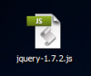
Et oui ! Ce petit fichier, c'est bien jQuery !
Euh... et c'est ce petit truc de rien du tout qui nécessite un cours entier ? Elle me paraît pas franchement crédible toute cette histoire...
Et pourtant ! :D
jQuery n'est pas n'importe quel fichier JavaScript. C'est une énorme bibliothèque de fonctions JavaScript qui ont été écrites et regroupées en un seul et unique fichier pour plus de simplicité.
Vous êtes intrigué par le contenu de ce fichier... et vous avez du mal à croire qu'il peut à lui seul être l'objet d'autant d'engouement. C'est normal. Cliquez plutôt sur ce lien pour voir le code de jQuery dans sa version 1.7. Plutôt impressionnant non ? Cela prend tout de suite une autre ampleur. :lol:
Ce qu'il faut vous dire, c'est que jQuery est vraiment une grosse boîte à outils, et pas "un petit fichier de rien du tout". Le nombre de fonctions qui sont contenues dans ce simple fichier est vraiment grand. Et ces outils n'ont qu'un seul but : vous permettre d'écrire moins de code JavaScript, pour être toujours plus productif et efficace dans vos développements !
jQuery, un framework ou une librairie ?
Pour cette petite question de vocabulaire, nous allons vous apporter un élément de réponse. Vous avez très certainement au cours de vos visites sur le web entendu parler du mot librairie.
Le cas le plus simple : une librairie
Une librairie, en programmation, est une bibliothèque de fonctions. Elles sont composées généralement par d'autres personnes qui les ont mises à disposition de tous, pour gagner du temps dans le développement. Elles sont souvent constituées d'un ou de plusieurs fichiers qui contiennent les fonctions. Tout ce que le programmeur a à faire, c'est d'inclure la librairie dans son code. Il peut ainsi commencer à utiliser les fonctions qui s'y trouvent pour avancer dans son code.
Mais alors, jQuery c'est exactement ça non ? Pourquoi est-ce que vous parlez de frameworks depuis tout à l'heure ?
Il existe en fait une petite différence toute simple entre framework et librairie, et cette différence, nous nous proposons de vous l'expliquer dès maintenant pour mieux comprendre l'impact que jQuery va avoir sur votre manière de coder.
Un cas plus complexe : un framework
Un framework, c'est quelque chose de déjà plus complexe qu'une librairie. Les frameworks sont généralement beaucoup plus massifs que les librairies, et pour cause : ils proposent plus de choses. En fait, lorsque l'on code avec une librairie, ce sont les fonctions qui la compose qui vont s'intégrer à notre code. Avec un framework, ce n'est pas du tout pareil.
Le framework pose les bases d'une application, et il va nous "forcer" à programmer selon les codes qu'il nous impose. Ainsi, on peut dire que c'est notre manière de coder qui s'intègre à la vision du framework. Pour jQuery, c'est exactement ça.
jQuery est plus qu'une simple librairie même s'il en a les traits majeurs, il va vraiment vous faire coder en JavaScript d'une nouvelle manière. Et ceci à tel point qu'il est tout à fait possible de considérer jQuery comme un langage un peu à part, puisqu'il s'agit vraiment d'une redécouverte totale de JavaScript. Lorsque vous commencerez à travailler vraiment avec jQuery, vous comprendrez réellement tout le sens de cette phrase.
Vous voulez un peu savoir ce que ce framework a dans le ventre ? Très bien ! Voyons maintenant à quoi peut (et va !) nous servir jQuery concrètement dans notre site web.
jQuery est un framework qui va nous simplifier la vie d'une manière générale, et cela va passer par plusieurs fronts.
Nous allons lister quelques petites choses qui feront que demain, cet outil que vous allez apprendre à utiliser vous sera totalement indispensable pour presque tous vos développements en JavaScript.
Les points forts de jQuery
Si vous êtes un habitué du JavaScript, vous savez que chaque navigateur web dispose d'un moteur JavaScript qui lui est propre. Ce moteur, c'est lui qui va "parser" votre code JavaScript, et faire agir le navigateur en fonction de celui-ci.
jQuery et la compatibilité
Concrètement, la compatibilité inter-navigateurs signifie qu'un code JavaScript qui fonctionne sur un navigateur web doit fonctionner sur un autre. Et bien devinez quoi ? jQuery uniformise le tout ! Au final, un code JavaScript respectant les normes imposées par jQuery sera compatible sur tous les navigateurs web.
Un gain de temps et d'énergie plus qu’appréciable, vous permettant de vous focaliser vraiment sur le cœur de votre code, plutôt que sur des questions de compatibilité entre navigateurs.
jQuery et l'AJAX
Dans le même registre de compatibilité, l'AJAX avec jQuery a été grandement simplifié. AJAX est rendu possible grâce à un objet de JavaScript appelé XmlHttpRequest (XHR)... seulement, instancier un objet XmlHttpRequest peut vite devenir un véritable calvaire, car d'un navigateur à l'autre, cela ne se fait pas du tout de la même manière. Grâce à jQuery, instancier un objet XHR est très simple. Une seule fonction instancie l'objet, et elle couvre tous les navigateurs, en plus de vous fournir des outils pour gérer au mieux votre requête ! AJAX devient donc étonnamment facile et rapide à utiliser.
jQuery et les animations
L'un des éléments incontournables de jQuery et qui a fait son succès est incontestablement la possibilité de créer des effets sur sa page. Envie de faire disparaître un bloc avec un effet de fondu, ou bien faire trembler un bouton submit sur votre page web ? Pas de problème ! jQuery le fait pour vous.
Vous verrez que la masse de fonctions que jQuery vous proposera afin de créer des effets sur vos pages web sera tout simplement impressionnante. Vous verrez aussi que la densité de la documentation en témoignera.
jQuery et les formulaires
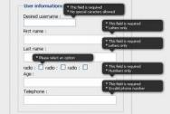
Un des points forts de jQuery est qu'il va vous permettre d'effectuer un pré-traitement de vos formulaires HTML côté client, de manière très avancée. Nous pourrons ainsi relever quels type de formulaires ont mal été remplis et afficher ceci au visiteur.
Ainsi, ne comptez pas QUE sur jQuery pour valider vos données. Vous devrez également prévoir une validation côté serveur, avec un langage tel que PHP.
Et tout cela, c'est sans parler de toute la panoplie d'outils disponible pour manipuler pleinement le DOM que jQuery vous offre. Pas de doutes, jQuery est le choix pour lequel vous devez opter aujourd'hui pour donner une nouvelle dimension à vos futurs sites.
Nous ne pouvons que vous encourager à vous accrocher et à apprendre cette technologie. Avec ce tuto entre les mains, ce travail d'apprentissage n'en sera que plus facile. :-°
Le framework jQuery est à la base l'œuvre d'un seul homme, un programmeur JavaScript hors-pair qui a su, en 2006, initier le projet.
Son nom est John Resig. Depuis 2006, John Resig est resté le chef de projet de jQuery. C'est ainsi lui qui supervise encore aujourd'hui le développement de jQuery.
Il travaillait pour le compte de la Mozilla Corporation en tant que développeur JavaScript.
Malgré le travail colossal que Resig a su faire sur le framework jQuery, vous imaginez bien que cet homme n'a pas pu à lui seul créer un tel outil. Les autres développeurs de jQuery, ce sont les membres de sa communauté.
En effet ! John Resig a publié le framework sous licence MIT et GNU GPL : deux licences libres. Cela signifie concrètement que tout le monde peut travailler sur le framework et participer à son amélioration. Vous verrez notamment plus tard qu'il existe des plug-ins jQuery que vous pourrez créer vous-même, afin de toujours plus compléter le framework... mais nous n'en sommes encore pas là. ^^
A ce jour, jQuery en est à sa version 1.7.2, et a déjà subi beaucoup de mises à jour. La communauté est en effet très active, et les mises à jour se font toujours régulièrement.
jQuery est le framework JavaScript le plus utilisé sur le web, et ce, pour les qualités que nous vous avons présentées plus haut.
Voici quelques grands noms du web qui utilisent aujourd'hui jQuery de manière plus ou moins abondante, cela devrait vous aider à faire définitivement votre choix. :)
Site du Zéro
Google et ses différents services
Mozilla
Amazon
...
Sachez également que les CMS les plus répandus sur le web comme Drupal et Wordpress utilisent jQuery !
Cette introduction à jQuery et à son histoire est maintenant achevée. Nous espèrons que cela vous aura plus, et que vous cernez maintenant un peu mieux ce qu'est jQuery.
Nous allons maintenant nous intéresser aux outils dont on va avoir besoin pour coder correctement et efficacement avec jQuery.
La préparation est probablement l'élément le plus important, quel que soit le projet que vous souhaitez mener, et ce, pas seulement en développement.
Afin de maximiser nos chances d'apprendre jQuery dans les meilleures conditions, nous allons nous aussi passer par toute une phase de préparation. Ici, c'est vous et votre ordinateur que nous allons devoir préparer à utiliser jQuery... cela passe surtout par s'équiper de bons programmes.
Vous verrez, nous n'avons pas besoin d'être armés jusqu'au dents pour développer avec jQuery, un bon couple navigateur/éditeur suffit. :-°
jQuery étant une technologie axée web, le navigateur sera sans aucun doute le programme dont vous aurez le plus besoin ici. Seulement, comment choisir le bon navigateur web pour travailler, quand on a toute une panoplie de produits tous plus excellents les uns que les autres ?
Ce choix est d'autant plus difficile lorsque l'on connaît les problèmes de compatibilité liés à l'utilisation de JavaScript dans son code... mais ici pas de problème, puisque jQuery va nous permettre de ne plus prendre ce paramètre en ligne de compte ! :D
Considérant cet élément, le choix du navigateur se résumera donc seulement à prendre celui avec lequel vous êtes le plus à l'aise. Voici une liste vous présentant les différents navigateurs web, honteusement reprise du tutoriel de référencement web du Site du Zéro. ;)
Icône
Nom
OS
Téléchargement
Déscription
Internet Explorer
Fourni par défaut avec Windows.
Un navigateur web signé Microsoft et intégré par défaut à toutes les versions du système d'exploitation Windows. Si vous tournez actuellement sous Windows, alors vous disposez de ce navigateur. Je ne vous recommande pas d'utiliser ce navigateur, car les versions les plus récentes ne sont pas disponibles pour les systèmes comme Windows XP qui sont pourtant massivement utilisées encore aujourd'hui.
Il y a donc une grosse probabilité que votre version d'Internet Explorer ne soit pas capable de reconnaître les dernières avancées technologiques en matière de standards web.
Un autre navigateur web signé cette fois-ci par Google. Le programme est basé sur un projet open-source baptisé Chromium, mais connaît quelques controverses vis à vis du respect des informations personnelles de ses utilisateurs. Il est néanmoins recommandé de l'utiliser tant il est performant.
Chromium est le projet open-source sur lequel est basé Google Chrome. Il s'agit en fait de Google Chrome lavé de tous les ajouts de Google. Vous pouvez l'utiliser si vous êtes inquiet au sujet des questions du respect des informations personnelles.
Opera est un navigateur web de très grande qualité proposé gratuitement par l'entreprise Opera Software. Il est moins utilisé que les 4 précédents mais demeure un excellent produit.
Safari est le navigateur web d'Apple qui équipe tous les ordinateurs Apple par défaut. C'est un peu l'Internet Explorer de la pomme de ce point de vue.
Maintenant que nous vous avons présenté ces navigateurs majeurs que tout le monde utilise sur le web, nous pouvons quand même souligner qu'il y en a un qui ressort nettement plus que les autres. Ce navigateur, c'est Mozilla Firefox !
Et... pourquoi cela ?
Simplement parce que Firefox est vraiment le meilleur de tous les navigateurs lorsqu'il s'agit de développer pour le web. Nous souhaiterions vous faire découvrir (ou redécouvrir) un outil spécialement dédié au développement web, et surtout uniquement disponible sous Mozilla Firefox.
Cet outil, nommé Firebug vous sera vraiment d'une aide capitale dans vos futurs développement web, en particulier avec JavaScript et jQuery.
Firebug est en fait une extension gratuite pour Firefox, qui est vraiment devenue incontournable pour tout développeur web qui se respecte.
Ajoutez Firebug à votre navigateur Firefox !
Elle a été développée par des développeurs indépendants, et vous pourrez l'ajouter directement à votre navigateur Firefox sur le site officiel Mozilla Addons.
Dans une optique d'aide au développement, l'extension Firebug se caractérise en fait par toute une panoplie d'outils pour le développement web qui vont venir s'intégrer complètement à Firefox dans le but de le compléter et de le rendre beaucoup utile et agréable à l'utilisation. Etant donné que c'est un ajout à Firefox, vous devez être conscient que l'installation de ces outils rend le navigateur sensiblement plus lourd, donc plus lent à l'exécution.
Utiliser la boîte à outils Firebug !
Pour commencer à utiliser Firebug, il serait bien convenu d'arrivé à l'ouvrir vous ne pensez pas ? :)
Une fois que vous y êtes... faites très attention, car la manipulation que vous allez devoir réaliser pour ouvrir Firebug va être tellement complexe que... bon ok, j'arrête. Contentez-vous simplement d'appuyer sur F12 et ça fera l'affaire. :D
La magie opère, et Firebug s'ouvre dans Firefox !
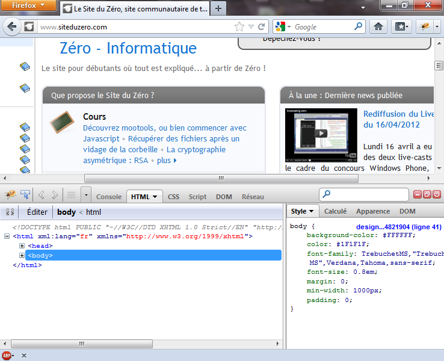
Firebug ouvert dans le navigateur Firefox !
Vous pouvez voir que Firebug dispose de 6 onglets, proposant des outils différents. Chaque onglet est découpé en deux zones ayant toutes une utilité différente de l'autre. Trois de ces onglets vont retenir notre attention pour le moment.
Console
C'est de loin celui qui va le plus nous intéresser dans nos développements avec jQuery. C'est une console JavaScript qui vous retournera notamment les erreurs que vous pourriez commettre dans votre script jQuery ; vous permettant ainsi de les solutionner le plus facilement possible. Autre intérêt majeur de la console : elle vous permettra de taper du code JavaScript et de le tester à la volée. Vous pouvez aussi utiliser le site web jsFiddle. C'est un site "bac à sable". Idéal pour vous exercer.
HTML
Pour l'onglet HTML, Firebug vous propose un outil vous permettant d'inspecter votre code HTML et de le modifier à la volée. Vous pourrez naviguer dans l'arboresence du document HTML, et la modifier très facilement. Vous verrez également vos modifications s'appliquer en direct sur le rendu de la page ouverte dans le navigateur.
CSS
L'onglet CSS propose exactement la même chose l'onglet HTML, mais apadté pour les feuilles de style. Ici, vous pourrez modifier ou supprimer à la volée n'importe quelle propriété CSS contenue dans les feuilles de style reliées à la page.
Mine de rien, ces outils vont nous être sacrèment utiles pour développer en jQuery. Pour la suite : sachez qu'il existe 3 autres onglets : Script, DOM et réseau, mais que nous ne souhaitons pas développer dans cette partie du cours sur jQuery. Si vous souhaitez avoir plus d'informations sur Firebug dans son ensemble, nous pouvons vous conseiller de lire cet excellent tutoriel sur l'extension Firebug disponible sur le Site du Zéro. :)
Le dernier élément dont vous aurez besoin pour développer avec jQuery... ce sera bien sûr un éditeur de texte.
Un éditeur de texte performant et efficace
Nous ne pouvons pas opter pour n'importe quel éditeur de texte pour développer avec jQuery, et c'est d'ailleurs vrai pour n'importe quel langage. Ce qu'il nous faut, c'est un éditeur suffisament perfectionné pour gérer la coloration syntaxique. Ils sont nombreux, mais tout cela pour dire qu'il ne faut pas se laisser aller et utiliser le Bloc Note fourni par défaut avec Windows. ^^
Nous allons vous conseiller là-encore quelques exemples de programmes à utiliser, sachez qu'ils ne sont pas les mêmes en fonction du système d'exploitation que vous utilisez.
Sous Windows
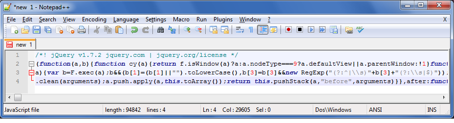
Le code du framework jQuery ouvert sous Notepad++
Sous Windows, on peut trouver des éditeurs vraiment très performants. Nous utilisons respectivement les éditeurs Notepad++, qui a le mérite d'être gratuit, et l'éditeur Sublime Text 2. Pour ce dernier, sachez que le programme n'est pas gratuit et qu'il faudra songer à l'enregistrer au bout d'une certaine période.
Ces deux éditeurs sont vraiment de qualité. Sachez que Sublime Text 2 vous donne en plus de cela la possibilité de naviguer dans votre arborescence, un peu à la manière d'un IDE. Un autre programme existe pareil ailleurs : ConTEXT. Pour l'avoir essayé, il est lui aussi de très bonne qualité en plus d'être gratuit.
Sous Linux
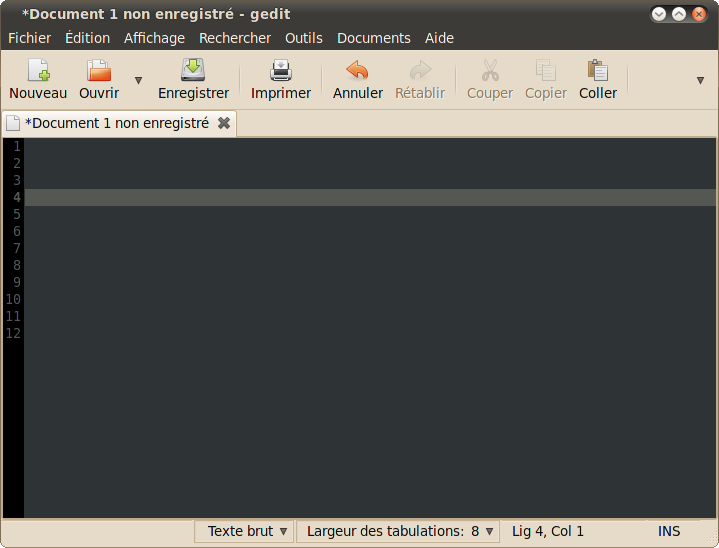
L'éditeur Gedit sous GNU/Linux Ubuntu 10.04
Sous Linux on a là encore beaucoup d'éditeurs différents et ils ont tous beaucoup d'atouts dans leur manche. Si vous êtes un habitué de la console et que vous ne souhaitez pas être dépaysé, vous pourrez toujours éditer vos fichiers avec Vim ou Emacs. Si en revanche vous préférez utiliser un éditeur graphique, l'éditeur de texte Gedit ou Geany sont tous les deux excellents.
Sous MacOS X
Le logo de l'éditeur Smultron sous MacOS X
Le système d'exploitation de la firme Apple a lui aussi son lot d'éditeur. Le plus connu est sans doute Smultron, qui a été créé par un développeur Suédois.
Choisissez l'éditeur de texte avec lequel vous êtes le plus à l'aise. Si vous avez l'habitude de créer des sites internet, l'éditeur que vous utilisez pour HTML n'a aucune raison de ne pas connaître JavaScript. Et s'il connaît JavaScript : c'est qu'il connaît jQuery. :)
Vous arrivez bientôt au terme de votre préparation, bientôt nous allons pouvoir aborder réellement jQuery et commencer à coder avec lui. :)
Le chapitre qui suit sera le dernier chapitre introductif au cours. Nous allons faire une dernière petite mise au point... cette fois-ci au niveau du JavaScript. Vous remettre en mémoire une dernière fois les fondements de ce langage ne sera pas de trop avant d'apprendre jQuery !
Histoire de mettre tout le monde sur la même longueur d'onde, nous vous proposons un petit rappel sur les rudiments de JavaScript, ses bonnes pratiques, quand l'utiliser, et surtout pourquoi. Ce chapitre ne se veut en aucun cas un apprentissage ultra-rapide du langage, il existe d'ailleurs un big-tutoriel sur le Site du Zéro pour cela.
Avant tout chose, il nous faut définir la place que prendra notre code JavaScript dans la page. En effet, la structure se doit d'être claire, car on ne développe pas n'importe comment. Pour les connaisseurs, avez-vous pour habitude de placer du code PHP dans une page portant l'extension .html ? Pour sûr que non ! :D
Avec JavaScript, on sera un peu moins regardant à ce niveau, mais il est quand même préférable de bien diviser son code.
Où placer son code JavaScript ?
Cette question, bien qu'elle semble simplette et dénuée d'intérêt, fait parfois l'objet de débats sur le web. Certains diront qu'un code JavaScript DOIT se placer entre les balises <head></head>, car c'est comme cela que le langage HTML a été construit. En revanche, les non-adhérants à cette pratique diront que, pour un soucis de performance, il est largement plus rentable de placer JavaScript en fin de page, juste avant la fermeture de la balise <body>.
Le problème se pose maintenant : qui a raison, et qui a tort ? :o
Au cours de ce tutoriel, nous ne vous obligerons pas à préférer la première ou la deuxième pratique, mais il est clair pour nous que placer son code JavaScript en fin de page est plus logique : la structure HTML, le DOM, se charge ainsi en premier en raison de la lecture linéaire du navigateur, ce qui est le plus important. Vient ensuite JavaScript, qui se chargera d'ajouter tous les effets et applications voulues. Les codes que nous vous présenterons seront donc toujours placés en fin de page, ou dans des documents externes chargés en derniers.
Une des autres choses à retenir, c'est qu'il faut savoir utiliser JavaScript avec parcimonie. Souvenez-vous toujours que c'est un langage qui s'exécute du côté client, et qui est donc facilement contournable grâce à un bon navigateur. Ainsi, vérifier des informations peut se faire en JavaScript, mais doit toujours être assuré également du côté de votre serveur, qui lui n'est pas accessible. Cela vous évitera bien des problèmes !
Parallèlement, n'utilisez JavaScript que lorsqu'il est utile, c'est-à-dire lorsqu'il apporte quelque chose au visiteur. Faire un déluge de flocons de neige sur la page d'accueil présente très peu d'intérêt, et aura plutôt tendance à agacer l'utilisateur. :-° De même, ne chargez pas vos informations essentielles avec ce langage : les personnes l'ayant désactivé, les personnes handicapées et les robots des moteurs de recherche ne pourront ou ne sauront pas lire votre contenu !
JavaScript doit donc être sur un site web pour, par exemple, améliorer l'expérience utilisateur, mais surtout pas pour la création de contenu.
Parmis les bonnes pratiques à adopter en JavaScript, il y a celles qui concernent les variables et les fonctions. Nous ne vous parlerons que de ces éléments pour la simple et bonne raison que leur déclaration ne change pas avec jQuery, contrairement aux évènements, par exemple. Si vous ne savez pas ce qu'est une variable ou une fonction, nous vous conseillons vivement d'aller lire un tutoriel consacré à JavaScript !
De la déclaration des variables
Les variables en JavaScript se déclarent toujours de la même façon : il faut précéder le nom du mot-clé var. Il est possible de déclarer plusieurs variables à la suite en les séparant de virgules :
var maVariable = 1, // cette variable vaut 1
maVariable2, // celle-ci est déclarée, mais vide
maVariable3 = true; // celle-ci contient le booléen true
Traditionnellement, on déclarera nos variables en début de code ; ce n'est pas le langage qui veut cela, c'est juste une façon d'y voir plus clair. ^^
Concernant les tableaux, plus couramment appelés arrays, et les objets, ils se déclarent grâce à leur structure particulière. Ainsi, on initialisera un tableau avec des crochets [ ], et un objet avec des accolades { }.
Fonctions et arguments
Les fonctions en JavaScript se déclarent de la même manière qu'en PHP, par exemple. Beaucoup de langages de programmation se ressemblent, surtout à ce niveau. Ainsi, il suffit d'écrire le mot-clé function suivi du nom de la fonction pour déclarer celle-ci et pouvoir l'utiliser. Elle peut aussi prendre des arguments, qui feront office de variables accessibles uniquement dans la fonction qui les a instancié. Il est donc possible d'exploiter des données différentes avec une seule fonction.
function helloWorld(nom){
alert('Hello World, ' + nom + '!');
}
helloWorld('Sainior'); // affichera une alerte "Hello World Sainior !"
Cas des fonctions anonymes
Il est possible, en JavaScript, de déclarer des fonctions qui ne possèdent pas de nom. Assez joliment, on les a appelées « fonctions anonymes ». Elles permettent de lancer une fonction directement depuis une variable, par exemple, ou même une autre fonction ! Elles seront donc très utilisées dans ce cours, donc assurez-vous bien d'être au point avec. Pour exemple, si je déclare une fonction anonyme dans une variable, je pourrai exécuter la fonction avec la variable :
var helloWorld = function(){ // cette fonction est anonyme
alert('Hello World !');
}; // attention au point-virgule, il ne faut jamais l'oublier !
helloWorld(); // affichera une alerte "Hello World !"
Vous êtes maintenant au point pour commencer à vous lancer avec jQuery ! Ces chapitres d'introduction ont peut-être été un peu long, mais nous pensons qu'il est nécessaire que vous soyez sûr de vous pour coder dans de bonnes conditions. Alors n'attendez plus, on commence dès maintenant ! :p
Pour commencer à travailler avec jQuery sur votre site web, il va falloir tout naturellement l'inclure dans vos pages. Voyons ici comment l'on va procéder.
Deux méthodes pour inclure jQuery dans vos pages web
Vous devez savoir qu'il existe deux méthodes pour inclure jQuery dans vos pages. Les deux marchent et sont tout à fait valables, mais l'une est plutôt déconseillée alors que l'autre est au contraire vraiment très conseillée.
Inclure jQuery depuis votre serveur (méthode déconseillée)
La première de ces deux méthodes, celle qui n'est pas conseillée, consiste à inclure jQuery dans vos pages web depuis votre propre serveur. Pour cela, c'est très simple.
Dans un premier temps, nous allons devoir nous rendre sur le site officiel de jQuery : jQuery.com.
Pour récupérer jQuery, vous devez tout simplement cliquer sur l'option "Download" dans le menu du haut. Vous arriverez alors sur une page vous présentant les différentes release de jQuery. A l'heure où nous écrivons ces lignes, la version actuelle est la 1.7.2, et c'est celle que nous utiliserons au sein de ce cours.
Quoiqu'il en soit, la version la plus à jour est placée un peu en avant par rapport aux autres ; pratique pour l'identifier et la récupérer plus rapidement.
Euh... il y a deux release pour la même version non ? Une version "Minified" et une version "Uncompressed"... qu'est-ce que je dois choisir ?
Ah oui ! Nous allions y venir ! :D
En fait, c'est très simple. jQuery vous est toujours fourni en deux exemplaires. Je vous rassure le contenu du fichier est exactement le même. Il n'y a pas 2 jQuery, il y en a bien qu'un seul.
jQuery Minified
jQuery Minified est le framework jQuery "compressé". En effet, vous avez pu vous rendre compte : jQuery est un fichier qui est vraiment immense, et dans ce fichier immense vous pouvez voir qu'il y a beaucoup d'espaces et beaucoup de retours à la ligne : pour garder un peu de lisibilité pour les codeurs. Le problème, c'est qu'en faisant ça, le fichier prend vraiment plus de place. La version Minified répond à ce problème : tous les espaces et retours à la ligne sont retirés. Cela a pour effet de rendre le code complètement illisible, mais en revanche, jQuery sera téléchargé plus vite par vous et vos visiteurs !
jQuery Uncompressed
jQuery Uncompressed est "l'autre jQuery". Celui qui a conservé les espaces et les retour à la ligne pour garder de la lisibilité, mais qui est plus long à charger.
Bref, pour en revenir à notre inclusion dans nos pages, téléchargeons la version compressée de jQuery. Faites donc un Clic Droit -> Enregistrer sous, et placez jQuery dans un dossier facile d'accès pour pouvoir l'inclure plus facilement dans votre page web.
La suite est très simple et très basique. Ouvrons un document HTML.
<!DOCTYPE html>
<html>
<head>
<meta charset="utf-8" />
<title>Test jQuery</title>
</head>
<body>
<p>On va bosser avec jQuery, c'est super !</p>
<script src="chemin/vers/jquery.js"></script>
</body>
</html>
Et voilà ! Si le chemin d'accès vers le fichier est correct, jQuery a bien été relié à votre page web... seulement, cette méthode n'est franchement pas recommandé, car elle va faire bosser votre serveur un peu plus, et surtout inutilement.
On va voir tout de suite la deuxième méthode, celle qui est vraiment beaucoup plus recommandée par tous les développeurs jQuery !
Inclure jQuery depuis un serveur distant (Google !)
Et oui ! La méthode la plus recommandée pour inclure jQuery dans votre page web est encore d'inclure le fichier directement depuis un serveur distant.
Seulement voilà, il faut trouver quelqu'un de suffisamment fou pour pouvoir héberger un fichier aussi utilisé que jQuery et le mettre à disposition de tous les développeurs de la planète qui veulent l'utiliser... et il y a bien une entreprise qui fait ça, c'est Google !
Google n'est pas seulement un moteur de recherche et une suite de sites web, c'est aussi une entreprise qui a montré depuis toujours un intérêt farouche pour l'open-source. C'est ainsi que Google met à disposition de tous le framework jQuery hébergé directement sur ses serveurs. Google vous fournit un lien absolu à indiquer dans vos pages, et c'est tout bon, jQuery est inclus !
Reprenons le même code source que tout à l'heure, et adaptons-le pour ce deuxième cas de figure.
<!DOCTYPE html>
<html>
<head>
<meta charset="utf-8" />
<title>Test jQuery</title>
</head>
<body>
<p>On va bosser avec jQuery, c'est super !</p>
<script src="https://ajax.googleapis.com/ajax/libs/jquery/1.7.2/jquery.min.js"></script>
</body>
</html>
jQuery est prêt à l'emploi !
Le lien vers jQuery Minified chez Google est https://ajax.googleapis.com/ajax/libs/jquery/1.7.2/jquery.min.js
Et le lien vers jQuery Uncompressed chez Google est https://ajax.googleapis.com/ajax/libs/jquery/1.7.2/jquery.js
jQuery n'est d'ailleurs pas le seul framework libre que Google héberge et propose à tout le monde. Si vous voulez voir l'intégralité des outils proposés par Google, vous pouvez vous rendre sur cette page. Les liens absolus à indiquer sont également référencés sur cette page du site Google dédié aux développeurs.
Et pourquoi cette méthode est-elle la plus recommandée des deux ?
La réponse à cette question est très simple : c'est juste pour moins faire travailler notre serveur. En plus de cela, inclure jQuery depuis un serveur Google permet une mise en cache immédiate, pour toujours accélérer les temps de chargement de votre site. C'est donc plus une question de performance qu'autre chose.
Ainsi, pensez bien qu'à chaque fois que vous travaillerez en jQuery, il vous faudra inclure le framework depuis un serveur Google !
jQuery est donc inclus à notre page web... c'est bien beau, mais l'idéal serait quand même d'arriver à utiliser ce qu'il a à nous proposer non ? Voyons comment faire dès maintenant pour exploiter toute la puissance du framework. ^^
Une fonction générique : jQuery() ou $()
L'ensemble du framework jQuery repose sur une seule fonction. C'est la fonction la plus importante du framework, vous devrez toujours l'utiliser dès qu'il s'agira de développer en jQuery. Cette fonction, c'est tout bêtement la fonction jQuery() !
Elle va servir tout simplement à dire : "Hop là ! A partir de maintenant, c'est du jQuery qu'il va y avoir". Sans cette fonction, le code jQuery peut ne pas être interprété correctement. C'est peut-être là une faiblesse qui n'en est pas une pour le framework : tout le code qu'on l'on va devoir écrire, on va devoir le faire au sein de cette fonction. :-°
Reprenons notre code de tout à l'heure et voyons comment appeler la fonction jQuery().
<!DOCTYPE html>
<html>
<head>
<meta charset="utf-8" />
<title>Test jQuery</title>
</head>
<body>
<p>On va bosser avec jQuery, c'est super !</p>
<script src="https://ajax.googleapis.com/ajax/libs/jquery/1.7.2/jquery.min.js"></script> <!-- jQuery est inclus ! -->
<script>
jQuery(document).ready(function(){
// Du code en jQuery va pouvoir être tapé ici !
});
</script>
</body>
</html>
Oulah, il y a déjà pas mal d'infos dans ce code que nous allons devoir vous expliquer. :waw:
Laissons un peu tomber le HTML pour le moment et focalisons-nous sur le JavaScript. Essayez simplement d'imaginer que nous nous trouvons dans une page HTML complète.
jQuery(document).ready(function(){
// Du code en jQuery va pouvoir être tapé ici !
});
Alors, comme nous vous le disions, on a déjà pas mal de nouveautés dans ce code : la ligne 1 en contient le plus.
jQuery(document)
jQuery prend un argument. Ici, elle cible le "document", qui représente tout simplement votre document HTML sur lequel vous travaillez : votre page web.
La suite de ce code est vraiment très simple. Vous voyez que le prochain élément qui arrive, est l'événement ready. Cet événement se traduit simplement par "est prêt". Une fois que cet événement est vérifié, on lance une fonction anonyme dans laquelle on va placer notre jQuery. :)
Ainsi, cette ligne peut être traduite par : "quand le document HTML est prêt (sous-entendu, est chargé), lance une fonction qui contient le code jQuery."
Cette petite structure de rien du tout signifie vraiment beaucoup de choses : on attend simplement que la page HTML soit chargée avant de commencer à parler de jQuery. C'est LA structure que vous devrez utiliser dans 99% des cas pour coder en jQuery dans votre page. Retenez-la par cœur, parce que cela vous fera vraiment gagner du temps.
Et comment on peut vérifier que tout cela est fonctionnel ?
Vous pouvez simplement ajouter un console.log à la place des commentaires dans le code ci-dessus pour voir si vous recevez bien quelque chose dans votre console Firebug à l'exécution de ce code. Vous pouvez également utiliser la méthode hard en utilisant carrément un alert(). ;)
Vous pouvez vous y prendre comme ceci :
/*
* Avec un console.log
*/
jQuery(document).ready(function(){
console.log("jQuery est prêt !");
});
/*
* Avec un alert()
*/
jQuery(document).ready(function(){
alert("jQuery est prêt !");
});
Essayez ce code ! Si vous avez un retour dans votre console ou dans votre navigateur, c'est tout bon !
Quoiqu'il en soit n'oubliez pas cette structure... d'ailleurs, on peut un peu la simplifier en ne spécifiant pas le ready() :
/*
* La structure de base simplifiée.
*/
jQuery(function(){
});
$() un alias de jQuery()
Vous savez tous qu'un programmeur, c'est par définition quelqu'un de très fainéant. Alors comme on a trouvé que c'était trop long d'écrire jQuery() pour appeler la fonction, on s'est dit qu'on allait créer un alias pour pouvoir l'appeler plus facilement. Ainsi, il faut savoir que la fonction jQuery peut aussi s'appeller avec $(). Le reste du code reste exactement le même.
Ainsi...
jQuery(function(){
alert('jQuery est prêt !');
});
... et...
$(function(){
alert('jQuery est prêt !');
});
... vont donner exactement le même résultat !
Notez par ailleurs que l'alias $() est vraiment le plus utilisé sur le web, tout simplement parce qu'il est plus rapide à écrire. Ainsi, dans la suite de ce cours nous utiliserons toujours l'alias $() pour les codes que nous vous fournirons. Vous feriez mieux de vous aussi prendre l'habitude. Vous verrez, ce n'est pas très compliqué, vous avez juste à vous dire qu'il y a écrit "jQuery" à la place de "$" !
Éviter le conflit
La plupart des bibliothèques JavaScript utilisent elles aussi le $ (dollar), ce qui peut être la source de conflit entre les différentes librairies sur une même page. Pour éviter ce genre de problème, il est possible de passer la variable jQuery à une fonction anonyme pour être sûr que notre alias ne soit pas l'origine de conflits.
(function($){
// notre code ici
})(jQuery);
Parallèlement, ready() accepte également un alias en paramètre de la fonction anonyme. Il est alors possible de simplifier le code au maximum :
jQuery(document).ready(function($){
// notre code ici
});
// ce code plus court revient au même :
jQuery(function($){
// notre code ici
});
Comme nous venons de le voir, le framework met en place une fonction dite principale. Le principe de fonctionnement de jQuery repose en fait entièrement sur celle-ci ! Autant dire que vous allez vous servir beaucoup plus du caractère $ (dollar) dès à présent ! ;)
Ainsi, pour agir avec les éléments d'une page web, on réalisera ce qu'on appelle couramment un « ciblage d'élément », qui représentera une balise, par exemple. On agira ensuite dessus grâce à des méthodes. Pour que vous ayez un aperçu, voici un code fictif tout simple usant du principe de jQuery :
$('monElement').maMethode();
Je cible dans un premier temps mon élément qui jouera le rôle d'objet, grâce à un sélecteur (chose que nous verrons plus en détails dans le prochain chapitre). Je peux ensuite agir dessus grâce à une méthode !
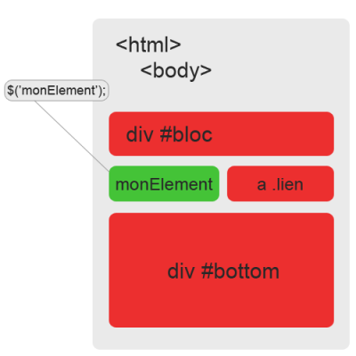
Mais c'est quoi une méthode ?
Une méthode en jQuery est une fonction un peu spéciale qui agira directement sur l'objet (ou l'élément ciblé, si vous préférez) indiqué. Le framework en possède beaucoup, mais il est possible de créer les nôtres ! Nous verrons cela dans un chapitre dédié, lorsque vous serez plus à l'aise avec jQuery. Il est possible de chaîner les méthodes, c'est-à-dire que l'on peut en mettre plusieurs à la suite, pour agir sur l'objet en une seule fois.
$('monElement').premiereMethode().deuxiemeMethode();
/* la première méthode agit d'abord sur l'objet, avant la deuxième.
On a donc un ordre logique : les méthodes s'enclenchent les unes derrière les autres */
Si vous avez assimilé ce fonctionnement de base, vous avez fait le plus dur. ^^ Bien sûr, jQuery est bourré d'outils pour rendre la chose un peu plus vivante.
Vous devez commencer à comprendre comment fonctionne concrètement le framework ! :) C'est une très bonne chose, car nous allons monter le niveau d'un cran, et voir les sélecteurs dans le chapitre suivant.
jQuery a une syntaxe qui permet de sélectionner très facilement des éléments sur la page, c'est un de ses plus grands points forts. Mais, au-delà des apparences, la sélection de ceux-ci est plus complexe qu'il n'y paraît. Les sélecteurs en jQuery sont toute une science que nous allons apprendre pas à pas au cours de ce chapitre ! :)
Avant de se lancer dans une foule de sélecteurs propres à jQuery tous plus compliqués les uns que les autres (non, on plaisante :p ), il est nécessaire de débuter par des sélecteurs plus basiques. En effet, le framework que nous étudions fonctionne tout d'abord avec les sélecteurs de CSS. Vous les connaissez surement, ou tout du moins la plupart, car vous êtes censé connaître un minimum la syntaxe du CSS pour suivre ce tutoriel.
Cela ne vous dit vraiment rien ? :euh:
Les sélecteurs les plus utilisés
Peut-être est-ce le mot sélecteur qui vous fait peur. Dans ce cas-là, je pense que votre mémoire va se rafraîchir si je vous parle d'identifiant et de classe. Pour rappel, il est possible d'attribuer une classe ou un identifiant à un élément HTML ; on s'en servira par la suite pour le sélectionner avec CSS, ce qui nous permettra de styliser l'élément.
Avec jQuery, vous pouvez très bien utiliser ces sélecteurs ! Ce sont même ceux-ci qui reviendront le plus souvent dans vos codes. Pour cela, il suffit de suivre simplement la syntaxe suivante, comme en CSS :
$('p'); // je sélectionne tous les paragraphes
$('.maClasse'); // je sélectionne les éléments ayant .maClasse pour classe
$('#monId'); // je sélectionne l'élément qui possède l'identifiant #monId
Frères et parents
Parmi les sélecteurs un peu plus complexes que les classes et les identifiants se trouvent les sélecteurs de descendance. Ce mot bizarrement employé dans un contexte tel que le nôtre cache en fait un concept très puissant de parcours. Vous n'êtes surement pas sans savoir qu'il est possible, en HTML, d'imbriquer des balises les unes dans les autres. Eh bien, ce système fait usage de la descendance !
Prenons un exemple concret. Je possède un paragraphe, dans lequel j'ai un lien absolu. Ma balise <a href="lien"></a> est alors imbriquée dans les balises <p></p> propres au paragraphe.
On dit que le paragraphe est un élément parent, et le lien un élément enfant. Comprenez-vous le principe ? La balise parente à mon lien est la balise qui contient celui-ci. Ainsi, de cette façon-là, la balise <body> est parente de toute notre structure HTML !
CSS, et par extension, jQuery, permet de manipuler ce concept de descendance grâce à des sélecteurs spéciaux. Le plus connu est sans doute le sélecteur qui fait suivre deux éléments au minimum :
$('p .lien');
/* ici, nous sélectionnons tous les éléments ayant la classe .lien,
et contenus dans un paragraphe qui joue le rôle de parent */
Le problème de cette méthode-ci est qu'elle prend en compte tous les éléments possédant la bonne classe et contenus dans un parent. Imaginez que vous ne vouliez sélectionner que les éléments qui descendent directement du bloc parent, c'est-à-dire qui ne sont pas contenus une seconde fois dans un autre bloc. Dans ce cas-là, il vous faudra utiliser un sélecteur un peu moins connu, qui n'est autre que >.
$('p > .lien');
/* ici, nous sélectionnons seulement les éléments ayant la classe .lien,
et descendants directement du paragraphe ! */
Il est ensuite possible de pousser le système encore plus loin, par exemple en utilisant les sélecteurs + et ~ qui se chargent de représenter les frères de l'élément. Ce qu'on appelle couramment les frères, dans ce contexte de jQuery, ce sont simplement les éléments qui se suivent directement, comme par exemple deux liens.
$('.lien + .visite');
/* la sélection s'effectue sur les éléments ayant pour classe .visite,
et qui sont immédiatement précédés d'un élément ayant pour classe .lien */
$('.lien ~ .visite');
/* dans ce cas-là, ce sont tous les éléments .visite,
précédés immédiatement ou non par un élément .lien */
Alors, pas trop compliqué ? :p
Jusque là, vous devriez avoir suivi assez facilement. Les sélecteurs CSS sont une chose assez peu difficile à assimiler, et si vous avez du mal, pas de soucis à avoir, cela viendra avec l'expérience. En attendant ce jour heureux, je vous invite à passer aux sélecteurs propres à jQuery !
Les sélecteurs de CSS, c'est bien, mais des sélecteurs plus sophistiqués ne seraient pas de refus ! En effet, pour les besoins des développeurs, jQuery met en place une sélection d'éléments beaucoup plus poussée que CSS. Comprenez bien que ce n'est pas seulement avec des identifiants et des classes que nous pourrons établir un véritable système, ce serait le chaos total et franchement peu pratique. C'est pourquoi jQuery a mis en place ce que l'on appelle des filtres, qui ont une syntaxe particulière : deux points suivis du nom du sélecteur. Vous en saurez plus en lisant la suite. ;)
La place d'un élément
Parmis les très nombreux sélecteurs proposés par le framework figurent ceux qui permettent de sélectionner un élément suivant sa place sur la page. C'est quelque chose de vraiment pratique qui était assez compliqué à réaliser avec du simple JavaScript. Les plus utilisés et connus sont :
:first, qui sélectionnera le tout premier élément donné ;
:eq(index), qui se chargera de retourner l'élément possédant l'index spécifié ;
:last, je pense que vous l'aurez vite compris, permettra de sélectionner le dernier élément.
Ainsi, de cette façon, il vous suffira de taper ceci pour faire une sélection sur le premier et/ou le dernier élément :
$('p:first'); // sélection du premier paragraphe trouvé
$('a:last'); // ici, on sélectionne le dernier lien de la page
L'index d'un élément
Cela peut vous paraître flou au premier abord, contrairement aux deux autres sélecteurs. En effet, qu'est-ce que l'index d'un élément ?
Eh bien, pour faire le plus simple possible, c'est le numéro qui représente sa place dans la page. Ainsi, si vous possédez cinq paragraphes, vous pourrez par exemple sélectionner le troisième sans problème. Mais attention il y a un piège : il faut commencer à compter à partir de 0. C'est très important de retenir cela, le système est similaire sur les tableaux, par exemple. Alors quel chiffre taperez-vous pour retourner le troisième paragraphe ? :)
$('p:eq(2)'); // c'était 2 !
Sélection par attributs
Un autre type de sélecteurs sont les sélecteurs fonctionnant grâce aux attributs des éléments du DOM. Il est ainsi possible de réaliser de multiples actions sur les balises qui contiennent un attribut donné, tel qu'un identifiant ou une valeur :
$('p[id]'); // retourne seulement les paragraphes ayant un identifiant
Cibler d'autres façons
Heureusement, il est possible de préciser la requête. Imaginons que vous vouliez récupérer les éléments ayant une valeur (value) ou un nom (name) bien précis. Dans ce cas-là, il est possible de le dire à jQuery grâce à la syntaxe suivante :
$('input[name=pseudo]'); // cible seulement l'élément de formulaire ayant « pseudo » pour nom
Si au contraire vous voulez cibler tous les autres éléments, ceux qui n'ont pas la bonne valeur dans leur attribut, il suffit de rajouter un point d'exclamation (!) devant le signe "égal" (=) :
$('input[name!=pseudo]'); // retourne les éléments n'ayant pas « pseudo » pour nom
Le sélecteur :not()
Un peu à part, ce sélecteur particulier permet de cibler les éléments qui sont tout sauf ce qui a été indiqué à l'intérieur. Il permet donc une sélection puissante, et, depuis jQuery 1.3, permet même de spécifier plusieurs types de balises en même temps ! Il s'utilise très facilement :
$('p:not(.rouge)'); // sélection de tous les paragraphes, sauf ceux ayant .rouge comme classe
$('input:not(.bleu, .vert)'); // on sélectionne tous les éléments de formulaire sauf ceux ayant .bleu et/ou .vert comme classe
Autant dire qu'en terme de praticité, ce sélecteur vaut pas mal de points ! :D
Sauver la sélection
Il peut parfois se révéler pratique de sauvegarder un objet jQuery. Il est donc possible de rentrer une sélection dans une variable, cette dernière pouvant être utilisée à la place de la fonction principale.
Pour exploiter la pleine puissance des très nombreux sélecteurs de jQuery, il faut se pencher sur les formulaires en HTML. En effet, l'interaction étant beaucoup plus présente à ces endroits, il est logique que le framework soit plus enclin à les dynamiser. Ainsi, la sélection des éléments de formulaire se fera d'une façon un peu différente, que nous allons commencer à traiter tout de suite. :)
Le type des éléments
Comme vous le savez surement, les éléments de formulaire peuvent changer de type selon ce que l'on veut en faire. La balise ne change pas et reste la même, on utilisera dans 90% des cas <input />. En changeant l'attribut type de la balise, il est possible de spécifier que l'on veut une case à cocher, un champ de texte, un bouton...
Suivant ce principe, on pourrait penser qu'il faut faire ceci en jQuery :
$('input[type=button]'); // on sélectionne un input de type button
Ce code fonctionne parfaitement, mais ce n'est pas la meilleure façon de procéder ! Il y a plus simple, plus rapide et surtout plus propre. Pour respecter cela, il faut indiquer le type, précédé de deux points :
$('input:button'); // on sélectionne un input de type button
Et vous pouvez ensuite faire ceci pour chaque type d'input !
Type
Code
text (Texte)
input:text
password (Mot de passe)
input:password
file (Fichier)
input:file
checkbox (Case à cocher)
input:checkbox
radio (Bouton radio)
input:radio
button (Bouton normal)
input:button
submit (Bouton d'envoi)
input:submit
État des éléments
Dernière petite astuce avant de conclure ce chapitre, vous pouvez établir une sélection suivant l'état des éléments d'un formulaire. Vous allez nous répondre qu'il n'y a pas trente-six états, justement, et vous avez effectivement raison. Neanmoins, ce sont des sélecteurs que nous retrouverons assez souvent, et nous pensons qu'il est intéressant de les connaître.
Ainsi, vous pouvez vérifier qu'une case est cochée, ou qu'un élément est activé/désactivé, grâce aux sélecteurs suivants :
:checked vérifie qu'une case est cochée ;
:disabled cible les éléments désactivés ;
:enabled fait le contraire, il sélectionne les éléments activés.
Le sélecteur le plus spécial est sans aucun doute $(this). Dans la plupart des langages orientés objet, le mot-clé this représente l'objet courant, celui qui est actuellement traité par une fonction, par exemple. jQuery permet la sélection de cet objet.
Exemple avec ce code qui traite chaque élément trouvé :
$('p').each(function(){
$(this).html('Hello World !'); // $(this) représente le paragraphe courant
});
Outre le fait de sélectionner des éléments avec jQuery, il ne faut pas négliger le reste. Ainsi, tout bon développeur sait que la performance est un point primordial dans un code, de quelque langage soit-il issu. La librairie jQuery n'est pas exempt : il faudra vous assurer que votre code est le plus rapide, le plus optimisé et le plus ergonomique possible. Cela passe par une foule de choses, mais nous allons en voir une seule ici : la performance des sélecteurs.
Car oui, les sélecteurs ne ciblent pas tous les éléments à la même vitesse. Ainsi, cibler un élément par un identifiant, par exemple, sera toujours plus rapide que cibler un élément par sa classe.
Les sélecteurs les plus rapides
On note une certaine différence de rapidité lorsqu'il s'agit de cibler des éléments de différentes façons. Le pourquoi est très simple : certains sélecteurs profitent de fonctions natives implémentées par JavaScript, car ils en descendent directement. On pensera donc notamment au sélecteur par identifiant, qui est le plus rapide des sélecteurs : c'est normal, il utilise directement la fonction getElementById() !
Ainsi, on note une rapidité 5 fois supérieure au deuxième sélecteur le plus rapide, qui est le sélecteur par balise. Vient ensuite le sélecteur par classe, les autres enregistrant une forte baisse de performance à l'utilisation.
Ces différences proviennent en fait du parcours du DOM : alors que l'identifiant, étant normalement unique, est ciblé directement par jQuery à cause de sa singularité, les classes vont être traitées une à une, en parcourant tout le document HTML pour les trouver. Pour optimiser au maximum une requête par classe, il suffit de cibler tout d'abord le parent de l'élément avec un identifiant :
$('#menu .sections');
// sélection plus rapide que :
$('.sections');
Écourter les chaînes
Les sélecteurs peuvent s'enchaîner, afin de cibler plus précisément des éléments. Cette astuce possède un lourd inconvénient : elle ralentit considérablement la vitesse de sélection des éléments du DOM. En effet, jQuery va devoir tout d'abord trouver le premier élément, puis va devoir passer au deuxième, et ainsi de suite... Il est alors possible d'augmenter exponentiellement le temps d'exécution du code. Voyons l'exemple suivant :
$('div p a');
$('#lien');
Ces deux ciblages sont identiques, pourtant, la première sélection est, en théorie, environ 15 fois plus lente que la deuxième ! En effet, dans le premier cas, jQuery va parcourir chaque bloc div du document, pour ne retourner que ceux possédant un paragraphe. Viennent ensuite ceux-ci, qui vont être parcourus jusqu'à trouver celui qui possède un lien. En revanche, dans le second cas, le lien va être ciblé directement de part son identifiant unique !
Rappelez-vous donc d'une règle essentielle lorsque vous utilisez jQuery : plus la chaîne de sélecteurs est courte, plus rapide sera la sélection.
C'est la fin de ce chapitre ! Vous avez vu que les sélecteurs de jQuery offrent de nombreuses possibilités de ciblages des éléments d'une page web, et ce n'est que le début de ce fabuleux framework ! Vous verrez dans le prochain chapitre comment gérer les évènements, où vous aurez besoin de mettre en pratique tout ce que vous venez de voir. Assurez-vous donc de bien avoir compris ! :)
En jQuery, vous aurez presque tout le temps à travailler avec ce que l'on appelle des évènements, (events en anglais)... Nous allons voir ce que c'est dans ce chapitre. Qui sont-ils ? A quoi vont-ils nous servir, surtout et comment les aborder dans notre code jQuery ?
C'est vraiment un élément clé du framework, donc forcément, c'est un chapitre clé. Bonne nouvelle : c'est plutôt simple à comprendre. :p
Voyons voir ici ce que sont les évènements... si vous êtes assez à l'aise avec JavaScript, cette sous-partie n'aura probablement pas grand chose à vous apprendre. Mais bien sûr, lisez quand même car vous êtes en train de réapprendre JavaScript à travers jQuery !
C'est quoi un évènement ?
Pour expliquer la chose simplement, dites-vous qu'un évènement est une action remplie par le navigateur, ou plus généralement l'utilisateur. Vous connaissez les conditions ? Pour les évènements, c'est un peu le même principe : on lance un bout de code quand une action est remplie.
D'ailleurs ! Vous vous en êtes peut-être rendu compte, mais dans les chapitres précédents, nous avons déjà utilisé un évènement, le ready() ! Voyons le code que nous avions :
$(document).ready(function(){
// Le code jQuery ici !
});
C'est la fonction de base de jQuery, vous vous souvenez ? Elle marche autour de l'évènement ready() qui écoute le chargement du document. L'écoute d'un évènement, c'est tout simplement le fait d'attacher une action bien précise à remplir à un élément pour déclencher une fonction, appelée écouteur d'évènement.
"QUAND le document est PRÊT, on appelle une fonction (dans laquelle on va mettre du jQuery)."
C'est le fonctionnement de ce code qui tourne autour de l'évènement ready() : tant que le document n'est pas chargé, on ne fait rien. Quand il est chargé, on agit. Fort heureusement pour nous, jQuery peut écouter plein d'évènements différents, on ne se limitera pas qu'à écouter si notre page est chargée ou non. :D
On aura par exemple un évènement qui pourra écouter la souris de l'utilisateur : quand il va cliquer sur un certain élément de votre page que vous aurez ciblé avec un sélecteur, vous pourrez exécuter du code jQuery.
Un autre évènement peut écouter le clavier de l'utilisateur : quand il va presser des touches de son clavier, vous pourrez exécuter là encore du code.
En gros, on peut dire qu'un évènement fait le lien entre une action remplie, et une fonction (du code) exécutée.
Encore une fois, si vous êtes un habitué du JavaScript vous deviez connaître un peu tout ça, si ce n'était pas le cas, pas de problème : maintenant vous connaissez le concept. JavaScript permettait de gérer les évènements d'une certaine manière. Eh bien devinez quoi ? En jQuery, c'est totalement différent ! Bon point : en JavaScript, gérer des évènements ne se faisait pas du tout de la même manière d'un navigateur à l'autre. Sachez que jQuery uniformise encore le tout !
La syntaxe en elle-même est super simple, voyons ce que cela donne ici. Utilisons par exemple l'évènement click() qui est un évènement écoutant le clic de la souris.
$("#uneDiv").click(function(){
// Le code a exécuter !
});
Si on clique sur l'élément qui possède l'id #uneDiv (<div id="uneDiv"></div>), alors vous allez pouvoir déclencher du code JavaScript. Plus tard, lorsque l'on sera un peu plus à l'aise avec jQuery, on pourra par exemple décider de faire disparaître cette div (ou un autre élément !) avec un bel effet, ou même commencer à gérer une requête AJAX pour mettre à jour le contenu de cette div... bref ! Les possibilités sont multiples. :)
Les évènements vous intéressent et vous voulez aller plus loin, alors lisez donc la suite.
jQuery étant très complet il va nous donner l'opportunité d'écouter beaucoup d'évènements sur notre page web. Nous allons en voir quelques uns ici, que nous pensons incontournables.
Déclenchement d'évènements
Parmis les nombreux évènements disponibles, les plus célèbres sont sans aucun doute ceux pouvant être déclenchés par l'utilisateur. Ce sont eux qui permettent une très grande interactivité avec le visiteur, c'est donc eux qui seront les plus utilisés en général. Nous allons en voir quelques uns, ceux qui sont à connaître absolument !
L'écoute sur la souris
La souris d'un ordinateur est un outil qui permet à l'utilisateur de réaliser de multiples actions : cliquer, bouger, double-cliquer, descendre dans une page... Bref, un paquet de mouvements à prendre en compte. Ce qui est génial avec jQuery, c'est que l'on va pouvoir contrôler entièrement les actions du visiteur, et déclencher de multiples fonctions grâce à elles ! :)
Vous connaissez sans doute déjà click(), qui lance une fonction lors du clic de l'utilisateur sur l'objet associé. Nous vous proposons ci-dessous une liste d'évènements adaptés à la souris ; le fonctionnement reste le même.
Action
Fonction
Clic
click()
Double-clic
dblclick()
Passage de la souris
hover()
Rentrer dans un élément
mouseenter()
Quitter un élément
mouseleave()
Presser un bouton de la souris
mousedown()
Relâcher un bouton de la souris
mouseup()
Scroller (utiliser la roulette)
scroll()
L'écoute sur le clavier
Tout comme la souris, le clavier peut tout à fait être écouté par un script jQuery. L'utilisation la plus fréquente que l'on peut en faire est de détecter l'appui d'une touche et de lancer une action seulement si la bonne à été pressée. Les évènements associés ne sont pas très nombreux, on en trouvera seulement trois :
keydown(), qui se lance lorsqu'une touche du clavier est enfoncée ;
keypress(), qui se lance lorsqu'on maintient une touche enfoncée ;
keyup(), qui se lance lorsqu'on relâche une touche préalablement enfoncée.
Pour connaître la touche enfoncée par l'utilisateur, dans chaque cas, il vous faudra employer une fonction anonyme équipée d'un argument représentant le code de la touche, sur lequel on appliquera la propriété keyCode. Cependant, le principal problème de cette propriété est qu'elle ne fonctionne pas sur tous les navigateurs (souvenez-vous que ceux-ci ont des moteurs JavaScript différents). Il faut donc ruser pour rendre notre code compatible tous navigateurs :
$(document).keyup(function(touche){ // on écoute l'évènement keyup()
var appui = touche.which || touche.keyCode; // le code est compatible tous navigateurs grâce à ces deux propriétés
if(appui == 13){ // si le code de la touche est égal à 13 (Entrée)
alert('Vous venez d\'appuyer sur la touche Entrée !'); // on affiche une alerte
}
});
Pour connaître le code d'une touche, je vous invite à aller consulter cette page.
Le cas des formulaires
Les éléments de formulaire possèdent eux aussi leur lot d'évènements associés. Par exemple, lorsqu'un champ est focalisé, on dit qu'il « prend le focus », car c'est sur lui que se trouve notre pointeur. Un évènement permet de contrôler ce genre de chose.
Action
Fonction
Focalisation
focus()
Sélection (p.e. dans une liste)
select()
Changement de valeur
change()
Envoi du formulaire
submit()
Le déclenchement virtuel
jQuery permet de simuler le déclenchement d'évènements grâce à une simple méthode. Pour faire court, vous n'avez pas besoin d'attendre que l'utilisateur remplisse une action précise pour lancer du code : vous pouvez exécuter virtuellement un évènement grâce à trigger() ! Il suffit de donner le type de l'évènement en tant qu'argument.
$('p').click(function(){
alert('Cliqué !');
});
$('p').trigger('click'); // déclenche l'action au chargement du script
Annuler le comportement d'un élément par défaut
Chaque évènement possède son propre groupe d'éléments spécifiques à traiter : par exemple, la soumission de formulaire ne s'applique pas à tous les cas. Cependant, certains éléments ont un comportement par défaut, défini par le navigateur. Le cas le plus courant est le lien hypertexte : son comportement va être de rediriger l'utilisateur vers l'adresse donnée.
Une méthode en jQuery permet d'annuler tous comportement par défaut. Il s'agit de preventDefault().
$('a').click(function(e){
e.preventDefault(); // annule l'action du lien
});
En jQuery, et même plus globalement en JavaScript, on peut faire appel aux gestionnaires d'évènements. Ce sont des fonctions auxquelles on donne un type d'évènement à écouter, ainsi qu'une fonction à exécuter à chaque fois que l'évènement est déclenché. Elles sont plusieurs et nous allons les étudier car elles représentent une partie importante de ce chapitre, si ce n'est LA plus importante !
Rappels
Si vous lisez ce cours, c'est que vous avez quand même quelques notions en JavaScript. Dans un premier temps, rappelez-vous la méthode que vous utilisiez pour écouter un évènement. Il devait sans doute s'agir de addEventListener(), qui signifie en français « ajouter un écouteur d'évènement ». Cette fonction prenait le plus souvent deux arguments : le premier indiquait le type d'évènement à écouter, le second était une fonction de retour exécutant du code.
Un troisième paramètre pouvait être défini à true ou false, et permettait d'utiliser soit la phase de capture, soit la phase de bouillonnement.
L'écoute en jQuery
Sachez qu'avec notre framework, il est possible de réaliser la même chose. L'écoute d'un évènement se réalisera avec la méthode bind() le plus souvent, mais la tendance s'inverse pour laisser place à la fonction on(), recommandée par les auteurs de jQuery depuis la version 1.7 : c'est donc très récent. Comme chaque développeur doit s'adapter au progrès, nous utiliserons la seconde méthode dans la suite de ce chapitre, et plus généralement de ce cours !
Quelle différence entre ces deux fonctions ? Pourquoi utiliser l'une, et plus l'autre ?
On note une différence majeure de flexibilité : nous allons voir juste après qu'il est possible de déléguer des évènements, de faire vivre des évènements, et évidemment d'écouter des évènements. Dans les versions plus anciennes de jQuery, il fallait utiliser trois méthodes différentes pour réaliser ces choses-là. La méthode on() permet de les regrouper en une seule, elle est donc bien plus pratique et ergonomique !
Précédemment, vous avez vu comment déclencher un évènement simple. Les fonctions utilisées n'étaient en fait que des méthodes simplifiées, permettant aux développeurs de ne pas créer à chaque fois un gestionnaire. Nous allons voir à présent l'écoute, la vraie, d'évènements en jQuery.
Pour écouter un évènement, il suffit de réaliser le même schéma de code qu'avec addEventListener(). C'est-à-dire que l'on va donner dans un premier temps le type d'évènement, puis la fonction de callback à exécuter :
Un des avantages de cette technique est que l'écoute peut se faire sur plusieurs évènements en même temps, vous n'êtes pas obligé de créer un gestionnaire pour chacun d'eux ! Ainsi, nous pouvons lancer une écoute sur le clic et sur le double-clic, en séparant les deux types par un espace :
$('button').on('click dblclick', function(){ // on écoute le clic et le double-clic !
alert('Ce code fonctionne !');
});
Passer par un objet
Encore plus fort, vous pouvez passer un objet en tant qu'argument à cette méthode, afin d'exécuter des fonctions différentes pour chaque évènement ! Le concept est très simple, il suffit de donner le type d'évènement en tant qu'identifiant, auxquel vous attachez une fonction de retour à chaque fois :
Ce concept est plutôt simple à comprendre. Il permet en fait de créer un écouteur d'évènements sur un élément, et de s'adapter automatiquement aux éléments similaires créés plus tard, de façon dynamique ! Pour que vous compreniez bien, imaginons que vous ayez un paragraphe simple, sur lequel vous appliquez un évènement. Si vous créez d'autres paragraphes dans la page, ceux-ci ne seront pas pris en compte par l'écouteur !
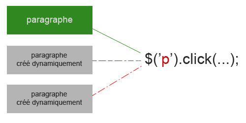
Avant la version 1.7 du framework, il était très courant (et ça l'est encore ajourd'hui) d'utiliser la méthode live(), pour déléguer un évènement à un élément créé dynamiquement. C'est une technique dépréciée, pour la simple et bonne raison qu'elle devient lente sur de grosses pages, et les problèmes de performance sont très mal vus des développeurs. De même, cette méthode parcoure l'ensemble du document, contrairement à on(), qui cible directement un élément ! On a donc une portée restreinte pour une efficacité croissante : double gain de vitesse d'exécution !
La fonction delegate() est presque autant utilisée que live(). La différence entre ces méthodes est que la première fonctionne presque comme on(), et est donc plus propre et ergonomique. Elle n'est pas dépréciée, contrairement à sa cousine, mais encore une fois, vous n'aurez pas à l'utiliser.
La syntaxe pour déléguer un évènement est très simple. Il faut donner trois arguments :
le type d'évènement ;
l'élément sur lequel on veut faire une délégation ;
et la fonction de retour.
$('div').on('click', 'p', function(){
alert('Les paragraphes créés peuvent être cliqués !');
});
Les espaces de noms
Très utiles, les espaces de noms (namespaces dans la langue de Shakespeare) ont la capacité de désigner un évènement bien précis. Le nommage d'évènement n'étant pas possible avec une fonction, les développeurs de jQuery ont préféré mettre en place ce système. A utiliser avec les gestionnaires d'évènements, les espaces de noms ont une syntaxe bien particulière à retenir :
event.namespace
« event » désigne le type d'évènement qui doit subir un espace de nom.
Le point permet de faire la jonction avec l'espace de nom.
« namespace » désigne le nom.
Grâce un système pareil, vous pourrez exécuter différentes fonctions à partir d'un même type d'évènement. Il suffit de spécifier l'espace de nom à utiliser, et seule la fonction correspondante sera exécutée.
$('button').on('click.nom', function(){
alert('Premier évènement');
});
$('button').on('click.prenom', function(){
alert('Second évènement');
});
$('button').trigger('click.nom'); // exécute le clic, MAIS ne lance que la première alerte !
Quatre règles doivent être respectées lorsque vous utilisez les espaces de noms. Il ne faut pas en user n'importe comment, car ils ne sont pas adaptés à chaque cas d'utilisation :
il est possible de donner plusieurs espaces de noms à un évènement ;
en revanche, il n'est pas possible d'appeler plusieurs espaces de noms d'un seul coup !
Exemple : on('click.nom.prenom', ...) définira en même temps click.nom et click.prenom ; mais trigger('click.nom.prenom') ne marchera pas.
vous pouvez seulement préciser le type d'évènement, sans les espaces de noms, pour tous les déclencher en même temps ;
en revanche, il n'est pas possible de ne préciser qu'un espace de nom sans type d'évènement !
Exemple : trigger('click') déclenchera toutes les fonctions associées aux espaces de noms sur le clic ; mais trigger('.nom') ne marchera pas.
La suppression en jQuery
S'il est possible d'écouter un évènement avec on(), il doit être également possible de le supprimer ! Et en effet, la fonction inverse à cette méthode se nomme, de manière plutôt logique, off(). Elle est assez puissante dans le sens où elle peut supprimer tous les gestionnaires et écouteurs mis en place précédemment avec on(), de même qu'on utilisait unbind() pour annuler bind() ! Fort heureusement, ce n'est pas sa seule utilisation : un argument permet notamment de spécifier quel type d'évènement il faut annuler.
$('p').on('click', function(){
// du code ici
});
$('p').off('click'); // supprime tous les gestionnaires écoutant le clic
$('p').off(); // supprimer tous les gestionnaires de n'importe quel évènement
Annuler la délégation
La fonction inverse de live(), avant de passer à off(), se nommait die(). De même que pour sa soeur, cette méthode est dépréciée, on peut donc dire qu'il est temps pour die() de mourrir ! :lol: Si vous voulez supprimer tous les gestionnaires d'évènements délégués seulement, il faut donner un second argument à la méthode, qui est l'élément créé dynamiquement. La valeur « ** » désigne tous les éléments qui profitent de la délégation d'évènements :
$('body').on('click', 'p', function(){
// du code ici
});
$('body').off('click', 'p'); // supprime tous les gestionnaires d'évènements délégués sur les paragraphes
$('body').off('click', '**'); // supprime tous les gestionnaires d'évènements délégués
Vous avez vu, les évènements n'étaient pas difficiles à comprendre, et en plus de ça, c'est plutôt simple d'en exploiter toute la puissance dans notre code jQuery. Peut-être les gestionnaires vous ont-ils donné du fil à retordre ? Si c'est le cas, prenez bien le temps de relire cette petite partie, car ils sont très utilisés !
Les bases du framework se mettent de plus en plus en place dans votre tête, et c'est une très bonne chance. Bientôt vous serez étonnez de ce qu'il est possible de faire avec votre site web ! La prochaine étape : la manipulation de votre code CSS. Modifier des éléments de votre design dynamiquement, un rêve inavoué ? :-°
La manipulation du code CSS en jQuery se fait de manière rapide et efficace. En effet, il est possible d'accéder à toutes les propriétés existantes, et plus encore, comme récupérer des données stylisantes. Les différentes positions sont également une part importante de la modification du style par jQuery ; ce chapitre sera dédié à l'étude de tout cela. :)
Parmis les nombreuses méthodes de jQuery, il en est une que vous utiliserez très souvent en ce qui concerne la modification du style de vos pages. Il s'agit de la méthode au nom très éloquent : css().
Récupérer la valeur d'une propriété
La méthode css() peut prendre plusieurs sortes d'arguments. Le plus simple est de spécifier le nom de la propriété, afin de récupérer sa valeur. Imaginez que vous ayez un paragraphe dont le texte est de couleur verte. Pour récupérer cette donnée, vous devrez faire ceci en jQuery :
$('p').css('color'); // ma méthode ira chercher la valeur de la propriété "color" et retournera "green"
Définition de propriétés CSS
Vous vous doutez bien que s'il est possible de récupérer la valeur d'une propriété CSS spécifique, il est aussi possible d'en définir et d'en modifier. Pour cela, il suffit de passer un deuxième argument à la méthode, qui contiendra la valeur à donner à l'attribut :
$('p').css('color', 'red'); // ma méthode modifiera la propriété "color" et la définira à "red"
Il est également possible de définir plusieurs propriétés CSS en même temps, grâce à un objet JavaScript que l'on passera en tant qu'argument. Il suffira de séparer les différents attributs par une virgule :
$('p').css({
color : 'red', // couleur rouge
width : '300px', // largeur de 300px
height : '200px' // hauteur de 200px
});
Une chose est à retenir pour cette troisième façon de faire : il ne faut pas oublier que les tirets ne sont pas acceptés dans les identifiants d'un objet ! Pour parer à ce problème, il vous faut soit mettre la première lettre de chaque mot en majuscule, sans séparer ceux-ci, soit mettre le nom de la propriété entre guillemets ou apostrophes :
La position des éléments d'une page web peut se définir avec la méthode css(), en modifiant les propriétés left, top, right et bottom. Parallèlement, des méthodes en jQuery permettent de faire ceci de manière plus propre :
offset(), qui définit la position d'un élément par rapport au document, c'est donc une position absolue ;
position(), qui définit la position d'un élément par rapport à son parent, c'est donc une position relative.
Ces méthodes ne fonctionnent qu'avec deux objets, qui sont left (axe horizontal x) et top (axe vertical y). Souvenez-vous que les données ont pour origine le coin en haut à gauche de la page. Ainsi, pour récupérer la valeur de la position d'un élément :
$('p').offset().left; // retourne la valeur "left" de l'élément (position absolue)
$('p').position().top; // retourne la valeur "top" de l'élément (position relative)
Modifier la position d'un élément
Il est possible de spécifier une nouvelle position à un élément, en passant par les méthodes précédentes. Il suffit de passer un objet en tant qu'argument, en donnant les nouvelles valeurs (en pixels) aux identifiants left et top :
$('p').offset({
left : 30,
top : 200
});
$('p').position({
left : 200
});
Chaque méthode transforme l'objet donné (l'élément de la page web), et lui définit automatiquement une position absolue ou relative.
De même que pour les positions d'un élément, les dimensions peuvent être gérées directement avec css(). Cependant, plusieurs autres méthodes sont très pratiques pour gérer la hauteur et la largeur d'un bloc. Il s'agit des fonctions suivantes :
height(), qui retourne la hauteur formatée en pixels ;
width(), qui fait la même chose avec la largeur ;
innerHeight() et innerWidth(), qui prennent en compte les marges intérieures ;
outerHeight() et outerWidth(), qui prennent en compte les marges intérieures et la bordure d'un élément.
Le box model est un concept à connaître lorsque l'on manipule les dimensions avec jQuery. Conrètement, il faut retenir qu'il y a plusieurs types de largeur et d'hauteur. Les marges intérieures, les bordures et les marges extérieures sont des éléments à prendre en compte, et c'est pourquoi jQuery a créé plusieurs méthodes pour répondre à ce système.
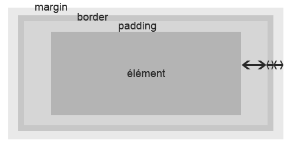
Mais comment prendre en compte les marges extérieures ? o_O
Pour cela, il faut passer la valeur true aux méthodes outerHeight() et outerWidth().
$('p').height(); // retourne la hauteur stricte du paragraphe
$('p').innerWidth(); // retourne la largeur (avec marges intérieures) du paragraphe
$('p').outerWidth(); // retourne la largeur (avec marges intérieures + bordures) du paragraphe
$('p').outerHeight(true); // retourne la hauteur (avec marges intérieures + bordures + marges extérieures) du paragraphe
Le style CSS d'une page web est facilement modifiable, et il est possible de réaliser d'excellentes choses si on couple ce système avec les évènements. Si vous n'avez pas tout à fait compris le chapitre, nous vous invitons à le relire, car c'est une part importante de jQuery.
Le prochain chapitre sera sous forme de TP : vous allez enfin pouvoir mettre en pratique vos nouvelles connaissances ! :)
Cela va être l'occasion pour vous de mettre en pratique tout ce que vous venez d'apprendre à travers les chapitres de cette partie sur les bases de jQuery. Préparez-vous bien, et n'hésitez pas à relire les chapitres que vous n'avez pas compris. Vous allez vous charger de créer un formulaire interactif !
Le but de ce travail pratique est de réaliser un formulaire interactif, que l'on animera grâce à jQuery. Ce sera un formulaire très basique, avec quatre ou cinq champs au maximum, qui verront leur style CSS changer suivant l'action de l'utilisateur. Le but est en fait de vérifier les informations entrées : nombre de caractères, vérifier que la confirmation du mot de passe est identique à celui-ci, vérifier si tous les champs sont remplis, etc.
Objectif concret
Ce formulaire devra contenir quatre champs :
un champ text pour le pseudonyme ;
un champ password pour le mot de passe ;
un deuxième champ password pour la confirmation du mot de passe ;
et un dernier champ text pour ce que vous voulez, comme l'adresse e-mail par exemple.
De même, deux boutons devront permettre respectivement d'envoyer les données, et de vider les champs. Pas de langage serveur pour ce TP : tout devra se dérouler dans le côté client. Évidemment, vous devrez vous assurer par la suite, lorsque vous coderez pour des projets destinés au grand public, que les données sont bonnes du côté serveur, c'est très important car le JavaScript peut être contourné !
Pour le moment, le but est juste de vous faire pratiquer. Vous devrez vous assurer que l'utilisateur rentre les bonnes infos, de la bonne manière :
tous les champs devront contenir au moins 5 caractères ;
le mot de passe et la confirmation devront être bien sûr identiques ;
si les champs sont vides lors de l'envoi, on affiche un message d'erreur.
Pour indiquer l'erreur au visiteur, il vous suffira d'utiliser CSS : une bordure de champ de couleur rouge ferait par exemple l'affaire. De la même manière, si le champ est bon, vous pourriez changer la couleur du champ adéquat en vert.
Méthodes requises
Pour pouvoir réaliser cela, vous allez devoir user des évènements, vous ne pourrez rien faire sans. De même, la manipulation du CSS doit être maîtrisée afin de pouvoir animer les champs. N'oubliez pas que vous devez traiter tous les cas, car il ne faut jamais faire confiance à l'utilisateur.
Pour récupérer le contenu d'un champ, vous devrez utiliser une méthode que nous n'avons pas encore traitée : val(). La propriété length vous permettra, elle, de récupérer la longueur d'une chaîne de caractère.
Nous vous donnons la structure HTML que nous utilisons, mais absolument rien ne vous empêche de créer la votre ! :)
Nous vous proposons une correction. Si vous n'avez pas réussi à obtenir quelque chose de correct, nous vous conseillons vivement d'être attentif à la correction, vous comprendrez ainsi vos erreurs, et ne les referez plus (n'est-ce pas ? :-° ).
La structure HTML que nous avons utilisé est la suivante, pour rappel :
Formulaire basique, contenant quatre champs et deux boutons, précédé d'un bloc invisible contenant un message d'erreur. La suite était plutôt simple : il ne fallait surtout pas oublier d'inclure le fichier du framework, sinon vous ne pouviez pas utiliser jQuery :
<div id="erreur">
<p>Vous n'avez pas rempli correctement les champs du formulaire !</p>
</div>
<form>
<label for="pseudo">Pseudonyme</label> <input type="text" id="pseudo" class="champ" />
<label for="mdp">Mot de passe</label> <input type="password" id="mdp" class="champ" />
<label for="confirmation">Confirmation</label> <input type="password" id="confirmation" class="champ" />
<label for="mail">E-mail</label> <input type="text" id="mail" class="champ" />
<input type="submit" id="envoi" value="Envoyer" /> <input type="reset" id="rafraichir" value="Rafraîchir" />
</form>
<!-- on inclut la bibliothèque depuis les serveurs de Google -->
<script src="https://ajax.googleapis.com/ajax/libs/jquery/1.7.2/jquery.min.js"></script>
Le reste, c'était à faire au niveau du jQuery ! :)
Explications du code jQuery
La première des choses à laquelle penser était de s'assurer que le document était chargé. Pour cela, vous deviez utiliser l'évènement ready(), comme appris au début de cette partie.
Une des bonnes pratiques à adopter est de mettre vos objets jQuery dans des variables. Cela n'est pas obligatoire, mais ça permet un gain d'optimisation conséquent, ainsi qu'une plus grande lisibilité dans le code. En suivant cela, il fallait déterminer quels éléments sélectionner :
le champ du pseudonyme ;
les champs du mot de passe et de la confirmation ;
le champ de l'e-mail ;
le bouton d'envoi ;
le bouton de rafraîchissement du formulaire ;
le message d'erreur ;
et enfin tous les champs en général (ceux ayant la classe .champ).
Le plus facile étant fait, je vous propose ensuite de déterminer quel évènement vous deviez utiliser. La bonne façon de faire était d'écouter le clavier de l'utilisateur, grâce à l'évènement keyup(), et ce sur chaque champ du formulaire. Il suffisait ensuite de vérifier avec une condition que la longueur de la chaîne de caractère était supérieure à 5, grâce à la méthode val() et à la propriété length que nous vous avions donnés :
// le code précédent se trouve ici
$champ.keyup(function(){
if($(this).val().length < 5){ // si la chaîne de caractères est inférieure à 5
$(this).css({ // on rend le champ rouge
borderColor : 'red',
color : 'red'
});
}
else{
$(this).css({ // si tout est bon, on le rend vert
borderColor : 'green',
color : 'green'
});
}
});
Le principe était similaire pour vérifier que la confirmation et le mot de passe était identique :
$confirmation.keyup(function(){
if($(this).val() != $mdp.val()){ // si la confirmation est différente du mot de passe
$(this).css({ // on rend le champ rouge
borderColor : 'red',
color : 'red'
});
}
else{
$(this).css({ // si tout est bon, on le rend vert
borderColor : 'green',
color : 'green'
});
}
});
Nous devons maintenant nous occuper des boutons d'envoi et de rafraîchissement. Dans le premier cas, il faut vérifier chaque champ un à un, pour voir si l'un d'entre eux est vide. Si c'est effectivement le cas, il faudra l'indiquer à l'utilisateur en affichant le message d'erreur, et également en rendant rouge le champ vide. Il y a plusieurs façons d'y parvenir, et celle que nous utiliserons ici n'est pas la meilleure. Il existe une méthode spécialement adaptée pour traiter chaque élément trouvé un à un, mais nous ne vous avons pas encore appris comment l'utiliser. A la place, vous pouviez créer une fonction qui se chargeait de vérifier que le champ donné n'était pas vide :
function verifier(champ){
if(champ.val() == ""){ // si le champ est vide
$erreur.css('display', 'block'); // on affiche le message d'erreur
champ.css({ // on rend le champ rouge
borderColor : 'red',
color : 'red'
});
}
}
En écoutant le clic sur le bouton d'envoi, on pouvait ensuite lancer la fonction de vérification sur chaque champ :
$envoi.click(function(e){
e.preventDefault(); // on annule la fonction par défaut du bouton d'envoi
// puis on lance la fonction de vérification sur tous les champs :
verifier($pseudo);
verifier($mdp);
verifier($confirmation);
verifier($mail);
});
Le reste était simplissime. Il fallait écouter le clic sur le bouton de rafraîchissement, et annuler tous les styles CSS sur le formulaire :
$reset.click(function(){
$champ.css({ // on remet le style des champs comme on l'avait défini dans le style CSS
borderColor : '#ccc',
color : '#555'
});
$erreur.css('display', 'none'); // on prend soin de cacher le message d'erreur
});
Et voilà, nous avons désormais terminé ! Avouez que ce n'était tout de même pas sorcier. :D
$(document).ready(function(){
var $pseudo = $('#pseudo'),
$mdp = $('#mdp'),
$confirmation = $('#confirmation'),
$mail = $('#mail'),
$envoi = $('#envoi'),
$reset = $('#rafraichir'),
$erreur = $('#erreur'),
$champ = $('.champ');
$champ.keyup(function(){
if($(this).val().length < 5){ // si la chaîne de caractères est inférieure à 5
$(this).css({ // on rend le champ rouge
borderColor : 'red',
color : 'red'
});
}
else{
$(this).css({ // si tout est bon, on le rend vert
borderColor : 'green',
color : 'green'
});
}
});
$confirmation.keyup(function(){
if($(this).val() != $mdp.val()){ // si la confirmation est différente du mot de passe
$(this).css({ // on rend le champ rouge
borderColor : 'red',
color : 'red'
});
}
else{
$(this).css({ // si tout est bon, on le rend vert
borderColor : 'green',
color : 'green'
});
}
});
$envoi.click(function(e){
e.preventDefault(); // on annule la fonction par défaut du bouton d'envoi
// puis on lance la fonction de vérification sur tous les champs :
verifier($pseudo);
verifier($mdp);
verifier($confirmation);
verifier($mail);
});
$reset.click(function(){
$champ.css({ // on remet le style des champs comme on l'avait défini dans le style CSS
borderColor : '#ccc',
color : '#555'
});
$erreur.css('display', 'none'); // on prend soin de cacher le message d'erreur
});
function verifier(champ){
if(champ.val() == ""){ // si le champ est vide
$erreur.css('display', 'block'); // on affiche le message d'erreur
champ.css({ // on rend le champ rouge
borderColor : 'red',
color : 'red'
});
}
}
});
Le code entier faisant moins de 100 lignes, autant vous dire que si vous n'aviez utilisé que du JavaScript pur, vous en auriez eu au moins le double ! C'est à ce moment là qu'on se rend compte de l'efficacité de jQuery. Nous espérons que ce TP vous aura permis de progresser, car la pratique est le meilleur moyen pour obtenir un certain niveau.
Ce formulaire peut encore être amélioré, dans le sens où vous pourriez restreindre encore plus les possibilités de l'utilisateur, en interdisant de dépasser un certain nombre de caractères dans le pseudo, par exemple. De même, le style est pour l'instant ultra basique, rien ne vous empêche de le sophistiquer, pour que l'expérience utilisateur soit poussée à son maximum.
Quelques améliorations au niveau de la sécurité pourraient être apportées :
vous pourriez vérifier le format de l'adresse e-mail, grâce à une expression régulière, faite avec l'objet Regex de JavaScript ;
vous auriez pu également vérifier que le mot de passe était sûr, en faisant par exemple un mini-indicateur de sûreté qui se baserait sur le nombre de caractères, leur diversité, ...
il est possible d'afficher un message d'aide pour chaque champ, lorsque l'utilisateur tape du texte dans ceux-ci ;
...
Le formulaire étant très basique, des champs auraient eu leur place, comme le sexe, l'âge, la localisation ou même le prénom. Essayez de faire cela vous-même, cela ne sera que bénéfique et positif pour votre apprentissage, croyez-nous ! :)
Ce TP ne vous a-t-il pas trop fatigué ? Non ? Tant mieux, car la suite va être encore pire ! :diable:
La prochaine partie sera consacrée à la manipulation du code HTML à la volée, directement dans la page, grâce aux fonctions de parcours, aux attributs et à la manipulation du DOM. Vous verrez également comment maîtriser l'animation de vos éléments avec jQuery, ce qui est une très bonne chose quand on sait que c'est l'un des plus gros points forts du framework ! Trêve de bavardage, nous vous invitons à passer à la suite, pour que vous puissiez subir un nouveau TP le plus vite possible. :D
Nous allons passer à la vitesse supérieure, car vous avez les bases en jQuery. Dans cette partie, nous verrons comment parcourir le DOM, modifier le code HTML à la volée, et comment animer concrètement votre site web. Cette dernière chose sera étudiée dans ce chapitre, avec ce qu'on appelle les effets.
Une des plus puissantes fonctionnalités de jQuery est sans doute l'animation. En effet, le framework vous permet de lancer des effets sur absolument tout et n'importe quoi. Mais concrètement, comment cela se passe-t-il ? Le mécanisme est en fait très simple si on l'aborde de manière théorique : c'est simplement une propriété CSS qui se déroulera pendant un interval de temps, donné en millisecondes.
Une méthode native de jQuery permet de gérer l'animation des éléments : il s'agit de animate().
Des animations personnalisées
La méthode animate() est très puissante dans le sens où elle peut recevoir une foule d'arguments différents. Le principe d'utilisation le plus fréquent que vous aurez à appliquer est de passer un objet à la méthode, contenant les propriétés CSS à animer. Oui, vous l'aurez de suite compris : c'est la même chose que pour la méthode css() !
La différence avec cette dernière méthode, c'est que animate() peut définir en plus :
duration : le temps de déroulement de l'animation, toujours en millisecondes ;
easing : la façon d'accélerer de l'animation, c'est-à-dire comment va-t-elle évoluer au cours du temps ;
complete : et enfin une fonction de callback, qui est l'action appelée lorsque l'animation est terminée.
Ces arguments sont facultatifs ; par défaut, ils sont réglés respectivement à normal, swing et null. Nous verrons plus tard ce que ces valeurs signifient, et comment les modifier.
$('p').animate({
width : '150px',
fontSize : '35px', // ne pas oublier la syntaxe de l'identifiant !
marginTop : '50px'
});
Lors du lancement de cette animation, mon paragraphe s'élargira, se déplacera par rapport à la hauteur du document, et verra sa taille de police se fixer à 35px.
duration : le temps de déroulement
Le temps de déroulement d'une animation est un facteur important : en effet, si votre animation est trop rapide, l'utilisateur risque de ne pas la voir. D'un autre côté, si elle est trop lente, il s'ennuiera et trouvera votre site web lourd et sans intérêt. Il va donc vous falloir trouver la bonne durée pour lancer votre animation. Cela dépendra notamment de son ampleur sur le visiteur : par exemple, si vous faites disparaître un sous-menu, cela sera plus rapide que si vous agrandissez un paragraphe de façon gigantesque. Il faut vous adapter.
L'argument peut prendre deux types de valeur : une chaîne de caractère (string) ou un nombre entier (int), qui représentera le temps en millisecondes (nous insistons là-dessus, beaucoup de débutants font l'erreur). La chaîne de caractère ne peut être qu'un de ces trois mots :
slow, qui équivaut à une durée de 600 millisecondes ;
normal, la valeur par défaut, qui est égale à 400 millisecondes ;
et fast, qui représente une durée de 200 millisecondes seulement.
$('p').animate({
width : '150px'
}, 'fast'); // premier exemple avec la valeur fast (200ms)
$('p').animate({
width : '150px'
}, 1000); // second exemple avec 1000ms (= 1s)
easing : l'évolution de l'animation
L'évolution de l'animation est la façon dont va se dérouler celle-ci : est-ce qu'elle va aller de plus en plus vite au cours du temps ? Va-t-elle rester constante ? Actuellement, jQuery ne propose malheureusement que deux façons de dérouler l'animation :
swing, qui est la valeur par défaut, fait aller l'animation de plus en plus vite au cours du temps, et ralentit à la fin ;
linear, qui force l'animation à se dérouler à la même vitesse durant toute l'opération.
Pour user de plus de fonctions, il faudra passer par un plugin externe tel que jQuery UI. Nous apprendrons plus tard comment les mettre en place. :)
$('p').animate({
width : '150px'
}, 'linear'); // l'animation se déroulera de façon linéaire
complete : la fonction de retour
La fonction de retour, plus communément appelée callback, est une action qui se lancera une fois l'animation terminée. Il suffit de donner une fonction anonyme en guise d'argument :
Ces deux arguments, step et queue, ne peuvent être modifiés qu'avec une certaine manière de régler les arguments de la méthode animate(). Ils ne sont pas directement accessibles : il vous faudra passer par un objet comme second argument.
Passer par un objet
Vous savez que le premier argument de la méthode est un objet, contenant chaque propriété à animer. Ce qui est intéressant, c'est que les autres arguments peuvent se trouver sous forme d'objet eux aussi. Ainsi, ces deux animations feront exactement la même chose :
Ainsi, vous pourrez aussi agir sur les deux arguments step et queue :
step lancera une fonction à chaque étape de l'animation, c'est-à-dire à chaque propriété CSS traitée ;
queue déterminera si une animation doit se terminer avant d'en lancer une seconde, et prendra un booléen en tant que valeur.
Le second argument est utile si vous avez un chaînage d'animation ou plusieurs animations à la suite ; si vous voulez les lancer toutes en même temps, vous devrez mettre la valeur false : ainsi, les méthodes n'attendront pas la fin de la précédente avant de se lancer. Dans le cas contraire, queue devra être défini à true.
$('p')
.animate({
width : '150px'
}, {
duration : 1000,
queue : false
})
.animate({
fontSize : '35px'
}, 1000);
// les deux animations se lanceront en même temps
Définition directe d'attributs
Il est possible que vous vouliez attribuer une accélération différente à chaque propriété CSS animée. C'est tout à fait possible de faire cela depuis la version 1.4 du framework ! :) On utilisera en général la première façon de faire, mais sachez qu'il en existe deux : on peut passer par un tableau (array) ou une propriété dans le second argument (object).
Pour la première méthode, vous devrez donner la nouvelle valeur de la propriété CSS dans un tableau, suivie du type d'accélération (swing ou linear pour le moment).
$('p').animate({
fontSize : ['50px', 'linear'], // cette propriété s'animera de façon linéaire
width : '200px' // les autres s'animeront de la façon définie ensuite : swing
}, 'swing');
La seconde méthode est un peu plus compliquée à mettre en place, dans le sens où vous devrez donner un objet à un identifiant d'un objet (qui, rappelons-le, est lui-même un argument de la méthode d'animation). La propriété à définir se nomme specialEasing :
$('p').animate({
fontSize : '50px',
width : '200px'
},
{
easing : 'swing'
specialEasing : { // on définit la propriété
fontSize : 'linear' // puis on liste toutes les propriétés CSS dans un objet en donnant leur évolution
}
});
Astuces et cas spéciaux
Il nous reste encore quelques petites choses à mettre au point avant de passer à la suite. En effet, nous n'avons pas encore parlé de certaines pratiques, qui méritent pourtant une place dans ce tutoriel. :D
Animer les couleurs
Vous l'aurez peut-être remarqué si vous avez testé quelques codes de votre côté, jQuery ne permet pas encore de traiter les animations sur les couleurs. C'est bien dommage, car elles sont un élément important du style d'une page web. Pas de panique, car un développeur jQuery a créé un petit plugin open-source (sources libres) permettant de faire cela.
Nous vous invitons à le télécharger à cette adresse (fichier jquery.color.js à inclure dans votre page). Une fois inclus, vous pourrez animer toutes les couleurs de n'importe quelle propriété :
$('p').animate({
color : 'red',
backgroundColor : 'green'
});
Ajout de valeurs
Une astuce très pratique en jQuery, c'est qu'il est possible d'ajouter une valeur à une propriété CSS. Le principe est similaire à l'ajout de valeur en JavaScript : vous devez passer par les préfixes += ou -=.
$('p').animate({
width : '+=50px', // ajoute 50px à la largeur
height : '-=20px' // enlève 20px à la hauteur
});
Animer les barres de défilement
En CSS, il est impossible d'agir sur les barres de défilement. C'est différent en JavaScript, et surtout en jQuery, qui met un point d'honneur à pouvoir les animer ! Les deux propriétés à influencer sont donc les suivantes :
scrollTop, qui agit sur la barre de défilement verticale ;
scrollLeft, qui agit sur la barre horizontale (si elle existe).
Elles s'animent exactement de la même façon que les autres propriétés.
Les trois états additionnels
Pas vraiment utilisés ni très connus, ces trois états ne sont autres que show, hide et toggle. Pourquoi disons-nous qu'ils ne sont pas très utilisés ? Parce que des méthodes spéciales existent, et sont bien plus rapides à mettre en place pour avoir le même résultat.
Néanmoins, nous pensons que vous pouvez en avoir parfois l'utilité. Et si ce n'est pas le cas, un peu de culture ne vous fera pas de mal, n'est-ce pas ? :p
Ces états permettent d'agir seulement sur la propriété qui les utilise. Concrètement, ils réalisent ces actions :
show affiche la propriété ;
hide se charge de la cacher ;
toggle, lui, va faire la navette entre les deux : si la propriété est cachée, il l'affiche, et vice versa.
Ils s'utilisent donc de cette façon :
$('p').animate({
width : 'show' // anime la largeur pour afficher le paragraphe
});
$('p').animate({
width : 'hide' // anime la largeur pour cacher le paragraphe
});
$('p').animate({
width : 'toggle' // anime la largeur pour cacher ou afficher le paragraphe
});
Certains puristes nous diront qu'on ne peut pas parler de nativité avec un framework, car ce n'est pas un langage à proprement parlé. Néanmoins, jQuery est tellement à part et redéfinit tellement de notions que nous pensons pouvoir nous permettre de faire ce petit abus de langage. :)
Maintenant que c'est clair, vous vous posez surement une question : que sont les effets natifs de jQuery ?
Le retour des trois états
Nous avions parlé brièvement des trois états show, hide et toggle, qui pouvaient être utilisés avec les propriétés CSS directement dans la méthode animate(). C'était bien jusqu'à maintenant, mais sachez que des méthodes spéciales existent justement pour faire cela !
Comme vous l'aurez surement deviné, il s'agit des fonctions :
show() ;
hide() ;
et toggle().
Ces méthodes fonctionnent toutes de la même façon, et prennent le même type d'arguments : duration, qui est, pour rappel, la durée de déroulement en millisecondes, et complete, l'éternelle fonction de retour. Ils sont facultatifs.
$('p').hide('slow'); // cache le paragraphe en 600ms
$('p').show('fast', function(){
alert('Paragraphe affiché !');
}); // affiche le paragraphe en 200ms, et lance une alerte à la fin de l'animation
Le cas de toggle()
La méthode toggle() est un peu particulière, étant donné qu'elle agit sur l'objet jQuery en fonction de son état courant : s'il est caché, elle l'affiche, s'il est affiché, elle le cache. Là où vous devez vous rendre compte de son utilité, c'est qu'elle accepte un argument de condition. Vous pouvez agir dessus grâce à un booléen, par exemple. Si on lui indique true, elle affichera l'élément, si on lui indique false, elle fera l'inverse.
$('p').toggle(true); // aura le même rôle que show()
$('p').toggle(false); // aura le même rôle que hide()
Des méthodes plus esthétiques
Afficher et cacher des éléments, c'est bien, le faire esthétiquement, c'est mieux ! Ainsi, jQuery propose six méthodes permettant de faire exactement la même chose que les fonctions vues précédemment, mais de façon plus travaillée. Comprenons-nous bien : la finalité est exactement la même.
Dérouler et enrouler
Vous avez sans doute déjà vu des sites web utilisant ce genre de chose, pour un système de « dérouler / enrouler » notamment. Pour réaliser cela, rien de plus simple :
slideDown() déroule l'élément pour l'afficher ;
slideUp() enroule l'élément pour le cacher ;
slideToggle() enroule ou déroule selon l'état courant de l'élément.
Les arguments ne changent pas, ils sont les mêmes que pour show(), hide() et toggle().
Apparition et disparition
On va jouer ici sur l'opacité de l'élément influencé.
fadeIn() affiche l'élément progressivement ;
fadeOut() cache l'élément, en ajustant l'opacité également.
fadeToggle() affiche ou cache l'élément, grâce à l'opacité.
Le framework met également à disposition une fonction permettant de contrôler l'opacité finale de l'élément animé. Il s'agit de fadeTo(), qui prend en argument obligatoire un nombre décimal (float) entre 0 et 1 indiquant l'opacité.
$('p').fadeTo('normal', 0.5); // ajuste l'opacité et la fixe à 0.5
Faire des effets avec jQuery, c'est bien, mais avoir un total contrôle sur eux, c'est encore mieux ! Rappelez-vous toujours que la politique du framework est de vous offrir un maximum de souplesse et de possibilités dans votre code. Ainsi, il existe des méthodes qui ont pour rôle de vous aider à maîtriser vos effets : quand les déclencher, les arrêter, les ordonner, et même les influencer !
Vous allez voir dans cette partie tout ce qui traite la manipulation des animations.
Le concept de file d'attente
Vous ne le savez peut-être pas, mais ce système, vous l'utilisez à chaque fois que vous animez un élément d'une page web. Les méthodes permettant d'animer sont toutes basées dessus : ainsi, si vous avez quatre animations différentes, elles se dérouleront dans l'ordre chronologique, en attendant que la précédente se termine avant de se lancer. C'est ce qu'on appelle les files d'attente en jQuery. Plus concrètement, en employant le jargon technique, c'est simplement un tableau qui va lister les fonctions et les exécuter une à une jusqu'à arriver au terme. En anglais, on l'appelera queue.
Manipuler le tableau de fonctions
Il est possible de manipuler le tableau de fonctions, la queue, grâce à une méthode au nom éloquent : queue(). Cette fonction est à utiliser sur un élément qui subit une ou plusieurs animations. En modifiant certains arguments, vous serez ainsi capable de modifier directement l'array !
$('p').fadeOut();
$('p').fadeIn();
$('p').slideUp();
$('p').slideDown();
var fileAttente = $('p').queue('fx'); // je stocke la file d'attente, le tableau, dans une variable
alert(fileAttente.length); // renvoie 4
Pour rajouter une fonction dans la file d'attente, il suffit de passer ladite fonction en tant qu'argument.
$('p').fadeOut();
$('p').fadeIn();
$('p').slideUp();
$('p').slideDown();
$('p').queue(function(){
alert('Nouvelle fonction dans la file !'); // alerte s'affichant à la fin de la file
});
Enfin, la dernière chose possible à faire est de carrément remplacer le tableau par un nouveau, que vous aurez créé directement. Cela n'a pas énormément d'intérêt, mais c'est notamment utile dans le cas où vous voulez vider l'array, ce qui a pour effet d'annuler toute animation.
$('p').fadeOut();
$('p').fadeIn();
$('p').slideUp();
$('p').slideDown();
$('p').queue('fx', []); // fait disparaître le paragraphe, puis vide la file d'attente
Ordonner la file d'attente
Préparez votre cerveau à résoudre des casses-tête, parce que la méthode que nous allons voir est un peu difficile à utiliser. Il s'agit de dequeue(), une fonction qui permet de stopper l'animation en cours de la file d'attente, et de passer à la suivante. Prenons un petit exemple concret :
Si on analyse l'action de ce code, il se passe ceci :
la taille de la police augmente de 100 pixels,
une nouvelle fonction est ajoutée à la file,
une alerte affiche « Bonjour ! »,
la méthode dequeue() permet de lancer l'animation suivante ;
la taille de la police baisse de 50 pixels,
une nouvelle fonction est ajoutée à la file,
une alerte affiche « Au revoir ! »,
la méthode dequeue() permet de ne pas entraver les futures animations sur l'élément.
Suppression de fonctions non exécutées
Pour une raison x ou y, vous pouvez tout à fait stopper la file d'attente grâce à une méthode. Le rôle de clearQueue() est de supprimer toutes les fonctions de la file d'attente qui n'ont pas encore été exécutées. Une autre méthode nous permet de faire cela de façon un peu moins élaborée, que nous verrons ensuite.
$('p').animate({
fontSize : '100px'
})
.queue(function(){ // on ajoute une fonction à la file d'attente
alert('Bonjour !');
})
.clearQueue(); // empêche l'alerte de s'afficher
Arrêter les animations
Méthode très utilisée s'il en est, stop() a pour fonction première de... stopper une animation, c'est exactement ça. :p Elle peut prendre deux arguments au maximum, zéro au minimum. On l'utilisera le plus souvent pour éviter de lancer le même effet plusieurs fois de suite sans pouvoir l'arrêter : un code JavaScript, ça fait ce qu'on lui dit de faire sans se soucier d'autre chose. Par exemple, imaginez qu'un utilisateur, lorsqu'il clique sur un bouton, lancer une animation spécifique. S'il clique plusieurs fois de suite sans attendre la fin de l'animation, celle-ci va s'exécuter autant de fois qu'on le lui aura indiqué !
Arrêter une animation est donc une sécurité, l'assurance qu'elle ne se lancera pas des dizaines et des dizaines de fois sans pouvoir rien y faire. Les deux arguments possibles permettent :
de stopper une ou toutes les animations suivantes (booléen à indiquer) ;
de laisser l'animation courante se dérouler jusqu'à son terme (également un booléen).
Les cas que vous pourriez définir sont donc les suivants :
$('p:animated').stop(true); annule toutes les animations suivantes, dont l'animation courante ;
$('p:animated').stop(false, true); arrête l'animation courante, mais laisse l'élément aller à son état final ;
$('p:animated').stop(true, true); annule toutes les animations suivantes, mais laisse l'élément courant aller à son état final.
Désactivation
Enfin, pour terminer, sachez qu'une propriété permet de désactiver toutes les animations de la page. Il suffit de passer à true la propriété jQuery.fx.off.
Ouf ! C'était un chapitre assez conséquent, vous ne trouvez pas ?
Les chapitres suivants seront un peu moins difficiles à avaler, mais il faudra rester concentré, car nous abordons la manipulation du DOM.
Après un chapitre assez long, qui concernait les animations, nous vous proposons de voir ce que sont les attributs, et comment les influencer avec jQuery. C'est une part assez importante également, donc soyez attentif et n'hésitez pas à vous arrêter pour faire quelques essais.
Avant de se lancer dans une foule d'explications toutes plus passionnantes les unes que les autres, il faut déjà savoir ce que l'on va traiter. Dans notre cas, il s'agit des attributs.
Bref rappel sur les attributs
En HTML, les attributs sont contenus dans des balises. Ils définissent en quelque sorte comment le navigateur doit interpréter un élément d'une page web. Pour être bref et concis :
Citation : M@teo21
Les attributs sont un peu les options des balises. Ils viennent les compléter pour donner des informations supplémentaires.
Sachez qu'il est possible d'influencer ces attributs avec jQuery, et donc de réaliser une foule de choses rien qu'avec une seule méthode, au moins aussi utilisée que css() et animate() : attr() !
Récupérer des valeurs
La fonction première de attr() est de pouvoir récupérer la ou les valeur(s) d'un attribut d'une balise. Il suffit de passer le nom de l'attribut souhaité en tant qu'argument :
var cheminImage = $('img').attr('src'); // rentre le contenu de l'attribut src dans une variable
(Re)définir un attribut
La seconde utilisation possible de cette méthode est de définir, ou redéfinir un attribut en passant par un deuxième argument. Comprenez par là que même si l'attribut donné n'existe pas dans la balise, il sera créé automatiquement. De même, la nouvelle valeur donnée écrasera celle en place si elle est déjà définie.
$('img').attr('src', 'nouveauChemin/photo.png'); // change l'attribut src en écrasant l'ancienne valeur
$('img').attr('title', 'Nouvelle photo'); // créé l'attribut title dans l'élément s'il n'existe pas
Passer par un objet
Par souci de performance, on préféra passer par un objet si l'on a plusieurs attributs à influencer en même temps. Les multiples appels d'un même objet jQuery sont à éviter, car ils sont gourmands et vos visiteurs risquent de ne pas apprécier si l'attente se révèle trop longue. Il est alors possible de chaîner les méthodes pour ne pas récupérer plusieurs fois de suite le même objet jQuery, mais là encore, vous devrez taper plusieurs fois la même fonction, ce qui au final se révélera aussi lent.
Il existe alors une solution, qui est à utiliser si vous êtes dans ce cas-là. Il est possible de donner un objet en tant que paramètre à la méthode attr(), qui contiendra chaque attribut à modifier et leurs nouvelles valeurs respectives.
Une fonction anonyme peut être déclarée en tant que valeur de l'attribut, c'est-à-dire en second argument. L'utilité est assez contextuelle, mais sachez que cette méthode permet de récupérer deux données et d'en faire usage :
l'index de l'élément traité (commence par 0), représenté par un premier argument dans la fonction de retour ;
la valeur actuelle de l'attribut traité, représenté par un second argument.
Jusque là, il est possible d'écraser un attribut en lui affectant une valeur nulle. Ce n'est pas très propre, mais ça fonctionne. Pourtant, une méthode a été conçue spécialement pour réaliser cela : removeAttr(). Il suffit de lui passer le nom de l'attribut en argument, et elle se charge de le supprimer définitivement du DOM.
$('img').removeAttr('title'); // supprime l'attribut title des images
Il est bien évidemment possible de gérer les classes des éléments de votre page avec la méthode que l'on a vu précédemment. Seulement, un problème se pose : comment faire si l'on veut rajouter une classe sans supprimer celle actuellement en place ? Les développeurs de jQuery se sont penchés sur le sujet, et ont fini par créer des méthodes spécialement adaptées aux classes. On en dénombre quatre pour le moment, et nous allons les voir ensemble.
Ajouter une classe
La méthode addClass() permet d'ajouter une classe à l'élément spécifié. Veillez à bien faire la différence avec la sous-partie précédente : nous avions défini des attributs, mais pas ajouté. L'ajout de classe signifie que la fonction prend en compte la ou les classe(s) déjà en place. Ainsi, vous pouvez donner plusieurs classes dynamiquement à un élément, ce qui était impossible avec attr() ! :) De même, il est possible d'ajouter plusieurs classes en même temps en les séparant par des espaces.
$('.vert').attr('class', 'rouge'); // cet élément aura la classe .rouge
$('.vert').addClass('rouge'); // cet élément aura les classes .vert et .rouge
$('.vert').addClass('rouge bleu jaune'); // cet élément aura les classes .vert, .rouge, .bleu et .jaune
Supprimer une classe
La suppression de classe se fait également avec une méthode adaptée, qui ressemble fortement à celle permettant de supprimer un attribut. removeClass() prend le nom d'une ou de plusieurs classe(s) en paramètre, et les supprime de l'élément sans influencer les autres.
$('p').removeClass('vert'); // supprime la classe .vert de l'élément
$('p').removeClass('vert rouge bleu'); // supprimer les classes .vert, .rouge et .bleu
Présence d'une classe
Pour vérifier qu'un élément possède bien une classe, il existe la fonction hasClass(). ELle ne peut prendre qu'un seul argument, et malheureusement qu'une seule classe à la fois. Elle est beaucoup utilisée dans les conditions, car elle retourne un booléen (soit true, soit false).
if( $('p').hasClass('vert') ){ // si l'élément possède la classe .vert
alert('Ce paragraphe est vert !'); // on affiche une alerte
}
Switcher une classe
Vous connaissez déjà les méthodes telles que toggle(), qui permettent de basculer d'un état à l'autre. Lorsqu'on travaille avec les classes, il est parfois judicieux d'utiliser ce concept. Ainsi, la fonction toggleClass() permet d'ajouter ou de supprimer une classe donnée !
$('p').toggleClass('vert'); // ajoute la classe .vert si elle n'existe pas, sinon, la supprime
Vous pouvez contrôler l'action de cette méthode grâce à un second argument, sous la forme de booléen : true permettra d'ajouter la classe, alors que false la supprimera.
// ces deux codes sont équivalents :
$('p').addClass('vert');
$('p').toggleClass('vert', true);
// ces deux codes sont équivalents :
$('p').removeClass('vert');
$('p').toggleClass('vert', false);
Les attributs sont un passage obligatoire sur le chemin de la maîtrise du framework jQuery. Vous avez vu qu'ils sont extrêmement utiles, et croyez-nous : vous n'avez pas fini de les utiliser.
Dans le prochain chapitre, nous apprendrons à nous déplacer dans le DOM, pour exploiter chaque élément d'une page web dynamiquement !
Le parcours du DOM permet de se déplacer aisément sur la page, afin de récupérer certains éléments HTML. Un peu comme pour les sélecteurs, il faudra bien comprendre le principe de la descendance, car c'est un concept très puissant et très utilisé dans les langages orienté objet comme JavaScript, rappelez-vous-en !
Le Document Object Model, beaucoup plus couramment appelé DOM, permet littéralement de naviguer entre les éléments HTML. Nous rappelons qu'il s'agit d'une interface de programmation, utilisée exclusivement pour les documents XML et HTML, qui se base sur la structure. C'est grâce à ce concept qu'il est possible d'agir sur une page web avec JavaScript, et plus précisément ses fonctions ; sans cela, nous ne pourrions pas désigner les éléments !
Vous vous en doutez, nous faisons constamment appel au DOM, même si en jQuery, on s'en rend beaucoup moins compte. En effet, même si nous n'avons pas encore appris à utiliser les fonctions de parcours, sachez que la sélection d'éléments, par exemple, use de certaines fonctions JavaScript qui ont besoin du DOM (c.f. getElementById()).
Positionnement des éléments
La position des éléments dans la structure d'une page HTML est très importante. C'est pourquoi on vous répète souvent : ayez un code propre, une structure claire et bien rangée, et vous aurez beaucoup plus de facilité à manipuler vos éléments en JavaScript ! Une sémantique bien faite, c'est un gain de temps et d'énergie. Prenons pour exemple un code HTML très mauvais, que l'on peut malheureusement rencontrer sur le web :
Dans un cas comme celui-là, la sélection simple ne sera pas altérée ; en revanche, si vous devez parcourir le DOM pour ne pas devoir refaire une requête d'élément inutile, alors bonne chance ! :p Une bonne sémantique est primordiale, nous ne vous le répéterons jamais assez.
Si on vous rabâche depuis quelques temps que la descendance est un concept très utilisé en programmation orientée objet, ce n'est pas pour rien : souvent apparentée à l'héritage, cette technique se base sur le principe de parents et d'enfants. Dans un contexte comme le nôtre, cela peut paraître un peu tiré par les cheveux comme méthode de travail, et pourtant, sans cela, il serait beaucoup plus compliqué de réaliser de véritables applications en jQuery !
Quelques chapitres auparavant, nous avons abordé rapidement la chose avec les sélecteurs, et plus précisément ceux-ci :
$('.parent .enfant') ;
$('.parent > .enfant').
En effet, nous vous avions expliqué qu'une structure HTML permettait d'imbriquer des blocs les uns dans les autres : ceux étant à l'intérieur sont appelés enfants, ceux qui entourent un élément sont des parents. Le parcours du DOM va énormément se baser sur ce concept, à retenir et maîtriser absolument. Nous allons étudier quelques fonctions qui permettent d'accéder aux éléments, qu'ils soient parents, enfants, ou même frères ! :)
Parents, enfants et ancêtres
Commençons par une des fonctions de parcours les plus utilisées : parent(). Plus facile à retenir, tu meurs ! :p Comme vous vous en doutez, cette méthode va nous permettre d'accéder au bloc parent de l'élément actuellement ciblé. Lorsque nous agirons sur notre objet jQuery, ce ne sera donc plus ce dernier qui sera influencé, mais bien le bloc qui l'entoure.
$('a').css('color', 'blue'); // rend le lien ciblé seulement de couleur bleue
$('a').parent().css('color', 'blue');
// ici, c'est le parent de l'enfant (un paragraphe, si l'on respecte la sémantique) qui verra son texte devenir bleu
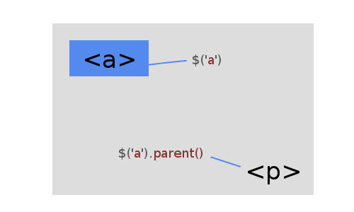
Il est possible de préciser la requête, en sélectionnant la classe, l'identifiant et le type de l'élément à récupérer en tant qu'argument :
$('a').parent('.texte'); // retourne seulement l'ensemble des blocs parents ayant la classe .texte
Inversement, la fonction children() permet de cibler l'élément enfant descendant directement de l'élément sélectionné. Cette méthode équivaut donc au sélecteur >, mais permet, comme la fonction parent(), de préciser la recherche avec un argument.
$('div').children(); // cible l'élément enfant direct du bloc div
$('div').children('p'); // cible seulement l'ensemble des paragraphes enfants du bloc div
Cette méthode est néanmoins quelque peu restrictive : elle ne va cibler que les enfants directs d'un élément. Que se passerait-il si l'on voulait récupérer tous les fils et petits-fils d'un bloc ? On ne pourrait tout simplement pas, ou tout du moins avec children(). Car oui, bien heureusement, jQuery possède la fonction find(), qui va se charger de trouver tous les enfants d'un élément, quelle que soit leur position par rapport à ce dernier ! Il suffit alors de donner le type d'élément à trouver, et find() se charge du reste :
$('body').find('p'); // cible l'ensemble des paragraphes contenus dans le corps du document, quelle que soit leur position !
La dernière méthode usant de ce principe de descendance est parents(). N'oubliez pas le "s", car elle est légèrement différente de la fonction parent(), et ne s'utilise pas tout à fait de la même façon ! Concrètement, cette dernière retournait seulement la première occurrence trouvée : dès qu'elle tombait sur un parent, elle s'arrêtait sans aller plus loin. Il se peut que vous vouliez agir sur tous les parents d'un élément en même temps. Par soucis de précision, on ne parlera ici plus de parents, mais d'ancêtres.
$('a').parents(); // cible tous les éléments ancêtres du lien : paragraphe, bloc(s), balise <body>...
La fraternité d'éléments
Après le père et le grand-père, nous demandons le frère ! :lol: Eh oui, comme pour les méthodes développées précédemment, nous sommes dans l'obligation d'étudier les fonctions ciblant les élément frères de la sélection. Le frère d'un élément, c'est tout simplement la balise présente directement à côté de celui-ci.
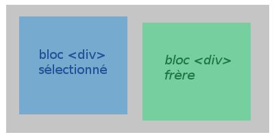
Il y a quatre façons de faire appel à ce concept :
prev(), qui sélectionne l'élément frère précédant directement l'objet ciblé ;
next(), qui sélectionne l'élément frère suivant directement l'objet ciblé ;
prevAll(), qui sélectionne tous les éléments frères précédant l'objet ciblé ;
nextAll(), qui sélectionne tous les éléments frères suivant l'objet ciblé.
Moins utilisés mais tout de même d'une praticité flagrante, les filtres et les conditions permettent de cibler des éléments de manière plus précise et concise que les méthodes apparentées à la descendance. En effet, jusqu'ici, vous ne savez que sélectionner les éléments enfants, parents, ancêtres ou frères d'un objet. En revanche, le ciblage par l'index, par exemple, vous est totalement inconnu. Afin de combler ces lacunes, nous vous invitons à lire la suite. :)
Filtrer les éléments
Filtre par sélecteur
La méthode principale permettant de filtrer des éléments se nomme filter(). Elle va permettre de supprimer tous les objets ne correspondant pas à la recherche de la sélection, ce qui est très pratique dans le cas où vous souhaitez ne récupérer que certains éléments et pas d'autres, dans une recherche plus globale. La requête est à spécifier en tant qu'argument, et peut être vraiment très précise dans le cas où il est possible de donner plusieurs sélecteurs d'un seul coup en les séparant de virgules !
$('p').filter('.texte'); // supprime de la sélection tous les paragraphes n'ayant pas la classe .texte
$('p').filter('.texte, #description');
// supprime de la sélection tous les paragraphes n'ayant pas la classe .texte ou l'identifiant #description
Filtre par index
Vous avez déjà rencontré le sélecteur :eq() plus tôt dans le cours. Il suffisait de l'utiliser avec un index pour sélectionner un élément grâce à celui-ci. Il existe également la méthode eq() qui elle s'exécute sur un objet. Elle va donc parcourir le tableau d'occurrences trouvées et sélectionner seulement celui qui possède l'index indiqué en argument.
$('p').eq(2); // cible le troisième paragraphe trouvé (l'index commence à 0)
Petite astuce, vous pouvez spécifier un nombre négatif : jQuery commencera alors à compter à partir du dernier index. Si vous possédez quatre paragraphes et que vous donnez la valeur -1 à la méthode, alors votre objet sera le quatrième paragraphe.
Moins utilisée, la méthode slice() permet de prendre une portion d'un tableau d'objets, grâce à leur index. Elle prend un argument obligatoire, et un second facultatif :
start, qui est la position (ou l'index) du premier élément à filtrer ;
end, qui est la position (ou l'index) du dernier élément à filtrer, non pris en compte par la sélection.
Il s'agit donc littéralement de couper un tableau contenant l'ensemble de nos éléments ciblés. Seuls ceux étant compris entre les index spécifiés seront gardés, les autres étant alors supprimés de la sélection :
$('div').slice(1, 3); // garde seulement les blocs div ayant l'index 1 ou 2
Vérifier le type d'un élément
La fonction is() est peu utilisée, mais il est bon de la connaître dans le cas où vous rencontrez un code qui la contient pour une quelconque raison. Elle renvoie simplement un booléen, true si elle déduit que l'argument donné correspond au type de l'élément analysé, false si ce n'est pas le cas :
var vrai = $('div').is('div');
var faux = $('div').is('p');
console.log(vrai); // affiche true
console.log(faux); // affiche false
Boucler les éléments
Non content de sa puissance, jQuery révolutionne le concept des boucles en permettant une nouvelle forme : le bouclage d'éléments. Assez particulier, ce système est toutefois bien utile : il va traiter chaque occurrence trouvée et exécuter une fonction définie dessus. Il s'agit de la méthode each(). Elle va agir sur chaque objet trouvé, en effectuant littéralement une boucle. Cela va vous permettre par exemple d'exécuter des fonctions qui, normalement, s'arrête au premier élément rencontré, les autres étant laissé à l'abandon.
Si la fonction retourne false, alors la boucle s'arrête brutalement. Si au contraire elle retourne true, alors la boucle passe directement à l'élément suivant. Il existe d'autres utilisations de cette méthodes, notamment avec sa sœur $.each(), mais nous ne les aborderons pas ici car elles ne sont pas vraiment courantes et utilisées.
Maintenant que vous savez parcourir le DOM, que vous maîtrisez les notions de descendance, de fraternité et de filtrage d'éléments, vous pouvez enfin passer à la manipulation du code HTML lui-même. Le prochain chapitre regroupe beaucoup de fonctions à connaître et à savoir utiliser. C'est aussi le dernier chapitre avant le prochain TP, donc préparez vous à bien l'assimiler !
Nous arrivons enfin au dernier chapitre d'apprentissage dans cette troisième partie consacrée au DOM ! C'en est d'ailleurs le cours le plus intéressant, mais aussi le plus long dans la mesure où il y a beaucoup de fonctions à retenir ; pas d'inquiétude à avoir cependant, car nous allons voir pas à pas comment manipuler le contenu, mais aussi la structure d'une page HTML !
Enfin, nous y voilà ! Vous allez apprendre à insérer du contenu directement dans votre page web, grâce à jQuery. Petite note de vocabulaire, le faire d'insérer quoi que ce soit dans un document HTML se dit couramment "créer du contenu à la volée". Ne soyez donc pas étonné de voir cette expression lorsque l'on vous parle de jQuery ! :)
Nous allons voir comment insérer du contenu, ce qui est la base de la manipulation du code HTML. Sachez tout d'abord qu'il existe trois sortes de contenu :
le contenu textuel, ce qui correspond à du texte, tout simplement, sans fioritures telles que des balises ;
le contenu HTML, qui représente le contenu textuel avec les balises structurelles en plus ;
et le contenu des éléments de formulaire, qui est la valeur des différents champs de texte, de mot de passe, de textarea...
Ces différentes sortes de contenu ne se manipule pas tout à fait de la même manière, nous allons donc apprendre à utiliser les trois méthodes correspondantes, ainsi que quelques autres fonctions bien utiles, pour par exemple ajouter des éléments à une place bien précise.
Le contenu textuel
Commençons par le plus simple : le contenu textuel. Il n'est vraiment pas difficile de le manipuler, dans la mesure où il n'existe qu'une seule fonction pour le faire : text(). Cette méthode permet soit de récupérer le contenu textuel d'un élément s'il existe, soit de le modifier en donnant la nouvelle version en argument. Petite note à retenir, les balises données ne fonctionneront pas, car les chevrons (< et >) seront convertis automatiquement en entités HTML (respectivement < et >).
Récupération du contenu
Pour récupérer le contenu d'un élément, il suffit d'utiliser la méthode text() tout simplement, ni plus ni moins. Elle ne retournera qu'une chaîne de caractère (string), qui contiendra le contenu textuel seulement : pas de balises ouvrantes ni fermantes, pas de chevrons HTML, juste du texte.
$('p').text(); // renvoie le texte contenu à l'intérieur du paragraphe
Chose importante à retenir, la fonction s'arrête à la première occurrence trouvée : si vous avez plusieurs paragraphes et que vous lancez le code ci-dessus, vous n'obtiendrez que le contenu du premier paragraphe du document, ayant l'index 0. De même, elle prend parfaitement bien en compte les espaces divers et les retours à la ligne.
Définition de contenu
Comme dit précédemment, la définition de contenu avec text() se fait par argument. Faites bien attention à l'utiliser correctement : cette méthode écrase le contenu actuel pour le remplacer par le nouveau ! Nous verrons comment ajouter, au lieu d'écraser, du contenu un peu plus tard dans ce chapitre.
$('p').text('Nouveau contenu !'); // remplace le contenu actuel du paragraphe par "Nouveau contenu !"
Le contenu HTML
Passons dès à présent au plus intéressant : le contenu HTML. Nous vous rappelons qu'il s'agit juste du contenu textuel, avec les balises structurelles en plus. Vous allez donc voir une fonction text() un peu améliorée, html(). Elle fonctionne tout simplement comme la propriété innerHTML que vous utilisez en JavaScript simple, pour la simple et très bonne raison qu'elle est basée dessus (cette fonction ne marchera donc pas sur des documents XML). En bref, rien de très compliqué, si vous avez des balises à l'intérieur de votre élément, elles seront bien comprises dans le retour :
$('div').html(); // renvoie le code HTML contenu dans ce bloc div
$('div').html('<p>Nouveau <strong>code</strong> !</p>'); // remplace le code HTML actuel par celui-ci
Seulement, cette fonction ne présente pas un très grand intérêt si l'on veut ajouter du contenu au lieu de simplement remplacer. Écraser les données actuelles peut parfois être embêtant, c'est pourquoi il existe heureusement d'autres méthodes permettant d'insérer du code HTML avant ou après le contenu déjà présent.
Ajouter du contenu HTML avant le contenu actuel
La méthode prepend() ajoute le contenu HTML passé en argument avant le contenu HTML actuellement en place, tout en restant dans la limite des balises (pour vous en rappeler : pre comme previous, précédent en français). On a donc une insertion à l'intérieur et au début de l'élément.
$('p').prepend('<strong>Texte inséré avant le contenu actuel.</strong> ');
Résultat :
<p>
<strong>Texte inséré avant le contenu actuel.</strong> Contenu actuel.
</p>
Au lieu d'une chaîne de caractère, vous pouvez également passer en argument un objet jQuery ; cela aura pour effet d'aller récupérer l'élément indiqué, et de l'insérer directement à l'intérieur :
$('p').prepend( $('h1') );
Résultat :
<p>
<h1>Un titre H1</h1>
Contenu actuel.
</p>
Ajouter du contenu HTML après le contenu actuel
Parallèlement à la méthode prepend(), append() ajoute le contenu HTML passé en argument après le contenu HTML actuellement en place. Évidemment, l'insertion s'effectue toujours à l'intérieur des balises de l'élément. Cette fonction marche exactement de la même manière que sa cousine :
$('p').append(' <strong>Texte inséré après le contenu actuel.</strong>');
$('p').append( $('h1') );
Deux cas spéciaux : prependTo() et appendTo()
Pour ceux qui aiment commencer leur repas par le dessert, il existe deux méthodes qui permettent de faire exactement la même chose que celles que l'on vient de voir, mais de façon inverse. Il s'agit de prependTo() et appendTo(), qui fonctionnent à l'envers : on va tout d'abord sélectionner l'objet à déplacer, puis l'objet receveur, celui qui va accueillir le contenu souhaité. Pour mieux comprendre, nous vous invitons à regarder ce schéma d'un peu plus près :
append() :
objet.append(contenu)
appendTo() :
contenu.appendTo(objet)
$('p').append( $('h1') );
// ici, on ajoute le contenu du titre après avoir sélectionné notre élément
$('h1').appendTo( $('p') );
/* alors qu'ici, on sélectionne d'abord le contenu du titre,
et on le déplace après le contenu actuel de notre élément receveur */
$('p').prepend( $('.description') );
// on ajoute le contenu de .description avant le contenu de notre paragraphe
$('.description').prependTo('p');
// on peut spécifier directement l'élément, sans passer par un objet
Création de contenu à l'extérieur de l'élément
S'il est possible d'insérer du code HTML à l'intérieur d'un élément, il est également possible d'en insérer à l'extérieur ! Cela implique alors une modification du parent de cet élément, et non de l'élément lui-même : celui-ci n'est pas modifié, mais la balise qui l'entoure voit son contenu changé. De même que pour prepend() et append(), before() et after() permettent respectivement d'ajouter du contenu HTML avant et après l'élément ciblé.
Équivalents de prependTo() et appendTo(), insertBefore() et insertAfter() permettent d'inverser la logique des choses : pour utiliser ces méthodes, vous devez d'abord cibler l'objet à déplacer, puis spécifier l'objet receveur en argument :
$('h1').insertBefore('p'); // insère un titre H1 et son contenu avant un paragraphe
$('.description').insertAfter('h1'); // insère un élément .description et son contenu après un titre H1
Le contenu des éléments de formulaire
Afin de clore cette petite partie, nous allons voir une dernière méthode, dont l'utilité n'est pas des moindres : val(). Équivalente à la propriété value en JavaScript, elle va nous servir à manipuler le contenu des éléments de formulaire, ce qui est en général entré par l'utilisateur. Elle fonctionne exactement de la même manière que text() (elle n'admet aucune balise structurelle).
$('input').val(); // retourne le contenu de l'élément input
$('input').val('Nouvelle valeur !'); // modifie le contenu actuel de l'élément (écrase puis écrit)
Dès à présent, voyons plus loin dans la manipulation du DOM. Après s'être amusé avec le contenu, qu'il soit textuel, ou issu de formulaires, nous allons maintenant apprendre à manier efficacement les éléments HTML, c'est-à-dire tout ce qui peut être défini comme objet jQuery.
Mais qu'entendons-nous par manipulation des éléments ?
Ici, la manipulation semble à priori basique : vous allez voir comment dupliquer, vider, supprimer, remplacer ou même envelopper des éléments ! Seulement, il faut savoir qu'il existe quelques subtilités relatives aux méthodes mises en place par jQuery. Souvenez-vous que c'est un point fort du framework ; même si son utilisation se veut simple et accessible, du moins plus que le JavaScript pur, il faut quand même maîtriser certaines notions pour affirmer être un bon développeur jQuery (amateur). :p
Cloner des éléments
Parmi les manipulations possibles existe le clonage d'élément. La méthode clone() (on devrait vous faire deviner le nom des méthodes) a pour effet de dupliquer l'élément ciblé. Pas de soucis jusque là, nous direz-vous, il suffit juste d'utiliser cette fonction sur un objet et hop, le tour est joué. La subtilité dans ce cas-là, c'est que votre clone d'élément ne sera pas ajouté au document, car vous ne lui avez rien ordonné : il restera là, vaquant, ne sachant que faire, perdu et coupé du monde.
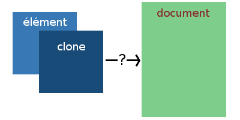
Il va alors falloir lui indiquer où se placer. Et comment insérer du contenu ? Avec les méthodes étudiées précédemment, telles que append() ou prepend() !
var $clone = $('.objet').clone(); // on clone notre élément
$('body').append($clone); // puis on l'ajoute à la fin de notre document !
// on peut également tout écrire sur une seule ligne grâce au chaînage de méthode :
$('.objet').clone().appendTo('body');
Vider et/ou supprimer un élément
Viennent ensuite les actions de vidage ou de suppression d'éléments. Respectivement, bien que leur nom soit assez éloquent, empty() et remove() sont les deux méthodes appropriées. Mais quelle différence entre vider et supprimer un élément ? Dites-vous que toute la subtilité réside dans le contenu et les balises : vider un élément supprimera simplement son contenu, qu'il soit textuel ou structurel, alors que supprimer un élément fera disparaître ce dernier en totalité, c'est-à-dire son contenu, mais aussi lui-même !
$('p').empty(); // vide l'élément, seules subsisteront les balises <p></p> et leurs attributs
$('p').remove(); // supprime l'élément, avec son contenu, rien n'en restera
$('div').remove('.suppression'); // supprime les éléments portant la classe .suppression parmi les blocs div trouvés
Remplacer les éléments
On continue ! Après le clonage et la suppression, parlons du remplacement. Très simple également, tout comme clone(), les deux méthodes replaceWith() et replaceAll() permettent de remplacer un élément par un autre. Cela va fonctionner comme un couper-coller : l'élément ciblé va être remplacé par un autre, dans le cas d'un objet, mais celui ci va se déplacer au lieu de se cloner. Encore une fois, vous n'êtes pas obligé de spécifier un objet en tant qu'argument, vous pouvez tout aussi bien mettre du nouveau contenu.
Une minute, on vient de voir deux méthodes. Fonctionnent-elles de la même manière ? :euh:
La seule différence entre les fonctions replaceWith() et replaceAll(), c'est que la première va prendre en argument l'objet ou le nouveau contenu à insérer, alors que l'autre va faire l'inverse, c'est-à-dire que vous devrez spécifier l'élément à remplacer en argument.
$('.pomme').replaceWith('<p>Cet élément a été remplacé !</p>');
// on remplace l'élément .pomme par un nouvel élément créé pour l'occasion
$('.pomme').replaceWith( $('.poire') );
// ici, l'élément .pomme est remplacé par l'élément .poire, ce dernier va se déplacer
$('.poire').replaceAll('.pomme');
// inversement, on ordonne aux éléments .poire de remplacer tous les éléments .pomme trouvés
Envelopper/déballer des éléments
Enfin, pour clore cette partie, vous allez apprendre à envelopper et déballer des éléments. Ce sont des actions plus ou moins utilisées, car elles ne présentent pas énormément d'intérêt, mais il est tout de même bon de savoir les effectuer, car elles permettent notamment de créer ou de supprimer des parents très rapidement. Nous parlons ici des méthodes wrap() et unwrap(). Plus concrètement, la première fonction va agir autour de l'élément ciblé : elle va y insérer les bonnes balises indiquées, et ce, automatiquement. L'argument a néanmoins une forme un peu particulière, qui va vous préparer à la suite de ce chapitre, c'est-à-dire la création d'éléments à la volée. :)
La forme de cet argument est plutôt simple ; il suffit d'écrire une balise HTML normalement, en la fermant directement. Vous savez qu'il existe des balises auto-fermantes, telles que <img /> ? Eh bien, jQuery uniformise la chose en donnant cette convention à toutes les balises. C'est une habitude à prendre, car même si elle n'est pas obligatoire (vous pouvez tout aussi bien écrire la balise ouvrante et la balise fermante, cela fonctionnera aussi bien), c'est une des conventions qui font la différence entre un mauvais et un bon codeur jQuery. :p
Pour déballer vos éléments, il suffit d'utiliser unwrap() sans argument. Cela aura pour effet de détruire l'élément parent de celui qui est ciblé.
$('strong').wrap('<p />'); // entoure les balises <strong></strong> de balises de paragraphe
$('span').wrap('<p class="description" />'); // il est possible de donner des attributs au nouveau parent
$('span').unwrap(); // détruit le parent de tous les span
Envelopper plusieurs éléments frères
Le principal problème de wrap(), c'est qu'elle va entourer chaque élément trouvé sur le document. Avec elle, il est impossible d'entourer plusieurs éléments frères, qui se trouvent côte à côte. Comme d'habitude, nous vous donnons la solution : wrapAll() ! Elle s'utilise exactement de la même manière, si ce n'est qu'elle va prendre en compte le fait que des éléments soient frères :
$('li').wrapAll('<ul />'); // entoure tous les <li></li> d'un seul parent commun
Envelopper seulement le contenu
Dernière possibilité, est-il réaliste de vouloir entourer le contenu seulement d'un nouveau parent ? La réponse est bien évidemment positive ! :) La fonction wrapInner() va vous permettre de réaliser ce genre de chose :
$('p').wrapInner('<strong />'); // entoure le contenu de balises <strong></strong>
Enfin, vous l'attendiez, nous allons apprendre dès maintenant comment créer des éléments à la volée ! Rappelez-vous que cette expression signifie qu'on va fabriquer de nouveaux éléments depuis notre code jQuery, sans passer par la case chargement du DOM. En JavaScript pur, la bonne façon de procéder, ou du moins la plus rapide, était d'utiliser la fonction native createElement(). De notre côté, seule la fonction principale jQuery() va nous servir !
Créer des éléments, une histoire de balises
La création de nouveaux éléments en jQuery se fait de manière extrêmement simple : on inscrit une ou plusieurs balises dans l'argument de la fonction principale, et celles-ci sont automatiquement créées. Se pose alors le problème que nous avons déjà rencontré : l'élément se trouve vaquant, et n'est pas placé dans le DOM, ce qui est assez embêtant. Pour parer ce soucis, il suffit d'utiliser les méthodes de placement que vous avez appris précédemment dans ce chapitre (quand on vous dit que ce chapitre traite de fonctions très importantes :p ).
$('<div />').appendTo('body'); // créé un nouveau bloc div, et le place à la fin du corps du document
Du contenu peut également être créé en même temps, de même que des attributs peuvent être initialisés (cela est possible grâce à la propriété native innerHTML de JavaScript) :
var $lien = $('<a href="http://www.siteduzero.com/">Le Site du Zéro !</a>');
// la variable contiendra l'élément lui-même, ainsi que son contenu
// n'oubliez pas de placer l'élément ensuite
Passer des attributs proprement
La création d'attributs pour notre nouvel élément peut se faire directement lors de la fabrication de celui-ci. Seulement, le code peut vite devenir redondant et illisible si vous procédez avec cette méthode lorsque vous avez beaucoup d'attributs à créer. Histoire d'améliorer le confort des développeurs, jQuery s'est vu ajouter, lors de sa version 1.4, la possibilité de donner un objet en second argument à la méthode principale, contenant la liste de tous les attributs du nouvel élément, à la manière d'attr(). Il est ainsi possible de donner un grand nombre d'attributs sans influencer la lisibilité du code jQuery :
$('<div />', {
id : "bloc", // identifiant de l'élément
css : { // style css de l'élément
color : "red",
fontSize : "30px"
}
// etc...
});
L'attribut class
Faites attention à une petite erreur que font beaucoup de débutants. JavaScript est un langage orienté objet, il utilise donc le concept de classes, que l'on peut définir grâce au mot-clé class. Si vous voulez définir la classe d'un élément, structurellement parlant, il vous faudra mettre le nom de cette propriété entre guillemets ou apostrophes pour ne pas entrer en conflit avec JavaScript.
Le cas Internet Explorer
L'éternel irréductible navigateur de Microsoft nous joue parfois des tours, même si l'on code avec jQuery ! Faites donc attention dans le cas où vous créez un élément de formulaire <input />, et que vous définissez ses attributs type et/ou name. En effet, Internet Explorer ne supporte pas de voir ces propriétés dans un objet, à la création de l'élément. Pour contourner ce problème, vous devrez passer soit par la création directe dans la balises, soit par la méthode attr() avant d'insérer l'élément dans le document (rappelez-vous que la propriété type n'est pas supportée par cette fonction).
$('<input />', {
type : "text",
name : "pseudo"
}); // non supporté par IE
$('<input type="text" />').attr({
name : "pseudo"
}); // bonne façon de procéder
Vous savez maintenant comment créer des éléments à la volée dans vos documents HTML ! :)
La manipulation du DOM est un passage incontournable lorsque vous codez avec jQuery. Vous venez de voir une foule de fonctions maintenant prêtes à l'emploi, mais rassurez-vous, si vous ne les retenez pas toutes, vous pourrez toujours revenir sur ce chapitre un peu plus tard. Retenez pour le moment seulement les principales méthodes, celles qui sont indispensables. En annexes, un mémento des fonctions à connaître vous sera proposé. :)
Vous allez à présent vous lancer dans votre deuxième TP. Celui-ci portera sur la création d'un carrousel simple, qui est, vous le verrez, une animation très sympathique énormément utilisée sur le web !
Bien ! Vous voilà arrivé sur un nouveau Travail Pratique ! Ce chapitre va clore la troisième partie, qui était consacrée aux animations et à la manipulation du DOM. Nous espérons que tout à été clair pour vous, et que vous réussirez ce TP les doigts dans le nez. :p
Votre travail consiste à réaliser un carrousel grâce à jQuery.
Certains vont sans aucun doute se demander : "qu'est-ce qu'un carrousel ?". Et en effet, même si c'est un petit effet de plus en plus présent sur le web, beaucoup ne connaissent pas le nom de cette fabuleuse chose. :) Un carrousel, c'est tout simplement un défilement d'images, le plus souvent présent sur l'index d'un site web. Cela permet de gagner de la place, tout en restant très esthétique, et faire une présentation originale. Nous vous invitons à aller voir quelques exemples de carrousel plus ou moins sophistiqués aux adresses suivantes :
Vous l'aurez maintenant compris, votre travail va être de réaliser vous-même un carrousel. Simple dans un premier temps, vous pourrez toujours l'améliorer par la suite si vous êtes motivé ! Ce carrousel, qu'on appellera également slider assez couramment, devra simplement comporter quelques fonctions basiques :
Il devra posséder deux boutons, un pour afficher l'image précédente, l'autre pour afficher la suivante ;
Il saura défiler seul, c'est-à-dire que les images défileront d'elles-mêmes sans que l'on ait à intervenir ;
Il pourra être très flexible dans la mesure où il sera possible de mettre autant d'images que l'on souhaite.
Tout ce dont vous avez besoin pour réaliser cela, c'est de la patience, et les connaissances que vous venez d'engranger !
Méthodes requises
Vous allez devoir piocher dans chaque chapitre pour pouvoir mener à bien votre travail. En effet, ce TP est complet dans le sens où il utilise tous les domaines de jQuery : les évènements, les sélecteurs, les fonctions de parcours, la manipulation du DOM... Vous allez devoir tout mettre à profit, et c'est exactement ce que nous voulons.
Vous devrez donc partir d'un squelette en HTML, très simple, puisqu'il ne s'agit en fait que d'un bloc contenant une liste d'images. Rien d'extraordinaire, et le CSS n'a rien a lui envier, car il sera lui aussi très très simple, sauf deux subtilités à ne pas manquer. En effet, l'astuce est de définir une taille fixe à votre carrousel, les images étant empilées les unes sur les autres grâce à une position absolue.
Une fois ceci terminé, tout se passe ensuite du côté de jQuery. L'astuce est de jouer sur la présence des images, grâce à la propriété display de CSS. N'hésitez pas non plus à manipuler les index, car c'est comme cela que vous pourrez déterminer quelle image doit être affichée. Enfin, les boutons précédent et suivant devront être ajoutés à la volée, pour empêcher l'utilisateur ayant désactivé JavaScript de les voir et de cliquer dessus sans voir de résultat.
setTimeout(), ou répéter une fonction régulièrement
Une méthode native de JavaScript va vous être fabuleusement utile pour faire défiler automatiquement les images. Il s'agit de setTimeout(), qui prend deux arguments : le nom de la fonction à exécuter, et l'intervalle de temps (en millisecondes) à attendre avant de le faire. L'astuce, c'est de relancer la fonction à l'intérieur d'elle-même pour réaliser une boucle infinie :
function maBoucle(){
setTimeout(function(){
alert('Bonjour !'); // affichera "Bonjour !" toutes les secondes
maBoucle(); // relance la fonction
}, 1000);
}
maBoucle(); // on oublie pas de lancer la fonction une première fois
Si vous souhaitez partir sur de bonnes bases, nous vous suggérons de prendre notre structure HTML et le style CSS minimal :
Vous avez maintenant toutes les clés pour réaliser ce carrousel ! N'oubliez pas de consulter la documentation de jQuery si vous en avez besoin, et de faire usage de Firebug, par exemple, pour localiser un soucis dans votre code. Si vous avez vraiment du mal, n'hésitez pas à poser votre question sur le forum JavaScript !
Votre carrousel fonctionne bien ? Ou en est-il toujours à la phase théorique ? Quoi qu'il en soit, nous vous proposons comme de juste une correction. Suivez-la bien pas à pas, et vous saurez quelles ont été vos erreurs si vous en avez commis.
Comme pour le premier TP, nous vous avions fourni le code HTML minimal permettant de constituer une base de travail :
Notre carrousel possède donc une structure bien simple : une liste non-ordonnée d'images. Il est difficile d'être plus minimaliste. La première chose à faire était évidemment d'inclure jQuery, si vous avez oublié de faire cela, alors nous vous conseillons vivement de revoir certains chapitres. :p
<div id="carrousel">
<ul>
<li><img src="http://lorempixel.com/700/200/" /></li>
<li><img src="http://lorempixel.com/g/700/200/" /></li>
<li><img src="http://lorempixel.com/700/200/abstract/" /></li>
</ul>
</div>
<!-- on inclut la bibliothèque depuis les serveurs de Google -->
<script src="https://ajax.googleapis.com/ajax/libs/jquery/1.7.2/jquery.min.js"></script>
Il fallait également inclure correctement le style CSS minimal du carrousel, qui consistait à définir les positions absolues des images et la position relative du carrousel. C'est un point très important, sans cela, vous auriez des soucis de disposition très embêtants !
Explications du code jQuery
De même que pour l'inclusion de la librairie, il fallait tout d'abord s'assurer que le DOM était correctement chargé, grâce à l'évènement ready() lancé sur le document :
Plusieurs variables devaient ensuite être définies. Une bonne chose à faire avant de se lancer dans un code jQuery est de lister tous les objets que l'on va devoir utiliser, ainsi que toutes les informations dont on a besoin. Ici, il suffisait de cibler seulement deux éléments : le bloc du carrousel, et les images contenues par celui-ci. Ce genre de réflexion était plutôt facile, contrairement à la suite : qu'a-t-on besoin de connaître pour avancer dans notre système ?
Nous vous avions mis sur une petite piste : les index des images. Grâce à un système de compteur, vous pouviez contrôler l'affichage des images par leur index. Il était donc d'usage de définir le nombre d'images qu'il y avait dans la liste, puis de soustraire 1 pour obtenir l'index de la dernière diapositive (rappelez-vous que l'on commence de compter les index à partir de 0, et non de 1).
Une fois ceci fait, il fallait obtenir l'image courante, c'est-à-dire la première image sur laquelle le slider devait commencer. Soyons classique, et partons de la toute première image, celle qui possède l'index 0. Grâce à la fonction eq(), vous pouviez la cibler très facilement.
var $carrousel = $('#carrousel'), // on cible le bloc du carrousel
$img = $('#carrousel img'), // on cible les images contenues dans le carrousel
indexImg = $img.length - 1, // on définit l'index du dernier élément
i = 0, // on initialise un compteur
$currentImg = $img.eq(i); // enfin, on cible l'image courante, qui possède l'index i (0 pour l'instant)
Une fois les variables créées, il fallait s'assurer que toutes les images sauf une étaient invisibles. La propriété CSS display : none vous permettait de faire cela : on cache toutes les images, puis on affiche seulement l'image courante.
$img.css('display', 'none'); // on cache les images
$currentImg.css('display', 'block'); // on affiche seulement l'image courante
Créer les contrôles : image précédente et image suivante
La base de notre système posée, employons nous à présent à travailler sur les contrôles des images, c'est-à-dire les fonctions d'affichage des images précédentes ou suivantes. La structure HTML ne comprenait pas les deux éléments permettant d'interagir avec la page, il fallait donc les créer au moyen d'une méthode de manipulation du DOM. Nous vous suggérons append(), bien que vous pouviez tout aussi bien employer d'autre fonctions.
Nous avons choisi de créer un bloc div contenant deux span, ayant respectivement la classe .prev et .next.
En écoutant le clic sur ces éléments, il était possible de déterminer s'il fallait passer à l'image suivante, ou l'image précédente. Dans les deux cas, il suffisait de jouer avec l'index des diapositives : si l'on va à l'image suivante, l'index s'incrémente de 1, si on va à l'image précédente, il se décrémente de 1.
$('.next').click(function(){ // image suivante
i++; // on incrémente le compteur
$img.css('display', 'none'); // on cache les images
$currentImg = $img.eq(i); // on définit la nouvelle image
$currentImg.css('display', 'block'); // puis on l'affiche
});
$('.prev').click(function(){ // image précédente
i--; // on décrémente le compteur, puis on réalise la même chose que pour la fonction "suivante"
$img.css('display', 'none');
$currentImg = $img.eq(i);
$currentImg.css('display', 'block');
});
On se heurte alors à un nouveau problème : si l'on clique trop de fois sur une des deux fonctions, alors le compteur ne suit plus les index des images. On peut alors se retrouver avec une image courante qui n'existe pas, et qui ne peut donc pas s'afficher. Pour remédier à ce problème, il suffit de s'assurer grâce à une condition que le compteur ne dépasse pas le dernier index, et ne puisse pas aller en dessous de 0 :
$('.next').click(function(){ // image suivante
i++; // on incrémente le compteur
if( i <= indexImg ){
$img.css('display', 'none'); // on cache les images
$currentImg = $img.eq(i); // on définit la nouvelle image
$currentImg.css('display', 'block'); // puis on l'affiche
}
else{
i = indexImg;
}
});
$('.prev').click(function(){ // image précédente
i--; // on décrémente le compteur, puis on réalise la même chose que pour la fonction "suivante"
if( i >= 0 ){
$img.css('display', 'none');
$currentImg = $img.eq(i);
$currentImg.css('display', 'block');
}
else{
i = 0;
}
});
Créer le défilement d'images automatique
Enfin, pour terminer, vous deviez créer un défilement d'images automatique. Nous vous conseillions pour cela d'utiliser la fonction setTimeout() couplée à une autre fonction pour créer une boucle infinie, et répéter le défilement. Celui-ci ne va que dans un sens, ce qui est logique : il défile vers la droite, c'est-à-dire qu'il affiche à chaque fois l'image suivante. Rien de bien compliqué : il suffit d'incrémenter le compteur. Seulement, il convenait de faire attention à ce qu'il ne dépasse pas l'index de la dernière image, en le remettant à 0 le cas échéant.
function slideImg(){
setTimeout(function(){ // on utilise une fonction anonyme
if(i < indexImg){ // si le compteur est inférieur au dernier index
i++; // on l'incrémente
}
else{ // sinon, on le remet à 0 (première image)
i = 0;
}
$img.css('display', 'none');
$currentImg = $img.eq(i);
$currentImg.css('display', 'block');
slideImg(); // on oublie pas de relancer la fonction à la fin
}, 7000); // on définit l'intervalle à 7000 millisecondes (7s)
}
slideImg(); // enfin, on lance la fonction une première fois
Et voilà, le carrousel est terminé !
$(document).ready(function(){
var $carrousel = $('#carrousel'), // on cible le bloc du carrousel
$img = $('#carrousel img'), // on cible les images contenues dans le carrousel
indexImg = $img.length - 1, // on définit l'index du dernier élément
i = 0, // on initialise un compteur
$currentImg = $img.eq(i); // enfin, on cible l'image courante, qui possède l'index i (0 pour l'instant)
$img.css('display', 'none'); // on cache les images
$currentImg.css('display', 'block'); // on affiche seulement l'image courante
$carrousel.append('<div class="controls"> <span class="prev">Precedent</span> <span class="next">Suivant</span> </div>');
$('.next').click(function(){ // image suivante
i++; // on incrémente le compteur
if( i <= indexImg ){
$img.css('display', 'none'); // on cache les images
$currentImg = $img.eq(i); // on définit la nouvelle image
$currentImg.css('display', 'block'); // puis on l'affiche
}
else{
i = indexImg;
}
});
$('.prev').click(function(){ // image précédente
i--; // on décrémente le compteur, puis on réalise la même chose que pour la fonction "suivante"
if( i >= 0 ){
$img.css('display', 'none');
$currentImg = $img.eq(i);
$currentImg.css('display', 'block');
}
else{
i = 0;
}
});
function slideImg(){
setTimeout(function(){ // on utilise une fonction anonyme
if(i < indexImg){ // si le compteur est inférieur au dernier index
i++; // on l'incrémente
}
else{ // sinon, on le remet à 0 (première image)
i = 0;
}
$img.css('display', 'none');
$currentImg = $img.eq(i);
$currentImg.css('display', 'block');
slideImg(); // on oublie pas de relancer la fonction à la fin
}, 7000); // on définit l'intervalle à 7000 millisecondes (7s)
}
slideImg(); // enfin, on lance la fonction une première fois
});
Nous venons de vous présenter un carrousel très basique. La plupart de ceux que vous rencontrerez sur la toile sont beaucoup plus sophistiqués, mais rappelez-vous qu'ils fonctionnent presque tous de la même manière ! Que diriez-vous donc d'améliorer le votre ? Voici quelques pistes :
le défilement d'images n'est pas très esthétique : à la place du système de display, essayez de mettre en place des effets d'animation sympatiques !
pour le moment, les contrôles sont très basiques : il n'est pas possible d'aller à une image précise en cliquant une seule fois. Que diriez-vous de réaliser une liste de boutons représentant chacun une diapositive ?
de même, il est possible de faire des miniatures des images et de les afficher en dessous du carrousel pour faire une bien meilleure navigation !
...
Les possibilités sont infinies, on peut toujours trouver de nouvelles idées, qu'elles soient bonnes ou non. N'hésitez pas à regarder comment certains carrousel sont fait, vous risquez d'avoir de fabuleuses surprises ! :)
Voilà un TP qui ne vous aura pas fait chômer !
Nous allons à présent entrer dans une quatrième partie, qui sera entièrement consacrée à AJAX. Si vous ne connaissez pas vraiment le principe, ce n'est pas bien grave, car cette technologie a été complètement revisitée par jQuery. Concrètement, vous apprendrez à réaliser des requêtes HTTP grâce à une fonction très utilisée, qui va par exemple vous permettre de traiter des formulaires sans rechargement de la page !
AJAX (Asynchronous JavaScript and XML) n'est pas une technologie, c'est le résultat d'un ensemble de technologies du web qui fonctionnent ensemble pour arriver à un objectif simple : rafraîchir une partie de page web sans recharger la page complète.
AJAX... c'est simple !
Imaginons un fil de commentaires
Commençons à penser à un système en AJAX, pour vous donner une meilleure idée de ce dont il s'agit. Imaginez un article sur le web, qui possède son propre fil de commentaire : classique. Maintenant, ce que nous voulons, c'est que les visiteurs puissent commenter notre article et mettre à jour le fil de commentaire sans que la page soit rechargée entièrement. Le but du jeu est donc qu'au moment de la soumissions du formulaire, une logique se mette en route côté jQuery, qui fera que le commentaire sera ajouté en base de données, et qu'il soit automatiquement ajouté au fil, le tout sans recharger la page !
C'est totalement possible... et c'est même très répandu. Si vous êtes fan des réseaux sociaux, comme Facebook, vous avez forcément été confronté à l'un de ces fils de commentaire dans votre vie de geek.
Fil de commentaire rechargé en AJAX
Bon ! Maintenant une question doit vous titiller !
Comment diable cela se met-il en place dans le code ?
jQuery ne suffit pas !
Nous avons parlé d'un fil de commentaire qui se recharge en AJAX plus haut, et nous avons même évoqué l'idée d'une base de données. Vous devriez donc comprendre que jQuery est aussi capable d'interagir avec ce qu'il se passe côté serveur !
Si c'est ce que vous pensez, sachez que ce n'est que partiellement vrai. Pour interagir avec une base de données, jQuery va devoir appeler des scripts côté serveur, qui eux sont capables de le faire. Vous commencez à comprendre ? AJAX repose sur ce fondement même, la communication asynchrone d'un langage côté client, avec un langage côté serveur. Vous devinez la suite, pour mettre en place un appel AJAX sur son site, jQuery ne va plus nous suffir. Voilà ce dont on va avoir besoin :
Un langage côté client : nous utiliserons bien sûr JavaScript, avec jQuery.
Un langage côté serveur : nous utiliserons ici le PHP.
Un appel AJAX sans le vocabulaire technique
Dans ce tutoriel, lorsque nous utilisions jQuery, nous l'avons utilisé uniquement sur nos propres pages web : modification du DOM, ajout d'animations, modification du CSS... nous ne visions rien d'autre que ce qui était accessible côté client. Ici nous voulons taper plus loin : appeler des scripts PHP et interagir avec notre serveur directement depuis jQuery. Le script PHP appelé fais son travail : envoi de mail, insertion en base de données... et surtout, il renvoie un résultat que jQuery va intercepter. Ce résultat, c'est ce que jQuery utilisera pour mettra à jour la page ! C'est comme ça que le fil de commentaire de Facebook fonctionne. ;)
Un appel AJAX avec le vocabulaire technique
Nous écoutons l'évènement clic sur le bouton d'envoi.
Lorsque cet évènement est réalisé, nous envoyons une requête HTTP en POST vers un script PHP depuis jQuery.
PHP nous renvoie le commentaire posté dans un format léger. Nous n'avons plus qu'à l'ajouter au DOM avec jQuery... et avec une petite animation au passage.
Nous aimerions vous faire remarquer quelque chose d'autre, souvenez-nous ce que signifie AJAX ? Asynchronous JavaScript and XML. Depuis tout à l'heure nous vous parlons de JavaScript, de jQuery et de PHP... mais il est passé où le XML là-dedans ?
Sachez que l’appellation « AJAX » est sujette à débat. XML se situe en fait au niveau du retour que PHP fait et que jQuery intercepte. Si nous souhaitons ajouter un nouveau commentaire, mieux vaut que le retour soit un peu structuré pour le rendre plus facilement exploitable pour nous, XML est alors tout indiqué. En fait, on peut aussi décider de renvoyer du HTML ou même du texte pur, c'est comme vous voulez. Néanmoins on utilise généralement un autre format, le JSON qui est plus simple à traiter et plus léger. On utilisera donc JSON ici, comme un peu tout le monde. C'est pourquoi beaucoup de personnes sont tentées de parler d'AJAJ... gardez ça pour votre culture, mais pour être vraiment honnête avec vous, on s'en moque un peu. En bref, tout cela pour dire que PHP doit vraiment nous renvoyer quelque chose, et c'est ce quelque chose que nous allons devoir utiliser pour rafraîchir la page.
Nous parlons depuis tout à l'heure d'un fil de commentaire qui se recharge en AJAX, mais c'est loin d'être la seule utilisation possible d'AJAX. Nous pouvons potentiellement tout faire... car toute la puissance de PHP est à notre disposition. On voit de plus en plus d'applications réalisées complètement grâce à AJAX, citons Google Maps pour l'exemple ! En guise de TP, nous réaliserons un tchat en AJAX pour clore cette grande partie du tutoriel.
Et le rôle de jQuery dans tout ça
Il nous simplifie la vie
Pour aborder la question d'un point de vue sensiblement plus technique : nous devons vous avouer que la base de chaque appel AJAX est une requête HTTP. JavaScript est donc suffisamment puissant et évolué pour nous permettre d'envoyer des requêtes HTTP. Le boulot de jQuery ? C'est de simplifier énormément l'appel et le suivi de cette requête HTTP, et, en prime, de faciliter énormément le traitement du retour que fait PHP. jQuery nous simplifie encore la vie, même à tel point que réaliser un appel AJAX grâce à jQuery est presque une promenade de santé.
Faisons quand même un point sur les requêtes HTTP avant de commencer à taper du code. Vous ne savez pas vraiment ce qu'est HTTP ? Alors lisez la suite de ce chapitre. Si vous savez déjà ce qu'est HTTP, vous pouvez passer directement à la troisième partie de ce chapitre.
Avant de commencer à taper du code, nous estimons bon de rappeler ce qu'est une requête HTTP et de quoi est-elle constituée, ce serait quand même dommage d'essayer d'envoyer quelque chose en JavaScript, alors que nous ne savons même pas ce qu'est ce "quelque chose" !
Le fonctionnement du web
Un monde de clients et de serveurs
Vous savez sûrement comment fonctionne le web : c'est un ensemble d'ordinateurs comme le vôtre fonctionnant en réseau. On peut ranger ces ordinateurs dans deux catégories : les clients et les serveurs. Les serveurs sont des ordinateurs sur lesquels se trouvent les sites web, ils sont généralement très très puissants et fonctionnent en permanence. L'autre groupe, les clients, sont les ordinateurs qui demandent les pages web. Votre machine, comme les nôtres, sont donc des clients. Les visiteurs d'un site web sont des clients.
Pour obtenir une page web, un client demande donc à un serveur une page web. Le serveur cherche dans son disque dur à la recherche de la page demandée, et il la renvoie au client. Si des fichiers JavaScript sont rattachés à cette page, le serveur les fait parvenir aussi au client. Le navigateur web du client lit ensuite le code HTML et interprète le code JavaScript que le serveur lui a renvoyé, et il affiche la page au visiteur. Plutôt simple non ?
Une langue commune : le protocole HTTP
Néanmoins, pour que le web fonctionne, il faut que le client et le serveur parlent la même langue (on parle en fait de « protocole » plutôt que de « langue »). Le protocole utilisé sur le World Wide Web est le protocole HTTP. La "demande" que le client fait est ce que l'on appelle une « requête HTTP » ; ce que le serveur répond, c'est la « réponse HTTP ». Voilà ce que pourrait être un échange entre un client et un serveur.
Le serveur fouille dans son disque dur à la recherche de la page index.html. Des fichiers JavaScript y sont rattachés. Il renvoie le tout au client.
Serveur : "Voilà la page que tu m'as demandé avec les fichiers JavaScript : c'est ma réponse HTTP, à plus !"
Voilà comment ça tourne. Vous n'avez pas à vous soucier de comment votre requête HTTP est générée ni comment elle est envoyée au serveur, c'est assez complexe, et nous n'avons pas vraiment besoin de savoir ça pour gérer des appels AJAX. Si vous avez assimilé cette idée de dialogue entre client et serveur, c'est tout bon.
Plusieurs types de requêtes
Le type GET
Il existe plusieurs types de requête HTTP. L'un d'eux est le type GET. En anglais, GET signifie « obtenir ». Vous l'utiliserez lors de vos rappels AJAX lorsque vous souhaiterez obtenir des données. Un exemple ? Imaginez un système pour recharger des commentaires dès que l'on clique sur un bouton « Plus de commentaires ».
L'appel AJAX est ici dédié à la récupération de données, nous ne faisons qu'obtenir les commentaires. Nous pouvons également envoyer des données grâce à GET. C'est même courant, connaissez-vous les URL contenant des variables ? Généralement les caractères ?, = et & y sont présents.
http://site.com/article.php?page=1&auteur=robert
Nous pourrons également spécifier ce genre de choses en GET.
Le type POST
Le type POST est un type dédié à l'envoi de données, mais nous pouvons aussi en recevoir. Un autre exemple ? Imaginez un système pour envoyer un email en AJAX. Lorsque vous allez cliquer sur le bouton « Envoyer », nous allons envoyer des données au serveur, pour qu'il les envoie par email, avant de nous retourner un message de succès ou d'erreur. C'est vraiment très simple.
Un langage côté serveur.
Transformer votre ordinateur en serveur
Votre ordinateur peut tout à fait être transformé en serveur. Il va falloir passer par là pour continuer ; étant donné que nous allons travailler avec le langage PHP, nous devons avoir un environnement de travail digne de ce nom. Lisez ce tutoriel de M@teo21 pour installer les programmes nécessaires afin obtenir un serveur en local sous Windows, Mac et Linux.
Nous considérons que vous connaissez maintenant les tenants et les aboutissants d'AJAX. Notre but va donc être d'envoyer une requête HTTP au serveur depuis JavaScript grâce à jQuery. Nous devrons ensuite intercepter la réponse HTTP du serveur, et rafraîchir notre page web grâce à cette réponse.
Nous allons ici commencer à taper un peu de code !
Envoyer une requête HTTP : XmlHttpRequest à la rescousse !
JavaScript a la particularité d'intégrer en natif une classe appelée XmlHttpRequest (XHR) : vous n'avez rien à télécharger, XmlHttpRequest fait partie intégrante de JavaScript. En instanciant un objet à partir de cette classe, vous pouvez envoyer une requête HTTP vers le serveur grâce à cet objet XHR : c'est comme ça que cela marche !
Cet objet XmlHttpRequest va plus loin que ça, car il vous permet vraiment de gérer beaucoup d'aspects de votre requête HTTP, et nous allons décortiquer ça ensemble dans la suite de ce tutoriel. C'est vraiment quelque chose de vaste qu'on va vous aider à dégrossir. ^^
Instancier XHR : un calvaire
Tout cela c'est très beau, mais il existe néanmoins un petit problème : instancier un objet XHR peut devenir difficile... car il faut prendre en compte le problème de compatibilité entre les navigateurs. Les navigateurs Internet Explorer antérieurs à la version 7 utilisaient une implémentation différente de XHR : ActiveX, développé par Microsoft. Il va donc falloir prendre en compte ces navigateurs pour que notre appel AJAX soit mis en œuvre sur ces ceux-ci.
Voici un code en JavaScript pur instanciant un objet XHR couvrant les navigateurs utilisant ActiveX et XHR. En jouant avec des conditions, on arrive très bien à instancier un objet de type XHR pour chaque navigateur, c'est pas super pratique, mais on y arrive.
var xhr = null;
if(window.XMLHttpRequest || window.ActiveXObject){
if(window.ActiveXObject){
try{
xhr = new ActiveXObject("Msxml2.XMLHTTP");
}catch(e){
xhr = new ActiveXObject("Microsoft.XMLHTTP");
}
}else{
xhr = new XMLHttpRequest();
}
}else{
alert("Votre navigateur ne supporte pas l'objet XMLHTTPRequest...");
return;
}
C'est propre et ça marche. Vous pouvez utiliser ça sans problème sur votre site. Il y a quand même un tout petit soucis ici : c'est vraiment long à taper, et nous vous le disions, pas pratique du tout. Voici 16 lignes de code, utilisées uniquement pour régler un problème de compatibilité entre les navigateurs... si on demandait à jQuery de faire ça à notre place, ce serait mieux non ? :)
XmlHttpRequest devient nettement plus facile à instancier avec jQuery. Une seule ligne de code, cela va aller très vite !
Instancier XmlHttpRequest avec jQuery
Instancier un objet XmlHttpRequest devient extrêmement simple, cela va être rendu possible par la fonction jQuery.ajax() ou $.ajax(). Cette seule et unique fonction va nous permettre d'instancier l'objet XmlHttpRequest qui fait tant couler d'encre... Vous n'avez même pas besoin d'utiliser le mot-clé new pour instancier l'objet : cette fonction de jQuery le fait implicitement !
$.(document).ready(function(){
/*
* Utilisons $.ajax pour créer une instance de XmlHttpRequest
*/
$.ajax();
});
Et hop, XmlHttpRequest est instancié. Vous pouvez désormais procéder à l'envoie d'une requête HTTP grâce à cet objet. Bien sûr, ce code se veut le plus simple et le plus basique possible ; vous pouvez coupler cette fonction avec tous les évènements, effets ou autre que vous voulez.
Nous avons pris tout à l'heure comme exemple un fil de commentaire qui se rechargerait en AJAX dès que l'on cliquerait sur un bouton « plus de commentaires ». Imaginons que ce bouton existe dans le DOM, et qu'il dispose de l'identifiant #more_com. On va écouter l'évènement click() sur ce bouton et dès qu'il sera réalisé, on instanciera un objet XHR !
Et niveau compatibilité, vous êtes SÛR que c'est vraiment au point ?
Oh que oui. jQuery reste fidèle à lui-même : ce code fonctionne sur tous les navigateurs qui supportent XmlHttpRequest et ActiveX de Microsoft ! Bien sûr, rien n'est magique. Si vous utilisez un navigateur qui date de Mathusalem et qui ne supporte pas du tout AJAX, ne vous attendez pas à ce qu'un objet soit instancié. À vous de vous tenir à jour. ;)
C'est forcément un peu déroutant au début, mais comprenez bien que si vous voyez $.ajax() quelque part, c'est qu'un objet XmlHttpRequest est instancié. Avec cette fonction, jQuery fait tout implicitement. ;)
XHR permet d'envoyer des requêtes HTTP depuis JavaScript, cette classe est donc à la base des appels AJAX. La fonction $.ajax() de jQuery nous permet d'instancier un objet très rapidement à partir de cette classe, autant dire que cette partie du tutoriel est là pour vous permettre de maîtriser cette fonction ! Et croyez-nous, c'est quand même du boulot.
Si vous êtes amené à utiliser AJAX avec du JavaScript "nu", ou tout simplement que vous préférez tout faire par vous-même, nous pouvons vous conseiller le tutoriel AJAX du Site du Zéro. Il a la particularité d'expliquer AJAX sans l'utilisation de frameworks.
Nous n'avons fait qu'instancier un objet XHR, mais nous n'exploitons encore pas sa puissance. Autrement dit, nous n'avons encore rien fait ! Voyons voir comment on va pouvoir s'y prendre, toujours à l'aide de jQuery et de cette fameuse fonction $.ajax().
La fonction $.ajax() va être incontournable pour nos appels AJAX en jQuery, nous l'employons pour envoyer une requête HTTP. Nous allons désormais avoir très souvent recours à cette fonction, alors commençons par voir ce qu'elle a dans le ventre.
Pour tirer pleinement profit de la puissance de $.ajax(), voyons comment l'on va pouvoir exploiter ses paramètres, qui sont, pour certains, vitaux pour l'envoie de votre requête HTTP. :)
Les paramètres principaux de $.ajax()
Le fichier ciblé
Lorsque vous envoyez une requête HTTP, vous demandez quelque chose au serveur. Dans notre cas de figure, il s'agit simplement du script côté serveur qui va aller chercher les commentaires dans la base de données et nous les retourner. C'est plutôt logique non ?
Pour spécifier quelle est la ressource ciblée (notre script PHP) nous allons devoir utiliser le paramètre url de $.ajax().
Nous considérons ici que le fichier PHP exécuté côté serveur s'appelle more_com.php. C'est un lien relatif, le fichier PHP se trouve donc dans le même répertoire que le fichier JavaScript, et le fichier HTML auquel il est lié. Ce code marche, mais il ne fait rien. Nous allons devoir spécifier le type de la requête.
Le type de la requête : POST ou GET ?
Devons-nous envoyer une requête de type POST ou GET ? Utiliser le type POST est ici complètement insensé, étant donné que nous ne souhaitons pas envoyer d'informations au serveur (nous ne postons pas un formulaire par exemple). Nous allons donc envoyer une requête de type GET. Cela passe ici par le paramètre type.
$("#more_com").click(function(){
$.ajax({
url : 'more_com.php', // La ressource ciblée
type : 'GET' // Le type de la requête HTTP.
});
});
Envoyer des éléments en GET
Si votre requête est de type GET, rien ne vous empêche de faire passer des paramètres avec GET pour les utiliser côté serveur dans l'array $_GET. Pour cela, vous pouvez utiliser le paramètre data. Avec un peu de concaténation, on s'en sort très bien.
$("#more_com").click(function(){
$.ajax({
url : 'more_com.php', // La ressource ciblée
type : 'GET' // Le type de la requête HTTP.
data : 'utilisateur=' + nom_user;
});
});
Avec ceci, du côté serveur, $_GET['utilisateur'] contiendra la valeur de la variable nom_user. C'est plutôt simple.
Le type de données à recevoir
Nous devons spécifier maintenant le type de données que nous allons recevoir de PHP. Rappelez-vous, nous pouvons recevoir tout et n'importe quoi : du XML, du HTML, du texte, du JSON... peu importe ! On utilisera en principe JSON dans nos projets, mais nous allons utiliser ici du HTML afin de vous montrer que c'est tout à fait utilisable.
$("#more_come").click(function(){
$.ajax({
url : 'more_com.php', // La ressource ciblée
type : 'GET', // Le type de la requête HTTP
/**
* Le paramètre data n'est plus renseigné, nous ne faisons plus passer de variable
*/
dataType : 'html' // Le type de données à recevoir, ici, du HTML.
});
});
Nous en avons fini avec les requêtes de type GET ! Tout ce qu'il nous reste à faire maintenant, c'est de les traiter côté serveur ! Néanmoins, nous allons voir maintenant comment gérer une requête de type POST.
Envoyer des requêtes de type POST
Pour nous donner un petit exemple dans cette petite partie sur les requêtes POST, nous vous demandons d'oublier cinq minutes l'histoire du fil de commentaire. Pensons plutôt à l'envoi d'un mail depuis une page de contact. Le visiteur tape un message dans un formulaire HTML, et ce message vous est envoyé par email en AJAX. Si nous souhaitons réaliser ce système, il faut envoyer des informations au serveur avec notre requête HTTP, pour cela, il faut commencer à spécifier un type POST pour $.ajax().
$("#envoyer").click(function(){
$.ajax({
url : 'send_mail.php', // Le nom du script a changé, c'est send_mail.php maintenant !
type : 'POST', // Le type de la requête HTTP, ici devenu POST
dataType : 'html'
});
});
Tout est pareil, on a juste basculé sur du POST dans le paramètre type, mais ce n'est pas vraiment suffisant. Nous allons devoir faire passer nos variables JavaScript à notre script PHP. Ces variables contiennent les informations du formulaire, et PHP en a besoin pour agir côté serveur. C'est très simple, l'argument data revient ici.
$("#envoyer").click(function(){
$.ajax({
url : 'send_mail.php',
type : 'POST', // Le type de la requête HTTP, ici devenu POST
data : 'email=' + email + '&contenu=' + contenu_mail, // On fait passer nos variables, exactement comme en GET, au script more_com.php
dataType : 'html'
});
});
Nous avons une bonne nouvelle pour vous, votre requête HTTP fonctionne ! Si les scripts more_come.php ou send_mail.php fonctionnent aussi, ils réalisent leur boulot côté serveur, avant de nous envoyer une réponse. Seulement, on a toujours un petit problème côté client, nous n'avons rien pour traiter le retour ! Nous allons remédier à cela tout de suite, grâce à trois nouveaux paramètres de $.ajax().
Votre requête HTTP est donc prête, et pour peu que votre script côté serveur soit présent et fonctionnel, elle a toutes les chances de marcher. Après avoir fait son boulot, le serveur nous renvoie quelque chose. Manque de bol, nous n'avons rien pour gérer le retour de $.ajax(). Les paramètres complete, success et error vont nous être très utiles !
Traiter les retours de la fonction
L'appel AJAX a réussi : success
jQuery ne nous laisse pas en plan et va nous proposer un paramètre pour gérer le retour de notre fonction $.ajax() en cas de réussite. Le paramètre s'appelle success, et il ne sera exécuté QUE si l'appel AJAX a abouti. Ce paramètre prend en charge une fonction qui sera exécutée. C'est logique, lorsque l'appel AJAX aura réussi, cette fonction est automatiquement appelée ; c'est elle que l'on utilise pour mettre à jour notre page ! Comme quoi, tout à vraiment été pensé. ^^
$("#more_com").click(function(){
$.ajax({
url : 'more_com.php',
type : 'GET',
dataType : 'html', // On désire recevoir du HTML
success : function(code_html, statut){ // code_html contient le HTML renvoyé
}
});
});
L'appel AJAX n'a pas réussi : error
Si l'appel AJAX a rencontré une erreur, on va avoir de quoi gérer l'erreur de la même manière qu'avec success. Le paramètre qui va être employé ici sera error. Le paramètre exécute une fonction si l'appel AJAX a échoué.
$("#more_com").click(function(){
$.ajax({
url : 'more_com.php',
type : 'GET',
dataType : 'html',
success : function(code_html, statut){ // success est toujours en place, bien sûr !
},
error : function(resultat, statut, erreur){
}
});
});
La fonction exécutée par error prend en charges trois arguments : le résultat, le statut, et l'erreur. Vous connaissez le second argument, c'est le même que pour success, il ne nous sera pas utile. Le premier est un objet XHR renvoyé par jQuery. Le dernier est en revanche nettement plus intéressant. C'est en fait une exception, vous pouvez ici placer une chaîne de caractère à afficher à votre visiteur si l'appel AJAX n'a pas fonctionné.
Un dernier paramètre de $.ajax() : complete
Vous le devinez, complete va s'exécuter une fois l'appel AJAX effectué.
Le paramètre va prendre deux arguments, l'objet resultat dont nous avons parler plus haut ainsi qu'un statut. Vous commencez à être habitué, n'est-ce pas ?
C'est à l'intérieur de ces fonctions que nous allons devoir traiter la suite des évènements : nous voulons maintenant ajouter les commentaires reçus du serveur à notre fil de commentaires sur notre page. Imaginons un bloc div portant l'identifiant #commentaires qui contienne les commentaires déjà chargés dans la page. Nous allons vouloir y ajouter les commentaires reçus.
Pour cela, il faut ajouter un petit quelque chose dans le success, mais vous devriez savoir le faire tout seul.
// On reprend le même id que dans le précédent chapitre
$("#more_com").click(function(){
$.ajax({
url : 'more_com.php',
type : 'GET',
dataType : 'html',
success : function(code_html, statut){
$(code_html).appendTo("#commentaires"); // On passe code_html à jQuery() qui va nous créer l'arbre DOM !
},
error : function(resultat, statut, erreur){
},
complete : function(resultat, statut){
}
});
});
Et voilà ! La fonction $.ajax() est complétée ! De là, vous êtes libre d'ajouter tous les effets que vous souhaitez afin de rendre la chose un peu plus animée !
Nous avons l'honneur de vous dire que vous savez maintenant gérer un appel en AJAX simple en jQuery ! Tout passe par la fonction $.ajax() et ses paramètres, seulement il existe deux raccourcis bien utiles que nous allons voir ici.
Allez plus vite avec $.get() et $.post()
Des raccourcis qui fonctionnent différemment
Avouez qu'écrire une fonction $.ajax() pour ensuite définir son type GET/POST dans le paramètre adéquat, c'est lourd. On a voulu simplifier la vie aux développeurs en leur permettant de créer directement une requête GET ou POST. Ces raccourcis sont les fonctions $.get() et $.post(). Toutes les deux fonctionnent de la même manière, elles font appel implicitement à $.ajax() en lui spécifiant un type GET pour $.get() et un type POST pour $.post().
Et l'objet XmlHttpRequest, il est quand même instancié ?
Bien sûr, vous ne vous rappelez pas du fonctionnement de $.ajax() ? Dès qu'elle est appelée, un objet de type XHR est créé ; $.get() et $.post() font toutes les deux appel à cette fonction, l'objet est donc bel et bien instancié. Un peu de code pour vous montrer ça.
/**
* $.get() vaut $.ajax() avec un type get
* Ces lignes reviennent à faire un $.get();
*/
$.ajax({
type : 'get'
});
/**
* De la même manière $.post() vaut $.ajax() avec un type post
* Ces lignes reviennent à faire un $.post();
*/
$.ajax({
type: 'post'
});
Nous espérons que vous devinez qu'il nous reste quand même deux ou trois choses à régler, sinon, relisez les deux premières parties de ce chapitre ! :-°
Un appel AJAX en GET avec $.get()
La fonction $.get() se veut être un raccourci de $.ajax() avec un type GET. Nous insistons bien sur le terme de raccourci, car même les arguments s'inscrivent de manière simplifiée par rapport à tout à l'heure. Les arguments demandés sont les mêmes :
l'URL du fichier appelé ;
les données envoyées* ;
une fonction qui va gérer le retour ;
le format des données reçues.
Nous allons vous montrer un code mettant en application la fonction $.get().
$.get(
'fichier_cible.php', // Le fichier cible côté serveur.
'false', // Nous utilisons false, pour dire que nous n'envoyons pas de données.
'nom_fonction_retour', // Nous renseignons uniquement le nom de la fonction de retour.
'text' // Format des données reçues.
);
function nom_fonction_retour(texte_recu){
// Du code pour gérer le retour de l'appel AJAX.
}
C'est du classique, la seule différence par rapport à tout à l'heure est la rapidité d'écriture de l'appel AJAX. Une dernière chose notable : la fonction de retour. Nous préférons renseigner son nom dans $.get(), et la définir plus bas pour une meilleure lisibilité.
Cette dernière prend un argument : il est automatiquement créé par $.get() et il contient les données reçues du serveur. Nous n'avons qu'à le passer en argument de notre fonction de retour, et cela fonctionne ! De là, nous pouvons imaginer tout type de traitement possible pour nos données. Un appel de type GET avec $.get() devient donc particulièrement facile à gérer.
Un appel AJAX en POST avec $.post()
$.post() fonctionne de la même manière que $.get() : c'est un raccourci pour créer rapidement un appel AJAX de type POST. Les arguments qu'elle prend sont identiques à ceux de sa soeur :
l'URL fichier appelé ;
les données envoyées ;
une fonction qui va gérer le retour ;
le format des données reçues.
Imaginons l'envoi d'un email en AJAX avec la fonction $.post().
$.post(
'send_mail.php', // Le fichier cible côté serveur.
{
sujet : $("#sujet").val(); // Nous supposons que ce formulaire existe dans le DOM.
contenu : $("#contenu").val();
},
'nom_fonction_retour', // Nous renseignons uniquement le nom de la fonction de retour.
'text' // Format des données reçues.
);
function nom_fonction_retour(texte_recu){
// Du code pour gérer le retour de l'appel AJAX.
}
C'est pareil ! Oui, à ceci près que nous faisons cette fois-ci réellement passer des variables. Pour le reste, la fonction fonctionne vraiment de la même manière que $.get().
Utiliser $.ajax() ou $.get() et $.post() ?
Pour notre part, nous vous conseillons vraiment d'utiliser les deux raccourcis pour gérer vos appels AJAX dans votre projet. Pour une simple et bonne raison : c'est juste plus simple à taper, à comprendre, et à réécrire. N'oubliez pas la devise de jQuery : écrivez moins, faites plus !
Un raccourci très sympathique peut être exploité lorsque vous gérez un appel AJAX de type POST impliquant l'utilisation d'un formulaire. Il s'agit de la sérialisation.
La sérialisation
La méthode serialize() de jQuery
Vous souhaitez envoyer les variables issues d'un formulaire HTML à un script PHP en AJAX : c'est l'exemple typique de l'utilisation de la fonction $.ajax(). Un problème va se poser lorsque vous devrez spécifier vos variables et leurs contenus : vous devrez concaténer dans une chaîne de caractères toutes ces variables, exactement comme on l'a vu...
$.ajax({
/**
* Nous réutilisons $.ajax() pour illustrer l'exemple
*/
// Concentrons nous sur le paramètres data
data : 'valeur1=' + valeur1 + '&valeur2=' + valeur2 + '&valeur3=' + valeur3,
});
Cela fonctionne, mais ce n'est franchement pas facile à taper. Alors oui, si on n'a que quelques variables à spécifier, c'est faisable, mais si notre formulaire HTML est vraiment très long cela devient vite un calvaire.
La solution à ce problème, c'est la sérialisation du formulaire. Elle est rendue possible grâce à la méthode serialize() de jQuery. Son but est de transformer les champs d'un formulaire en chaîne de caractères avec les variables et leurs contenus concaténés.
Un exemple de sérialisation
Voici le formulaire sur lequel nous souhaitons appliquer serialize().
<!-- Formulaire HTML super simple à sérialiser -->
<form id="formulaire" method="POST" action="traitement.php">
<input type="text" name="valeur1" />
<input type="text" name="valeur2" />
<input type="text" name="valeur3" />
<input type="submit" name="submit" />
</form>
Le but est d'obtenir data : 'valeur1=' + valeur1 + '&valeur2=' + valeur2 + '&valeur3=' + valeur3 afin de l'envoyer en AJAX. Voilà comment nous devons procéder pour automatiser cela :
$("#formulaire").submit(function(e){ // On sélectionne le formulaire par son identifiant
e.preventDefault(); // Le navigateur ne peut pas envoyer le formulaire
var donnees = $(this).serialize(); // On créer une variable content le formulaire sérialisé
$.ajax({
//...
data : donnees,
//...
});
});
Et voilà ! Votre formulaire est sérialisé... et cela fonctionne ! On vient de gagner un temps fou, pas vrai ?
Ce chapitre est charnière, assurez-vous de l'avoir compris et s'il le faut, lisez et relisez ces lignes. $.post() et $.get() sont à la base des appels AJAX en jQuery, si vous ne l'avez pas compris vous n'irez nulle part. Lisez la documentation sur jQuery.ajax() ! Cela vous aidera sans aucun doute.
Vous savez lancer des requêtes HTTP vers des scripts distants, c'est bien. Mais tout cela reste très abstrait : nous n'avons encore aucun script réel côté serveur pour traiter nos appels AJAX. Donnons donc une dimension bien plus concrète à tout cela en créant nos scripts côté serveur. Tout va se mettre en place à ce moment-là ! Nous coderons dans le chapitre suivant un système de connexion très basique en AJAX.
Dans le chapitre précédent, nous avons parlé de tout le fonctionnement d'AJAX côté client mais pas côté serveur. Il nous manque donc une partie clé pour faire fonctionner un appel AJAX.
Nous allons ici nous attaquer à un cas d'utilisation concret d'AJAX : un système de connexion instantanée. Ce sera l'occasion de voir non seulement ce qu'il se passe côté client, mais aussi côté serveur.
Au cours de ce chapitre, nous allons créer ensemble un formulaire de connexion en AJAX grâce à jQuery.
Le formulaire de connexion
Une mise en aplication
Ce cas concret nous permettra de revoir tout ce qu'il est nécessaire pour la mise en place d'un appel AJAX sur son site web. Nous devrons d'abord créer le formulaire de connexion en HTML qui demandera un nom d'utilisateur ainsi qu'un mot de passe. Ensuite, nous utiliserons jQuery afin de lancer un appel AJAX vers un script PHP appelé login.php. Enfin, nous enverrons à ce script les données que l'utilisateur a tapé dans le formulaire.
Ce fichier PHP comparera les informations reçues avec des données pré-enregistrées. Si elles correspondent, nous renverrons un texte indiquant le succès de l'opération. Sinon, nous renverrons une erreur.
Nous allons ici créer tout ce qui sera nécessaire d'être affiché du côté client. Nous verrons juste après comment créer et gérer l'appel AJAX côté serveur.
Un formulaire HTML et un appel AJAX.
La page HTML
Pour commencer, nous allons devoir créer une page HTML très simple. Elle devra être liée à jQuery, mais surtout proposer un formulaire HTML afin de laisser le visiteur entrer un pseudo et un mot de passe. Nous allons créer cette page HTML tout de suite.
<!DOCTYPE html>
<html>
<head>
<meta charset="utf-8" />
<title>Un formulaire de connexion en AJAX</title>
</head>
<body>
<h1>Un formulaire de connexion en AJAX</h1>
<form>
<p>
Nom d'utilisateur : <input type="text" id="username" />
Mot de passe : <input type="password" id="password" />
<input type="submit" id="submit" value="Se connecter !" />
</p>
</form>
<script src="https://ajax.googleapis.com/ajax/libs/jquery/1.7.2/jquery.min.js"></script>
</body>
</html>
C'est très basique, vous devriez comprendre tout ce qui est inscrit dans cette page web.
Ajoutons notre appel AJAX
Une bonne pratique est de créer un nouveau fichier pour chaque appel AJAX que nous souhaitons faire sur notre page web et ensuite de la lier à la page HTML grâce à la balise <script>. Néanmoins, nous allons ici créer l'appel AJAX directement dans une balise <script> sur notre page HTML, simplement pour une question de lisibilité et de facilité de lecture pour ce tutoriel.
Etant donné que nous souhaitons utilisons un formulaire, nous allons faire transiter nos données grâce à POST. C'est donc la fonction $.post() de jQuery que nous allons utiliser ici.
<!DOCTYPE html>
<html>
<head>
<!-- ... -->
</head>
<body>
<!-- ... -->
<script>
$(document).ready(function(){
$("#submit").click(function{
$.post(
'connexion.php', // Un script PHP que l'on va créer juste après
{
login : $("#username").val(); // Nous récupérons la valeur de nos inputs que l'on fait passer à connexion.php
password : $("#password").val();
},
function(data){ // Cette fonction ne fait rien encore, nous la mettrons à jour plus tard
},
'text' // Nous souhaitons recevoir "Success" ou "Failed", donc on indique text !
);
});
});
</script>
</body>
</html>
Un air de déjà vu ? Normal, nous venons de voir ça dans le précédent chapitre. Rien de bien nouveau pour vous.
Nous allons ici créer un script PHP qui va recevoir les données AJAX et les traiter afin de connecter le membre.
Agir côté serveur
Un script PHP
Côté serveur, nous allons devoir vérifier si les données ont bien été entrées dans le formulaire HTML. Nous utilisons ici le langage PHP, cela se gère très bien avec quelques conditions. Voici un code que vous devriez être capable de comprendre.
Nous allons utiliser le tableau $_POST pour effectuer nos vérifications. Cela marche exactement comme si vous aviez soumis votre formulaire en HTML : rien ne change ! Des données sont bien passées en POST et sont présentes dans la requête HTTP. Nous pouvons y accéder grâce à $_POST. La première chose à faire est de vérifier que les données nommées username et password sont bien créées et ne sont pas vides.
Si ces deux données existent, nous allons pouvoir continuer notre traitement côté PHP.
Prochaine étape : charger les données utilisateur
Ici, nous allons devoir comparer les données entrées dans le formulaire à des données pré-enregistrées. En réalité, vous comparerez certainement les données entrées à des valeurs en base de données. Ici, nous allons faire les choses plus simplement, et comparer de manière très basique les données à des variables dans notre script.
<?php
/**
* Nous créons deux variables : $username et $password qui valent respectivement "Sdz" et "salut"
*/
$username = "Sdz";
$password = "salut";
if( isset($_POST['username']) && isset($_POST['password']) ){
}
?>
De là, nous allons pouvoir effectuer notre comparaison avec les données entrées en base de données. Si les informations correspondent, nous allons renvoyer le texte « Success » en démarrant une session ; si les informations ne correspondent pas, nous allons renvoyer le texte « Failed ».
<?php
/**
* Nous créons deux variables : $username et $password qui valent respectivement "Sdz" et "salut"
*/
$username = "Sdz";
$password = "salut";
if( isset($_POST['username']) && isset($_POST['password']) ){
if($_POST['username'] == $username && $_POST['password'] == $password){ // Si les infos correspondent...
session_start();
$_SESSION['user'] = $username;
echo "Success";
}
else{ // Sinon
echo "Failed";
}
}
?>
Et voilà ! Côté PHP, c'est très basique, mais ça marche ! Bien sûr, dans la réalité vous pouvez faire tout ce que vous voulez : exécuter des requêtes SQL, envoyer des emails... bref, tout ce que PHP est capable de faire en temps normal est faisable ici : rien n'a changé !
De retour côté client
Non, ce n'est pas fini !
Forcément, quel que soit le résultat côté serveur, il faut afficher quelque chose au visiteur pour ne pas le laisser en plan. C'est ici que nous allons gérer le résultat de notre appel AJAX grâce aux attributs de $.post().
Vous rappelez-vous de la fonction que nous avions ajouté à $.post() ? Eh bien c'est l'heure de la mettre à jour. On sait que notre script PHP nous renvoie forcément deux chaînes de caractères : « success » ou « failed ». On va donc simplement jouer du côté jQuery avec quelques conditions... et devinez quoi, la valeur data a été remplie automatiquement par jQuery grâce à l'affichage que nous avons fait en PHP !
Rajoutons un bloc div en HTML qui portera l'identifiant #resultat afin d'y ajouter un retour pour le visiteur.
<!DOCTYPE html>
<html>
<head><!-- ... --></head>
<body>
<div id="resultat">
<!-- Nous allons afficher un retour en jQuery au visiteur -->
</div>
<form>
<!-- Le formulaire donné plus haut-->
</form>
<script>
$(document).ready(function(){
$("#submit").click(function{
$.post(
'connexion.php', // Un script PHP que l'on va créer juste après
{
login : $("#username").val(); // Nous récupérons la valeur de nos input que l'on fait passer à connexion.php
password : $("#password").val();
},
function(data){
if(data == 'Success'){
// Le membre est connecté. Ajoutons lui un message dans la page HTML.
$("#resultat").html("<p>Vous avez été connecté avec succès !</p>");
}
else{
// Le membre n'a pas été connecté. (data vaut ici "failed")
$("#resultat").html("<p>Erreur lors de la connexion...</p>");
}
},
'text'
);
});
});
</script>
</body>
</html>
C'est tout bon, ce code marche, et vous pouvez le tester !
Vous devez maintenant avoir une meilleure idée de la manière d'utiliser AJAX concrètement sur votre site web. C'était très simple : nous allons pouvoir apprendre quelques nouvelles notions inhérentes à l'utilisation d'AJAX en jQuery avant votre travail pratique, c'est le cas des évènements AJAX.
Nous maîtrisons maintenant les principales caractéristiques d'AJAX, et nous avons l'honneur de vous dire qu'à ce moment précis du cours, vous êtes capable de gérer des appels AJAX sur votre site en toute autonomie.
Nous aurions pu nous arrêter là, mais cela aurait été un crime de ne pas vous parler des évènements AJAX. Les choses que vous auriez pu ne pas comprendre dans le chapitre précédent vous se mettre en place dans votre tête à l'aide de ce chapitre. ;)
Vous connaissez bien sûr les évènements, nous travaillons avec eux depuis le tout début de ce tutoriel. Les évènements que nous vous proposons d'écouter maintenant concernent directement AJAX, mais ils fonctionnent de la même manière que les autres : ils s'activeront en fonction de l'état de votre requête AJAX.
Des évènements, ni plus, ni moins
Ces évènements, qui servent à mettre sur écoute les requêtes AJAX, fonctionnent exactement de la même manière que tous les autres évènements que nous avions vus jusqu'à maintenant. C'est-à-dire que vous pouvez les employer grâce à la méthode on(), mais aussi directement sous la forme de fonctions qui leurs sont dédiées.
Écouter le début d'une requête AJAX
Le premier évènement que nous vous proposons de connaître est l'évènement ajaxStart(). Cet évènement permet tout simplement d'écouter le début d'une requête AJAX, il sera réalisé dès que l'utilisation de la fonction $.ajax() - et donc $.get() ou $.post() - sera faite.
$("p").ajaxStart(function(){
console.log("L'appel AJAX est lancé !");
});
Ici, dès qu'un appel AJAX présent sur cette page sera lancé, une fonction va envoyer dans la console le texte : « L'appel AJAX est lancé ! »
Mais... à quoi ça sert ?
Bien sûr, dans cet exemple, cela ne sert vraiment à rien. Mais dans la réalité, vous pourriez utiliser cet évènement afin de le spécifier à votre visiteur... À vous de voir selon vos besoins si vous devez ou non utiliser cet évènement.
Écouter le succès d'une requête AJAX
Pour écouter le succès d'une requête AJAX se déroulant depuis la page sur laquelle nous travaillons, nous pouvons utiliser l'évènement ajaxSuccess(). Il s'utilise de la même manière qu'ajaxStart(), mais écoute quand à lui le succès d'une requête, pas son début.
$("p").ajaxSuccess(function(){
console.log("L'appel AJAX a réussi !");
});
Écouter l'échec d'une requête AJAX
Vous l'avez deviné, pour écouter l'échec d'une requête AJAX, un autre évènement est disponible ; il s'appelle ajaxError(). Il est réalisé quand une requête AJAX en cours sur la page échoue.
$("p").ajaxError(function(){
console.log("L'appel AJAX a échoué.");
});
Nous voilà avec déjà trois évènements pour écouter les principaux états de notre requête AJAX. Voyons maintenant un cas d'utilisation concret, car nous pensons que l'utilité de ces outils reste encore a être démontrée. ;)
Nous allons ici aborder l'utilisation des évènements AJAX dans un cas concret.
Un cas concret : chargement de commentaires
Un chargement lancé au début de la requête
Reprenons ici l'exemple vu précédemment lorsque nous voulions récupérer des commentaires en base de données, lors du clic sur le bouton portant l'identifiant #more_com. Ici, nous allons rendre la chose un petit plus attrayante avec l'utilisation des évènements AJAX. Nous afficherons un loader (une image indiquant le chargement) animé lorsque la requête AJAX démarrera.
$("<div id='loading'></div>").insertAfter("#more_com"); // Nous ajoutons un élément après le bouton
$("#loading").css({ // Nous appliquons du CSS à cet élément pour y afficher l'image en background
background : "url(load.gif)", // On affiche l'image en arrière-plan
display : "none" // Nous cachons l'élément
});
$("#more_com").click(function(){
$.get(
'more_com.php',
false,
'fonction_retour',
'text'
);
$("#loading").ajaxStart(function(){ // Nous ciblons l'élément #loading qui est caché
$(this).show(); // Nous l'affichons quand la requête AJAX démarre
});
});
Lisez ce code, vous verrez, c'est très simple à comprendre finalement. Voilà une utilisation concrète de ajaxStart().
Nous avons maintenant passé en revue tout ce qu'il était indispensable de connaître d'AJAX avec jQuery. Si vous êtes intéressé par les évènements AJAX, vous pouvez découvrir les 3 autres évènements AJAX restants dans la documentation, vous devriez être complètement capable de les utiliser par vous-même à ce stade.
Le chapitre suivant concerne une autre fonction AJAX de jQuery, mais pour être franchement honnête, il n'est pas obligatoire de le lire. Mais sait-on jamais, cela pourrait vous être utile tôt ou tard. :)
Voyons ici à quoi la méthode load() de jQuery va nous servir.
La méthode load()
AJAX plus simplement
Nous parlons ici toujours d'AJAX ; vous devez donc le deviner, la première chose que load() va faire sera d'instancier un objet XmlHttpRequest.
Son fonctionnement est en revanche beaucoup plus simple et basique que les fonctions reposant sur $.ajax(). En effet, le but de load() va être de récupérer le contenu que vous allez lui spécifier en paramètre. La méthode va ensuite savoir l'injecter toute seule dans le DOM. C'est là sa principale utilité, dès que vous devrez récupérer un contenu qui ne nécessite pas forcément une logique (appel à une BDD, conditions...) qui se trouve sur le serveur et que vous devez l'ajouter à votre DOM, vous devrez immédiatement penser à load().
Bon, nous devons vous avouer que cela n'arrive pas franchement tous les jours, mais cela peut toujours être utile de savoir qu'une telle méthode existe dans jQuery.
Nous allons ici vous montrer un cas concret d'utilisation de la méthode load().
Charger un contenu distant
Utiliser load() et ses paramètres
La méthode load() va prendre d'abord en paramètre la ressource ciblée. Nous allons opter pour un fichier HTML statique, étant donné que l'utilité première de la fonction est de charger du contenu statique en AJAX.
Nous considérons qu'un bloc div portant l'identifiant #container existe dans le DOM. C'est avec ce bloc que load() va devoir travailler. Nous allons charger à l'intérieur un fichier appelé contenu.html.
$("#container").load("contenu.html"); // contenu.html se trouve au même niveau dans l’arborescence.
Et cela suffit ! Ce qui se trouve dans le fichier contenu.html est alors injecté par jQuery dans le bloc div. Voilà pourquoi nous vous disions que load() se voulait vraiment plus simple et basique que les fonctions reposant sur $.ajax().
Aller plus loin avec load()
Une utilisation plus poussée
Nous venons devoir que load() pouvait être utilisée de manière simple et basique. Néanmoins, cette utilisation peut poser problème. Lorsque vous l'utilisez de cette manière, tout le contenu de ce fichier HTML va être ajouté à l'élément donné, et cela concerne également les feuilles de style qui pourraient être rattachées au fichier inclus.
Pour éviter cela, nous allons donc devoir affiner un petit peu notre fonction. Nous voudrions par exemple récupérer uniquement une certaine balise dans ce contenu mais pas tout le reste.
$("#container").load("contenu.html #content"); // un élément portant l'id "content" existe dans contenu.html
Et voilà, ainsi, nous ne récupérerons que l'élément portant l'identifiant qui nous intéresse dans la page contenu.html, et nous pourrons l'ajouter simplement à notre élément courant.
Envoyer des paramètres avec load()
Avec une requête de type POST
Bien que ce ne soit pas son utilisation première, load() permet également d'envoyer des données au serveur en requête POST. Nous pouvons pour cela lancer un appel AJAX avec load() en ciblant un fichier PHP, et en lui faisant passer des données.
/**
* Nous reprenons notre exemple de formulaire de connexion
*
*/
$("#container").load("connexion-avec-ajax.php", { // N'oubliez pas l'ouverture des accolades !
login : $("login").val(),
password : $("password").val()
});
Vous pouvez tester ce genre de choses dans vos scripts, cela fonctionne. Côté serveur, les valeurs deviennent récupérables dans le tableau POST avec $_POST['login'] et $_POST['password'] comme nous l'avons vu dans les chapitres précédents. Le rôle de load() étant d'injecter le retour dans l'élément ciblé, vous n'avez vraiment rien d'autre à faire ici.
Vous connaissez maintenant cette autre fonction pour AJAX de jQuery, c'est super. Nous devons maintenant passer à votre prochain travail pratique, réalisons ensemble un tchat en AJAX !
Mettons en pratique ce que vous venez d'apprendre tout au long de cette partie sur AJAX.
Nous allons ici créer un petit tchat en AJAX, qui permettra aux visiteurs de laisser un message qui sera rendu visible directement à tous les autres participants à la conversation.
Dans ce travail pratique, vous vous chargerez de créer un tchat en AJAX. Nous allons détailler ici la manière dont il faut procéder.
Le système de tchat
Les tchats en AJAX sont très répandus sur le web, on en trouve généralement sur les pages d'accueil des forums où les membres peuvent laisser un message qui sera instantanément transmis à tous les autres membres, pour peu qu'ils soient connectés au forum.
Un TP simple
Nous voulons un système similaire, bien que plus simple. À son arrivée sur la page, l'utilisateur verra deux zones qui lui seront proposées. Sur le haut de la page, il verra les messages du tchat qui seront postés. Sur la partie inférieure de la page, il trouvera un petit formulaire HTML, dans lequel il pourra renseigner son pseudo et son message. Un bouton lui permettra d'envoyer son message, et celui-ci sera ajouté au tchat sans rechargement de page.
Toutes les 5 secondes, une vérification sera faite : des nouveaux messages ont-ils été postés ? Si oui, ils seront affichés. Si non, on affichera un petit message d'information : « aucun message n'a été ajouté dans les 5 dernières secondes ».
Les technologies à utiliser
Pas de rechargement : AJAX !
Nous avons évoqué l'idée que l'utilisateur doit pouvoir poster son message sans recharger la page, il va donc nous falloir utiliser de l'AJAX, comme nous l'avons vu dans toute cette partie du cours. Il va falloir utiliser plusieurs scripts côté serveur : l'un enverra les messages dans une base de données, et l'autre surveillera la base de données à intervalle de 5 secondes, pour voir si de nouveaux messages ont été postés.
Commencez !
Pensez à tout ce que nous avons dit dans ce cours. Créez votre application comme si vous n'utilisiez pas AJAX, et quand elle fonctionne parfaitement, ajoutez-y la bête ! C'est certainement la meilleure manière de ne pas se perdre et de rester organisé. Toutes les possibilités du PHP vous sont ouvertes : AJAX ne doit jamais être vu comme une limite, juste comme un moyen d'améliorer vos applications !
Alors, c'était bien, vous avez pu vous torturer l'esprit mais enfin découvrir la solution à ce problème ? Comment ça, « non » ? Enfin qu'importe, maintenant que vous avez pu réfléchir, nous allons pouvoir vous proposer l'une des nombreuses solutions à ce problème.
Les fichiers nécessaires
Le fichier HTML
Notre problématique était de créer un tchat en AJAX, et vous saviez que l'utilisateur devait avoir un formulaire HTML pour lui permettre de renseigner pseudo et message. Pourquoi ne pas commencer par ici ? Étant donné que c'est la base de notre application, autant prendre ce formulaire comme point de départ. Également, nous avons besoin d'une zone où viendront se placer les messages du tchat.
C'est très basique, comme d'habitude, vous devriez être capable de comprendre tout cela.
Prochaine étape : le PHP et le SQL
Oui ! C'est un tuyau que nous allons vous donner. Lorsque vous souhaitez réaliser une application utilisant de l'AJAX, pensez toujours à la créer d'abord en PHP classique, puis ajoutez-y l'AJAX ! Vous tirerez deux avantages à cette pratique :
Une meilleure organisation.
L'assurance que votre application fonctionnera même si JavaScript est désactivé.
Nous allons donc devoir dès maintenant créer notre fichier PHP qui va se charger d'envoyer les informations tapées dans le formulaire en base de données. Ce fichier PHP va devoir exploiter une base de données. Nous allons donc devoir créer une base de données. Elle sera très simple, elle contiendra une seule table message contenant le pseudo de l'auteur et son message.
CREATE TABLE IF NOT EXISTS `messages` (
`id` int(11) NOT NULL AUTO_INCREMENT,
`auteur` varchar(100) NOT NULL,
`message` text NOT NULL,
PRIMARY KEY (`id`)
) ENGINE=InnoDB DEFAULT CHARSET=latin1 AUTO_INCREMENT=1 ;
C'est tout bon, créez cette table (nous utilisons MySQL) dans une base de données quelconque et vous aurez le même schéma que nous.
Focalisons-nous sur le PHP
Nous allons maintenant devoir créer un fichier PHP qui envoie en base de données ce qui a été tapé dans le formulaire HTML. Nous utiliserons PDO, les fonctions mysql_* étant dépréciées.
<?php
// on se connecte à notre base de données
try
{
$bdd = new PDO('mysql:host=localhost;dbname=tchat', 'root', '');
}
catch (Exception $e)
{
die('Erreur : ' . $e->getMessage());
}
if(isset($_POST['submit'])){ // si on a envoyé des données avec le formulaire
if(!empty($_POST['pseudo']) AND !empty($_POST['message'])){ // si les variables ne sont pas vides
$pseudo = mysql_real_escape_string($_POST['pseudo']);
$message = mysql_real_escape_string($_POST['message']); // on sécurise nos données
// puis on entre les données en base de données :
$insertion = $bdd->prepare('INSERT INTO messages VALUES("", :pseudo, :message)');
$insertion->execute(array(
'pseudo' => $pseudo,
'message' => $message
));
}
else{
echo "Vous avez oublié de remplir un des champs !";
}
}
?>
Voilà un code basique en PHP. Rien ne vous empêche de faire plus de vérifications, évidemment, car on n'est jamais trop prudent. Passons maintenant à l'étape qui nous intéresse !
Rendons tout cela plus dynamique
La première chose à faire est d'inclure jQuery dans le fichier HTML.
Vous pourrez ensuite vous charger d'initialiser une requête AJAX, et récupérer les données qui vous intéressent dans le formulaire. Comme la requête sera de type POST, vous pouviez soit utiliser $.ajax(), soit $.post(). Pour un maximum de souplesse et de simplicité, nous allons utiliser la première méthode dans ce TP :
var pseudo = encodeURIComponent( $('#pseudo').val() ); // on sécurise les données
var message = encodeURIComponent( $('#message').val() );
if(pseudo != "" && message != ""){ // on vérifie que les variables ne sont pas vides
$.ajax({
url : "traitement.php", // on donne l'URL du fichier de traitement
type : "POST", // la requête est de type POST
data : "pseudo=" + pseudo + "&message=" + message // et on envoie nos données
});
}
Le problème, c'est que ce code va s'exécuter dès le chargement de la page. Nous, on veut envoyer des données après le clic sur le bouton d'envoi ! Il suffit alors d'utiliser un évènement ici :
$('#envoi').click(function(e){
e.preventDefault(); // on empêche le bouton d'envoyer le formulaire
var pseudo = encodeURIComponent( $('#pseudo').val() ); // on sécurise les données
var message = encodeURIComponent( $('#message').val() );
if(pseudo != "" && message != ""){ // on vérifie que les variables ne sont pas vides
$.ajax({
url : "traitement.php", // on donne l'URL du fichier de traitement
type : "POST", // la requête est de type POST
data : "pseudo=" + pseudo + "&message=" + message // et on envoie nos données
});
}
});
Enfin, pour un maximum de dynamisme, nous allons ajouter le message directement dans la zone prévue à cet effet :
$('#envoi').click(function(e){
e.preventDefault(); // on empêche le bouton d'envoyer le formulaire
var pseudo = encodeURIComponent( $('#pseudo').val() ); // on sécurise les données
var message = encodeURIComponent( $('#message').val() );
if(pseudo != "" && message != ""){ // on vérifie que les variables ne sont pas vides
$.ajax({
url : "traitement.php", // on donne l'URL du fichier de traitement
type : "POST", // la requête est de type POST
data : "pseudo=" + pseudo + "&message=" + message // et on envoie nos données
});
$('#messages').append("<p>" + pseudo + " dit : " + message + "</p>"); // on ajoute le message dans la zone prévue
}
});
L'envoi de messages est bouclé ! Il n'y a plus qu'à récupérer les messages postés en vérifiant toutes les cinq secondes dans la BDD s'il y en a de nouveaux.
Récupérer les messages
Il faut maintenant s'occuper de récupérer les messages en base de données. D'abord, nous allons récupérer les dix derniers postés, en PHP classique. Puis, à intervalle de 5 secondes, il s'agira de vérifier s'il y en a eu de nouveaux, et si c'est le cas, de les afficher.
Le fichier d'index revisité
C'est un code très classique en PHP :
<!DOCTYPE html>
<html>
<head>
<title>Le tchat en AJAX !</title>
</head>
<body>
<div id="messages">
<!-- les messages du tchat -->
<?php
// on se connecte à notre base de données
try
{
$bdd = new PDO('mysql:host=localhost;dbname=tchat', 'root', '');
}
catch (Exception $e)
{
die('Erreur : ' . $e->getMessage());
}
// on récupère les 10 derniers messages postés
$requete = $bdd->query('SELECT * FROM messages ORDER BY id DESC LIMIT 0,10');
while($donnees = $requete->fetch()){
// on affiche le message (l'id servira plus tard)
echo "<p id=\"" . $donnees['id'] . "\">" . $donnees['pseudo'] . " dit : " . $donnees['message'] . "</p>";
}
$requete->closeCursor();
?>
</div>
<form method="POST" action="traitement.php">
Pseudo : <input type="text" name="pseudo" id="pseudo" /><br />
Message : <textarea name="message" id="message"></textarea><br />
<input type="submit" name="submit" value="Envoyez votre message !" id="envoi" />
</form>
<script src="https://ajax.googleapis.com/ajax/libs/jquery/1.7.2/jquery.min.js"></script>
<script src="main.js"></script>
</body>
</html>
Le plus récent se trouvera en première position. Nous allons maintenant voir comment créer un code jQuery permettant de charger les nouveaux messages.
Charger les messages à intervalle de 5 secondes
Pour lancer une action toutes les 5 secondes, il suffisait d'utiliser setTimeout(), que nous avons déjà rencontré dans ce tutoriel. En créant une fonction se répétant indéfiniment, il suffisait d'indiquer un intervalle de 5000 millisecondes et le tour était joué. Le reste, c'était de l'AJAX classique avec du jQuery et du PHP.
function charger(){
setTimeout( function(){
// on lance une requête AJAX
$.ajax({
url : "charger.php",
type : GET,
success : function(html){
$('#messages').prepend(html); // on veut ajouter les nouveaux messages au début du bloc #messages
}
});
charger(); // on relance la fonction
}, 5000); // on exécute le chargement toutes les 5 secondes
}
charger();
La base étant posée, il fallait penser à une petite chose : depuis quel message doit-on commencer à compter dans la base de données ? En effet, nous n'allons pas à chaque fois charger tous les messages, mais seulement les nouveaux. Il faut donc passer l'id du message le plus récemment affiché au fichier PHP, pour qu'il récupère tous les messages ayant un id plus élevé.
Et comment récupérer cet id ? Tout simplement en le prenant dans l'identifiant du premier paragraphe ! Souvenez-vous, nous l'avions affiché précédemment dans le fichier d'index.
function charger(){
setTimeout( function(){
var premierID = $('#messages p:first').attr('id'); // on récupère l'id le plus récent
$.ajax({
url : "charger.php?id=" + premierID, // on passe l'id le plus récent au fichier de chargement
type : GET,
success : function(html){
$('#messages').prepend(html);
}
});
charger();
}, 5000);
}
charger();
Et voilà, il ne restait plus qu'à aller chercher les messages en base de données :
<?php
// ...
// on se connecte à notre base de données
if(!empty($_GET['id'])){ // on vérifie que l'id est bien présent et pas vide
$id = (int) $_GET['id']; // on s'assure que c'est un nombre entier
// on récupère les messages ayant un id plus grand que celui donné
$requete = $bdd->prepare('SELECT * FROM messages WHERE id > :id ORDER BY id DESC');
$requete->execute(array("id" => $id));
$messages = null;
// on inscrit tous les nouveaux messages dans une variable
while($donnees = $requete->fetch()){
$messages .= "<p id=\"" . $donnees['id'] . "\">" . $donnees['pseudo'] . " dit : " . $donnees['message'] . "</p>";
}
echo $messages; // enfin, on retourne les messages à notre script JS
}
?>
Terminé ! Bon, on reconnaît qu'il fallait penser à quelques subtilités, mais le résultat est là. Nous espérons que vous avez compris où sont vos erreurs si vous en avez fait, et que ce TP vous aura appris des choses. Quoi qu'il en soit, pratiquez ! :)
Nous sommes désolés de détruire votre rêve, mais ce tchat en AJAX ne va pas être directement réutilisable sur votre site. ^^
Idées d'amélioration
Ajouter des vérifications côté client. Cela vous permettra de revoir en même temps le TP sur le formulaire interactif !
Empêcher les utilisateurs d'utiliser les mêmes pseudos, vous utiliserez des sessions pour y arriver.
Un peu de BBcode, pourquoi pas ?
La possibilité d'entrer son email et/ou l'URL de son site dans le formulaire ?
Envoyer un email de notification aux utilisateurs du tchat chaque fois qu'un nouveau message y est posté.
Embellir un peu le tchat avec du CSS.
...
Les possibilités sont infinies, c'est à vous de voir. Vous pouvez également décider de construire des systèmes totalement différents, tant que cela vous fait pratiquer, croyez-nous, c'est bon à prendre.
Vous venez de réaliser votre première mise en application concrète d'AJAX avec jQuery, nous n'avons désormais plus grand chose à vous apprendre sur AJAX, à vous de compléter votre formation permanente par toujours plus de pratique !
Si un jour vous posez une question un peu bête sur un forum jQuery, on risque de vous dire ça. Rassurez-vous, ce n'est pas une insulte, on veut simplement vous faire comprendre que vous pourriez trouver réponse à votre problème en lisant le manuel, à savoir : la documentation officiel de jQuery. Apprenons à la lire ensemble.
Comme tous les grands projets, jQuery est bien documenté et supporté : une chance pour nous.
jQuery est supporté officiellement pour la jQuery Foundation, ce sont eux qui se chargent de maintenir officiellement jQuery, de tenir un fil conducteur entre tous les développeurs éparpillés à travers le monde, et de centraliser les bugs remontés par la communauté. Vous imaginez bien qu'il faut un minimum d'organisation pour maintenir un projet pareil.
La jQuery Foundation a mis en place plusieurs sites web pour y parvenir dont jQuery.com, qui est un peu le site mère du projet jQuery. C'est ici que l'on peut télécharger le framework sous sa forme de fichier .js, et de s'assurer que l'on n'utilise pas un framework vérolé.
Si nous discutons de ce site maintenant, ce n'est pas pour rien. Sa grande force est d'héberger la documentation officielle de jQuery, à laquelle tout le monde ou presque se réfère. La documentation est donnée sous forme d'un wiki très accessible... mais attention, tout est en anglais ! Si vous ne maîtrisez pas la langue de Shakespear un minimum, il va falloir songer à vous y mettre : un développeur se doit de connaître cette langue.
La documentation du framework est accessible à l'adresse docs.jquery.com, et elle se divise en plusieurs sections, que nous allons détailler. Vous pouvez déjà jeter un oeil aux sections majeures que vous propose la documentation ; si vous avez lu ce cours depuis le début avant d'arriver jusqu'ici, les intitulés doivent inévitablement vous rappeler un ou plusieurs éléments vus dans ce cours.
Le site jQuery.com propose également une section offrant des tutoriels (EN) d'initiation au framework. Ils peuvent être potentiellement un bon complément à ce cours, n'hésitez pas à prendre quelques minutes pour aller les lire.
Une fois sur la main page de la documentation, vous devez vous demander où vous diriger. Plusieurs sections s'offrent à vous : vous pouvez commencer à apprendre jQuery, aller consulter les supports externes comme les forums, ou encore vous orienter vers des ressources externes. Ce qui nous intéresse, c'est la liste et le mode d'emploi de chaque fonction offerte par le framework. Pour trouver tout ça, il suffit d'aller voir la « jQuery API Reference », qui ordonne les différentes sections relatives aux méthodes de jQuery.
Vous devez vous dire que c'est très mal rangé pour le moment ; en effet, on a une liste de toutes les méthodes de jQuery, par ordre alphabétique. Pour mettre un peu d'ordre dans tout cela, il existe bien heureusement les sections dont nous parlions précédemment : vous n'êtes pas sans savoir que chaque méthode appartient à un groupe spécifique, comme les sélecteurs, les animations, les évènements, etc.
Ces groupes, vous pourrez les retrouver dans le menu de gauche. Il suffit de cliquer sur l'un deux pour obtenir la liste de toutes les méthodes qui y appartiennent.
Utiliser la fonction de recherche
Si vous connaissez déjà, de manière plus ou moins approximative, le nom de la méthode que vous cherchez, vous pouvez essayer de gagner du temps en utilisant le champ de recherche Search jQuery prévu en haut de la page. En tapant par exemple « ajax », je me retrouverai avec toutes les fonctions apparentées à cette section.
Chaque méthode n'est pas expliquée n'importe comment. La documentation obéit elle aussi à des règles de mise en page, et nous allons apprendre ici à les déchiffrer.
La forme de la méthode
Lorsque vous arrivez sur la page de présentation et d'explication d'une méthode, vous pouvez constater une première chose : on vous présente chaque forme que celle-ci peut prendre, notamment avec ses différents arguments. Prenons pour exemple la page de la méthode css().
Vous pouvez voir sur l'exemple que la méthode peut avoir deux formes :
css( propertyName ) ;
et css( propertyName, value ).
En cliquant sur l'une ou sur l'autre, vous serez dirigé vers les explications correspondantes ; profitez-en, on vous donne des exemples à chaque fois ! Et justement, nous allons voir comment se présentent ces fameuses explications.
Description, retour, explications et exemples
Description, retour, explications et exemples : c'est globalement le schéma que vous devez retenir de la documentation de jQuery. On vous donne dans un premier temps la forme de la méthode (nous venons de voir de quoi il s'agit). À droite, vous trouverez le type de données retournées par la fonction (chaîne de caractères, nombre entier, nombre décimal, booléen, etc).
En-dessous se trouve la description ; c'est en général cette partie qu'il faut regarder en premier si vous ne connaissez pas une méthode. La description est vraiment très explicite, pour peu que vous compreniez l'anglais de manière plus ou moins correcte.
Si on descend encore un peu, on trouve un bloc décrivant cette fois-ci les arguments que prend la méthode : que doit-on donner comme valeur, l'argument est-il facultatif, etc.
Enfin, vous trouverez les explications détaillées, puis quelques exemples susceptibles de vous éclairer, avec codes de test à l'appui.
Vous voyez, lire la documentation de jQuery se fait très rapidement et très simplement ! :)
La documentation est un outil indispensable, quelque soit la technologie que vous utilisez. Avec jQuery, on a la chance d'avoir une documentation complète et bien construite : profitez-en !
Au fil de son succès, le framework s'est décliné en plusieurs plugins, pour la majorité des créations amateurs, comme vous le savez déjà. Sachez qu'il existe également des plugins officiels, réalisés par la firme jQuery elle-même. Pour le moment au nombre de deux, jQuery UI et jQuery Mobile sont des plugins jQuery que vous utiliserez peut-être au cours de votre nouvelle vie d'utilisateur de la librairie. Comme le titre de ce chapitre l'indique, nous allons présenter le premier : jQuery UI. :D
Avant de se lancer dans le vif du sujet, définissons d'abord ce que fait exactement la librairie jQuery UI. Son nom signifie en fait « jQuery User Interface », qui veut dire « Interface Utilisateur » en français. Et d'après Wikipédia :
Citation : Wikipédia
En informatique l'interface utilisateur est le dispositif qui permet à l'usager de manipuler la machine.
Voilà une définition bien vague, qui ne s'applique pas de manière précise à notre cas (la machine représente, dans ce contexte, votre site web). En revanche, le principe est bien là : l'utilisateur va pouvoir manipuler lui-même ce qu'il est autorisé à toucher. Plus concrètement, les interfaces utilisateurs de jQuery UI permettent des actions plus poussées et intuitives, telles que le Drag'n'Drop (glisser-déposer), l’auto-complétion, le redimensionnement, la sélection d'éléments, etc. C'est donc un gain énorme au niveau de l'expérience sur votre site web !
Comment cela fonctionne-t-il ?
Le plugin jQuery UI est en fait un regroupement de plusieurs mini-plugins, composant les interfaces utilisateurs (vous pouvez composer vous-même votre bouquet d'actions sur le site web officiel). Ensuite, c'est comme d'habitude : une fois incluses, les interfaces s'appellent comme des méthodes, sur les éléments adéquats. Évidemment, il existe des règles à respecter, mais nous verrez cela plus en détails ensuite. :) Un petit exemple avec le redimensionnement :
$('#fenetre').resizable();
/*
Je lance le plugin Resizable sur mon élément.
Cela aura pour effet de permettre à l'utilisateur de redimensionner ce bloc #fenetre
*/
Téléchargement et mise en place
Pour télécharger les fichiers qui vous permettront de réaliser bon nombre de choses, rendez-vous sur la page Download du site dédié à jQuery UI. Vous pouvez voir que le plugin peut être décomposé en plusieurs parties :
le « UI Core », qui définit le code indispensable au bon fonctionnement des interfaces utilisateurs ;
les « interactions », qui sont toutes les interfaces qui permettront à l'utilisateur d'interagir directement avec la page ;
les « widgets », qui sont des plugins tiers, moins conséquents, et qui réalisent des actions plus ciblées ;
et les « effects », qui sont simplement des effets additionnels à ceux de jQuery.
Les boîtes à cocher sur le site vous invitent à ne télécharger que les interfaces qui vous seront utiles. Comme ce doit être la première fois que vous découvrez jQuery UI, nous vous conseillons de toutes les télécharger.
Choisir son thème
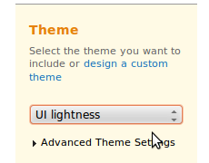
Le code jQuery fonctionne de manière complémentaire avec un fichier CSS, qui va définir le style des différentes interfaces. Vous pouvez voir dans le menu de droite une petite section vous permettant de choisir votre thème.
Par défaut, il en existe déjà une belle flopée, mais si aucun ne vous plaît, vous pouvez customiser vous-même vos interfaces utilisateur, grâce à un outil nommé Themeroller. Son fonctionnement est vraiment très intuitif, vous pourrez le dégoter sur cette page.
Version du plugin
En-dessous du choix du thème se trouve le choix de la version du plugin. Ne vous posez pas de question, et ne touchez à rien, vous téléchargerez automatiquement la version la plus récente et la plus stable du moment. Actuellement, la version est la 1.8.21, mais il se peut que l'on vous en propose une plus récente.
Cliquez ensuite sur le bouton Download, et patientez ! :-°
Architecture des fichiers
Une fois l'archive entre vos mains, vous pouvez la décompresser. À l'intérieur, vous trouverez plusieurs dossiers, dont l'utilité est variable : certains sont indispensables au bon fonctionnement de votre système, alors que d'autres peuvent tout bonnement être supprimés. Voyons ce qu'il en est grâce à un petit schéma :
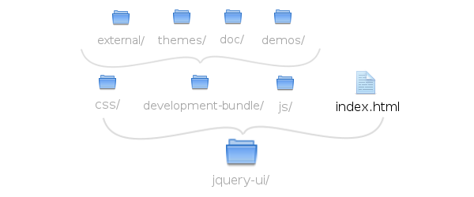
Le dossier js/ contient les frameworks jQuery et jQuery UI ; leur inclusion pouvant se faire par des serveurs externes, nous ne les utiliserons pas dans ce chapitre. Vous pouvez donc également supprimer le dossier. De la même manière, le dossier css/ nous indiffère, étant donné que son contenu est retrouvable dans development-bundle/themes/.
Au final, vous pouvez vous retrouver avec seulement le dossier development-bundle/, qui est le seul réellement indispensable. Pour alléger un peu ce dossier et s'y retrouver de manière plus efficace, vous pouvez supprimer les dossiers demos/ et doc/, qui contiennent des informations retrouvables facilement sur le site officiel.
Inclusion du plugin
Comme vous vous en doutez sûrement, avant d'inclure jQuery UI, il faut également inclure jQuery. En effet, c'est l'ordre logique des choses : jQuery UI a besoin de jQuery pour fonctionner, ce dernier doit donc être inclus en premier !
Rappelez-vous que les serveurs de Google permettent un gain de performance ; la firme propose, en plus de jQuery, le plugin jQuery UI ! Si vous n'avez pas fait une composition d'interfaces utilisateur particulière, vous pouvez très bien utiliser le fichier du célèbre moteur de recherche. Vous devrez également inclure le fichier CSS relatif à votre thème.
Les interfaces utilisateur offrant le plus de possibilités sont sans doute les interactions. Ces actions permettent à l'usager d'agir directement sur la page pour obtenir différents résultats. Elles sont très utilisées sur les systèmes d'exploitation (Windows, Linux, MacOS...), notamment, vous devez donc déjà les avoir expérimentées : glisser, déposer, redimensionner, sélectionner et ranger.
À chaque action sa méthode, en voici la liste :
glisser : draggable() ;
déposer : droppable() ;
redimensionner : resizable() ;
sélectionner : selectable() ;
ranger : sortable().
Chaque méthode doit agir sur un élément, qu'elle va se charger de déformer à sa guise. Heureusement, il existe des règles permettant de ne pas faire n'importe quoi avec ces interactions, ainsi que des paramètres offrant la possibilité de restreindre certaines actions à l'utilisateur.
Nous n'allons pas vous lister chaque propriété ; ce serait vraiment trop long, et il faudrait un tutoriel entier pour vous apprendre toutes les subtilités du plugin jQuery UI. Le chapitre précédent vous a permis d'apprendre à lire la documentation. Nous vous invitions à consulter celle de jQuery UI, trouvable ici, si vous recherchez une certaine propriété.
Précisions sur le Drag'n'Drop
Vous avez sûrement déjà entendu parlé du Drag'n'Drop . C'est une action de plus en plus répandue sur les sites web, car elle permet de glisser un élément dans un autre. Cela ne vous dit rien ? Pourtant, vous avez forcément déjà utilisé le Drag'n'Drop, notamment sur votre système d'exploitation, par exemple lorsque vous déplacez un fichier manuellement ! jQuery UI met en place, pour sa part, un tel système, grâce à deux méthodes complémentaires : draggable() et droppable().
Vous devez, avec la première, instancier un objet pouvant être déplacé, puis, avec la seconde, définir une zone de dépôt.
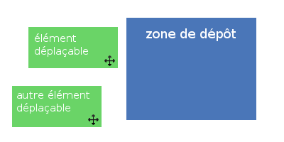
Les widgets
Les widgets, contrairement aux interactions, ont une fonction bien définie. Il doivent instancier quelque chose de précis, tel qu'une barre de progression ou une boîte modale. Ils sont actuellement au nombre de huit :
Accordion, qui permet de réaliser un menu en accordéon (les sections sont rétractables) ;
Autocomplete, dont le rôle est de mettre en place un système d'auto-complétion (exemple sur le moteur Google) ;
Button, qui va transformer vos éléments de formulaire afin de les rendre plus intuitifs et esthétiques ;
Datepicker, un widget permettant de créer un mini-calendrier dans un formulaire ;
Dialog, qui met en place une boîte modale (type alert() personnalisé) ;
Progressbar, une simple barre de progression ;
Slider, un gestionnaire de barres de réglage ;
et enfin Tabs, qui permet de mettre en place un système d'onglets.
Encore une fois, il vous suffit d'instancier les méthodes correspondantes pour utiliser ces widgets. Nous vous redirigeons vers la documentation pour plus de précisions, avec exemples à l'appui ! :)
Voilà pour cette petite présentation de jQuery UI !
Nous n'avons pas parlé des effets additionnels du plugin, pour la simple et bonne raison qu'ils s'utilisent de la même façon que les effets natifs, tels que fadeIn()/fadeOut(). La documentation est vraiment bien faite et bien fournie, vous trouverez tout ce dont vous avez besoin pour utiliser jQuery UI. Si vraiment vous souhaitez aller plus loin, nous vous encourageons à aller lire le tutoriel de jQuery UI sur le Site du Zéro !
Vous pouvez dès à présent passer au chapitre suivant, qui présentera le second plugin officiel : jQuery Mobile.
Apparu il y a peu de temps, jQuery Mobile est un nouveau framework qui fait de plus en plus parler de lui, à cette époque où la navigation mobile croît de façon hallucinante. Cela permet aux développeurs de réaliser de véritables applications pour leur(s) site(s) web, et d'offrir une expérience utilisateur très sophistiquée sur presque toutes les plateformes. Comme d'habitude, le mot d'ordre est « simplicité », et nous allons voir qu'il est vraiment très aisé de mettre en place une version mobile de son site.
À l'heure actuelle, les versions mobiles des sites web se développent très rapidement et son de plus en plus complètes. Mais pourquoi cela rencontre-t-il un tel succès ? Comment faire la même chose ? Est-ce réservé à une élite ? Enfin, quelles sont les plateformes les plus enclines à supporter ces applications ? Nous allons répondre à chacune de ces questions, et plus si affinités. :lol:
L'intérêt d'une version mobile
La première question que l'on pourrait se poser est : « à quoi bon mettre en place une version mobile de mon site ? ». En effet, cela semble peu intéressant, quand on pense que les téléphones portables et autres plateformes du genre n'ont pas pour utilité première de naviguer sur Internet. À cette opinion nous répondrons : monumentale erreur !
La navigation sur mobiles est de plus en plus courante, à l'heure où les smartphones se développent et deviennent de plus en plus puissants. Car sachez-le : à l'époque actuelle, 19.4 millions de français consultent le web depuis leurs téléphones portables. Il est donc primordial d'avoir des sites adaptés, pour prévenir la navigation mobile et surtout la rendre attrayante pour le visiteur, surtout quand on considère que 40% des « mobinautes » se dirigent vers un site concurrent après une mauvaise expérience.
C'est ici qu'intervient jQuery Mobile.
Plateformes supportées par le framework
Le marché des smartphones est absolument immense en 2012, on estime d'ailleurs le chiffre d'affaire total à plusieurs milliards de dollars. En conséquence, on trouve énormément de différentes sortes de téléphones, et chacun possède ses spécificités. Exemple : le célèbre iPhone possède son système d'exploitation attitré, l'iOS, ainsi que son navigateur, Safari, alors que les téléphones de Google tournent sur Android.
Nous devons donc régler un soucis de compatibilité, et nous assurer que notre site s'affiche correctement sur tous les navigateurs mobiles du marché.
Nous n'allons pas utiliser jQuery pour rien : le framework mobile intègre une compatibilité ahurissante des différentes plateformes actuellement en vente. En voici un petit extrait pour vous faire comprendre :
Apple iOS 3.2-5.0
Android 2.1-2.3
Android 3.1
Android 4.0
Windows Phone 7-7.5
Blackberry 6.0
Blackberry 7
...
Vous pouvez retrouver la liste complète des systèmes d'exploitation et des plateformes supportées par jQuery Mobile sur cette page. Vous verrez d'ailleurs que trois groupes existent : le A, le B, et le C. Le premier définit les plateformes parfaitement bien supportées ; le second, celles qui ne prennent pas en charge la navigation AJAX ; et le troisième, celles qui ne peuvent pas être dynamisées correctement. La liste est vraiment très courte dans le groupe C, ce qui montre bien qu'en utilisant ce framework, vous pourrez presque tout couvrir !
Mettre en place jQuery Mobile
Maintenant que nous avons fait le point et que vous connaissez l'importance de la navigation mobile à l'heure actuelle, nous allons voir comment offrir un service pareil à nos visiteurs.
On doit d'abord s'assurer que la version mobile du site ne s'affiche que pour la navigation correspondante ; les visiteurs navigant sur leur ordinateur ne veulent sûrement accéder qu'à la version classique. Il vous faut donc créer un nouveau fichier, différent de votre index, vers lequel on sera redirigé automatiquement si le site détecte une navigation mobile. Pour réaliser une telle redirection, deux solutions :
le faire par fichier .htaccess ;
le faire en PHP.
Nous allons voir comment réaliser ces deux types de redirection.
Redirection par htaccess
Ce type de redirection est basé sur les « user-agents » récupérés avec Apache. Ce sont simplement les informations que chaque navigateur renvoie, et qui permettent de déterminer plusieurs choses, comme son nom. Nous allons donc les utiliser pour déterminer si nous devons rediriger le visiteur ou pas. Inscrivez simplement les lignes suivantes dans un fichier appelé .htaccess :
La première ligne lit le user-agent, et s'il contient une information relative aux mots-clés indiqués (ici le nom de certaines plateformes mobiles), on passe à la seconde ligne, qui se charge de diriger le visiteur sur le fichier adéquat.
Redirection avec PHP
Cette méthode est peut-être plus intéressante dans le sens où vous pourrez contrôler la redirection : vous aurez ainsi la possibilité d'ajouter un lien permettant au visiteur de revenir à la version classique, ou de continuer vers la version mobile. On va se baser ici, une fois encore, sur les user-agents, que l'on récupérera avec une variable superglobale, qui est $_SERVER['HTTP_USER_AGENT']. Il suffira de chercher une chaîne de caractères précise à l'intérieur pour déterminer sur quel smartphone navigue l'internaute, à l'aide la fonction strpos() qui retourne la position numérique de la première occurrence trouvée.
<?php
// on cherche un user-agent apparenté à une plateforme mobile dans la variable
$iphone = strpos($_SERVER['HTTP_USER_AGENT'], 'iPhone');
$ipad = strpos($_SERVER['HTTP_USER_AGENT'], 'iPad');
$android = strpos($_SERVER['HTTP_USER_AGENT'], 'Android');
$blackberry = strpos($_SERVER['HTTP_USER_AGENT'], 'BlackBerry');
// puis on détermine si une chaîne de caractères a été trouvée
if($iphone || $ipad || $android || $blackberry > -1){
header('Location: http://www.votre-site.com/votre-fichier-mobile.html'); // si c'est le cas, on redirige
die; // puis on arrête le chargement de la page actuelle
}
?>
Inclusion du framework
Une fois la détection du navigateur réglée, vous pouvez vous employer à travailler avec jQuery Mobile. Il faut tout d'abord l'inclure dans votre page, soit un utilisant un CDN (comme Google ou jQuery.com lui-même), soit en le chargeant depuis votre serveur. Sans oublier le fichier CSS ! :)
jQuery Mobile possède un fonctionnement un peu particulier. En effet, il est possible d'avoir plusieurs pages dans un seul fichier : c'est le multi-page. Cela est rendu possible grâce aux nouveaux attributs arrivés avec HTML5, les fameux data-*. Ils permettent de passer des valeurs personnalisées très proprement, et sont 100% valides.
Initialiser des pages
En donnant le rôle de page à un élément grâce à l'attribut data-role, vous l'isolez et lui donnez une importance qui permettra au navigateur de le considérer comme un fichier à part entière. Il suffit alors de répéter l'opération pour avoir plusieurs pages au sein de votre fichier. Exemple :
De même, vous pouvez alors structurer chaque page comme vous le feriez de manière classique, c'est-à-dire avec une en-tête, du contenu, et un pied de page. Encore une fois, les attributs data-*, et plus précisément data-role, vont nous y aider :
Ne crééez tout de même pas trop de pages au sein d'un seul fichier, car il se peut que vous soyez victime d'une perte de performance si le fichier devient trop lourd.
Lier les pages entre elles
En utilisant le multi-pages, vous devez vous demander comment lier ces pages entre elles si elles cohabitent dans un seul et même fichier. La solution réside dans l'utilisation d'ancres HTML. Exemple :
<div data-role="page" id="page1">
<div data-role="content">
<a href="#page2">Aller à la page 2 -></a>
</div>
</div>
<div data-role="page" id="page2">
<div data-role="content">
<a href="#page1">Aller à la page 1 -></a>
</div>
</div>
Mise en place d'un thème
Comme jQuery UI, jQuery Mobile embarque un framework CSS qui lui est propre, et qui lui permet de styliser ses éléments. Plusieurs thèmes par défaut existe déjà, et ils sont au nombre de cinq : « a », « b », « c », « d », et « e ». Ils sont très facilement utilisables grâce à l'attribut data-theme, que vous pouvez mettre sur n'importe quel élément. En conséquence, il est possible de mélanger les styles des thèmes :
Ce code donnera le thème « a » à la page, mais l'en-tête et le pied de page auront le thème « b ». Vous pouvez très bien réaliser votre propre thème grâce au Themeroller.
Éléments de mise en page
Concrètement, vous pouvez à peu près tout faire avec jQuery Mobile : ajouter des listes, mettre des boutons, des formulaires, etc. Tout passe par les attributs data-*, pour savoir comment réaliser quelque chose, nous vous invitons à vous rendre sur la documentation qui indique quelle valeur donner à data-role pour chaque élément. Exemple pour une liste avec icônes :
La plateforme étant bien différente d'un ordinateur, vous vous doutez que les évènements ne sont pas les mêmes que pour jQuery. L'utilisateur sera dans l'incapacité de cliquer ou de taper sur un clavier, étant donner que les smartphones sont par définition tactiles. Les laboratoires de jQuery ont bien sûr trouvé une parade, et ont mis en place de nouveaux évènements spécialement adaptés pour les mobiles.
Il faut alors considérer le clic comme l'action de toucher. Quant au clavier, la plupart des smartphones intègrent un clavier qui s'affiche seulement lorsque c'est nécessaire. L'accès aux évènements dépendants du clavier ne changent donc pas !
Voici la liste des évènements relatifs au touché :
Nom
Action
tap
un touché sur la page
taphold
un touché maintenu sur la page
swipe
un touché maintenu avec mouvement du doigt
swipeleft
un touché maintenu avec mouvement vers la gauche
swiperight
un touché maintenu avec mouvement vers la droite
scrollstart
lorsqu'on commence à « scroller » (utiliser l’ascenseur de la page)
scrollstop
lorsqu'on arrête de « scroller »
Il existe également orientationchange, qui va se déclencher lorsqu'on incline le téléphone (passage du mode portrait au mode paysage et vice versa).
Vous pourrez travailler avec l'état des pages, car il existe une foule d'évènements qui en sont dépendants. Par exemple, au chargement d'une page, il est commun d'utiliser pageload. Vous pouvez retrouver la liste complète ici.
Les méthodes jQuery Mobile
Le framework possède des propriétés et des méthodes qui lui sont propres, accessibles avec l'objet $.mobile. Vous pourrez alors bénéficier de nouveaux contrôles, dont nous allons voir les principaux.
Contrôler la transition d'une page
Les pages étant chargées en AJAX, le côté esthétique a été mis en avant. Vous pouvez alors noter un effet lorsque vous naviguez de page en page. Cet effet peut être personnalisé au moyen de la propriété defaultPageTransition ; il suffit alors de lui passer pour valeur le nom d'un effet. Voici les plus connus et utilisés :
fade, la valeur par défaut, qui affiche le page avec un fondu ;
slide, qui fait glisser la page suivante par dessus la page actuelle ;
flip, qui va retourner la page et afficher la suivante.
$.mobile.defaultPageTransition = "flip";
Veillez cependant à ne pas trop en abuser, car le navigateur d'Android, qui est très utilisé, ne supporte pas bien les effets de transition. L'autre solution consiste à les désactiver pour ce navigateur et seulement lui, au moyen d'une petite astuce basée, encore une fois, sur les user-agents :
var ua = navigator.userAgent.toLowerCase(); // on récupère le user-agent
if(ua.indexOf("android") > -1){ // si on trouve un user-agent Android
$.mobile.maxTransitionWidth = 1; // alors on désactive les transitions
}
Envoyer une requête AJAX au changement de page
Le framework mobile embarque une méthode qui permet de fusionner deux choses : une transition, et une requête AJAX. Cela permet un gain de performance, mais rend aussi le code bien plus propre et lisible. Il suffit alors d'utiliser changePage(), avec quelques arguments :
la cible, simplement l'URL de la page à qui transmettre des données ;
et un objet, qui prend en charge la requête AJAX au moyen de propriétés classiques comme le type, ou les données à envoyer.
$.mobile.changePage('sendmail.php', {
type : 'POST',
data : 'sujet=' + sujet + '&contenu=' + contenu
});
Précharger une page
Pour un confort absolument optimal, vous pouvez précharger les pages grâce à loadPage(). Cela permet de mettre la page suivante en attente, et le visiteur n'aura pas à attendre son chargement pour y accéder. C'est donc un gain considérable pour l'expérience utilisateur.
Vous avez juste à indiquer quelle page doit être préchargée :
$.mobile.loadPage('next.html');
Vous avez à présent les bases de la création de version mobile ! Rien ne vous empêche de pousser votre curiosité et d'aller lire la très bonne documentation au sujet de jQuery Mobile.
Nous en avons maintenant terminé avec l'étude des plugins et frameworks officiels de la jQuery Foundation. Les chapitres suivants viseront à parfaire votre apprentissage avec la découverte de plugins très célèbres dans le monde du développement de jQuery !
Né il y a peu de temps, ce plugin va vous permettre de réaliser vos propres jeux vidéos en jQuery ! Il a été créé par un développeur suisse, dont le souhait est de rendre la création de jeux vidéos sur navigateurs plus facile. En effet, vous n'êtes pas sans savoir que les nouvelles normes HTML5 et CSS3 permettent de nouvelles choses en terme d'expérience utilisateur. Les jeux vidéos sur navigateur ont vu le jour il y a déjà quelques années, mais leur création s'est vue grandement facilitée par l'arrivée de nouvelles technologies.
Le plugin gameQuery permet donc de réaliser des jeux vidéos. Comme vous vous en doutez, il y a des restrictions et surtout des limites : ne vous attendez pas à réaliser le nouveau Starcraft, ni un jeu révolutionnaire en 3D ! Avoir les pieds sur Terre est primordial lors de la conception d'un jeu, donc nous voulons être clairs : vous ne pourrez faire que de la 2D.
La 2D, une histoire d'animation
Le célèbre Super Marios Bros. Le concept de 2D (deux dimensions) est apparu dans les jeux vidéos à la création de ceux-ci ; en effet, ce domaine a subi des évolutions au cours du temps pour devenir ce qu'il est aujourd'hui. Ainsi naissent les jeux vidéos dans les années 1950. À cette époque, ils n'étaient pas très évolués, du fait des restrictions techniques. Cependant, ils ont rapidement évolués, jusqu'à devenir un véritable business : on notera notamment l'arrivée des personnages de Mario, Sonic, ou encore Kirby, qui restent encore des protagonistes très joués.
Le fonctionnement de jeux vidéos en deux dimensions est toujours le même, que ce soit dans Super Mario Bros. ou Sonic The Hedgehog. En effet, les animations diverses se font image par image, que l'on appelle des sprites. Chaque personnage possède une panoplie de sprites définissant ses mouvements, ce groupe d'images étant appelé spritesheet (feuille de sprites).
Grâce à une fonction spécifique, ces sprites défilent un à un. On estime qu'une animation est fluide à partir de 24 images par seconde, chaque spritesheet sera donc composée d'une vingtaine d'images environ. De même, l'écran est décomposé en plusieurs layers (calques), qui représentent chacun un plan différent : l'arrière-plan, qui définira le décor, le moyen-plan, et parfois l'avant-plan. Nous verrons que gameQuery gère ces systèmes de manière très simple et intuitive !
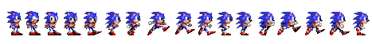
Extrait d'une spritesheet du personnage de Sonic
La 2D avec gameQuery
Parlons jQuery, à présent que les bases de l'animation 2D ont été posées. Le plugin gameQuery ne gère pas n'importe comment le jeu vidéo, il faut donc respecter certaines règles. Nous allons voir quelques autres mots de vocabulaire ici, et définir exactement la méthode de travail du plugin. :)
Organisation de l'écran de jeu
L'écran du jeu, aussi appelé game screen, est en fait un ensemble d'éléments graphiques superposés (rappelez-vous le système de layers, avec les différents plans). Le plugin gère cet écran comme une boîte, dans laquelle on range plusieurs images, constituant notre jeu. Cette « boîte » est appelée playground, et chaque élément graphique est un sprite. Dans ce playground, chaque sprite va constituer un calque ; les habitués de logiciels de graphisme comme Photoshop ou The Gimp connaissent bien le principe.
Mais que se passe-t-il si on veut avoir plusieurs sprites sur le même plan ?
Dans un cas comme celui-là, il faut utiliser les groupes. Un groupe peut contenir un ou plusieurs sprites, et fera office de calque. Pour plus de clarté, nous proposons un petit schéma, inspiré de la documentation du plugin :
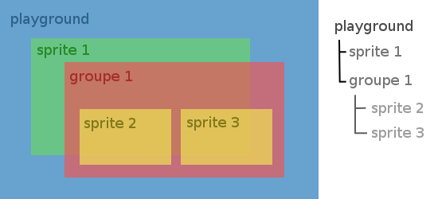
Vous pouvez constater qu'un groupe de sprites est considéré comme le parent de ceux-ci : si l'on déplace le groupe, les images qu'il contient seront déplacées ; si on le supprime, les sprites enfants seront également supprimés. On retrouve donc ici le principe de la parenté, et il est possible d'imbriquer des groupes dans des groupes, ce qui offre un vaste contrôle sur votre jeu !
Et concrètement, comment accéder à tous ces éléments ?
Effectivement, la théorie est passionnante, mais vous ne savez toujours pas ce que symbolisent ces concepts. La réponse est pourtant d'une simplicité enfantine ou presque : jQuery travaillant avec le DOM, gameQuery définit chaque sprite et chaque groupe comme des éléments HTML ! Ils seront donc accessibles très simplement, grâce aux sélecteurs, ce qui nous permettra d'agir dessus avec des méthodes spécifiques.
La partie théorique est maintenant terminée, et nous allons enfin commencer à utiliser gameQuery pour réaliser dans un premier temps une ou deux animations plutôt simples. Tout d'abord, il va falloir inclure le plugin dans la page pour l'utiliser, juste après jQuery. Notre code viendra se placer en toute fin, et il définira les animations, les collisions, et tout ce qui est apparenté à un jeu vidéo.
La première chose à faire est de mettre en place le playground, la fameuse boîte qui va contenir les éléments graphiques de notre jeu. Il se met en place grâce à une méthode, playground(), que l'on devra appeler sur un simple bloc div :
<div id="playground">
<!-- Tous les éléments du jeu viendront automatiquement se placer ici -->
</div>
var $playground = $('#playground'); // on entre l'objet jQuery dans une variable pour éviter de l'appeler plusieurs fois
$playground.playground();
À partir de là, notre playground est presque correctement instancié. En effet, il faut également lui donner une taille, pour savoir où se situent les limites graphiques du jeu. Cela se fait par un objet, que l'on passera en argument dans la méthode :
var $playground = $('#playground'), // on entre l'objet jQuery dans une variable pour éviter de l'appeler plusieurs fois
h = 300,
w = 800; // on définit les dimensions du playground
$playground.playground({
height : h,
width : w // puis on passe ces variables en paramètre
});
Tout est correctement lancé, on va donc pouvoir commencer à « ranger » les éléments graphiques dans notre playground !
Le cadre de développement du jeu étant posé, nous allons nous concentrer sur quelque chose de plus concret. Pour garder une certaine logique, l'arrière-plan va être instancier en premier (nous parlerons également de background). La plupart des jeux vidéos en 2D (hormis les RPG) possèdent un arrière-plan qui va s'animer, soit automatiquement, soit lors du déplacement du personnage.
Pour garder un effet réaliste, l'arrière-plan va se diviser en plusieurs images, qui vont bouger à vitesse différente suivant leur position. Imaginez cela dans la réalité : lorsque vous vous déplacez en voiture, par exemple, l'horizon défile lentement devant vos yeux, du fait de sa position éloignée. Inversement, si vous regardez la route, vous la verrez bouger très vite ! C'est ce que l'on nomme l'effet « parallaxe ». Cet effet est de plus en plus utilisé sur le web pour faire de jolies animations, et nous allons nous en servir pour notre background !
Instancier les sprites d'arrière-plan
Avant de réaliser l'animation en elle-même, il va falloir charger nos différentes images constituant l'arrière-plan. Nous allons partir sur une base de trois images, ce qui est largement suffisant dans un premier temps, pour un petit jeu simple.
Définir le groupe
Nous avons besoin de créer un arrière-plan. Comme il va se diviser en plusieurs sprites, il sera sous forme de groupe. Ajoutons donc un groupe à notre playground :
$.playground() // on accède au playground
.addGroup('background', { height : h, width : w }); // puis on ajoute le groupe "background"
Analysons les nouveautés de ce petit code. Nous avons définit le playground, comme convenu, puis nous avons utilisé la méthode addGroup() pour lui ajouter un groupe. Cette fonction prend deux arguments : le nom du groupe, qui nous permettra d'y accéder avec un sélecteur, et les dimensions (la plupart du temps, vous n'aurez qu'à indiquer celles du playground).
En général, un jeu n'est pas composé que d'un arrière-plan (on a bien dit « en général » :p ). Il vous faudra alors ajouter plusieurs groupes, chacun ayant une tâche spécifique : initialiser un personnage, un arrière-plan, une arme, un véhicule, etc. La subtilité dans ce cas-là, c'est que l'on devra revenir à l'objet premier, ici notre playground. Eh oui ! Souvenez-vous que le chaînage de méthodes est bien pratique, mais que celles-ci s'exécute à la suite ; chaque méthode va donc se lancer sur la dernière. Dans notre cas, cela pose problème : nous voulons ajouter des groupes au playground, et seulement lui. Il faudra donc revenir à cet objet à chaque ajout, grâce à la méthode end() :
// Exemple d'ajout de plusieurs groupes à la suite
$.playground()
.addGroup('background', { height : h, width : w }) // ajout du groupe "background"
.end() // on revient à l'objet playground
.addGroup('player', { height : h, width : w }); // ajout du groupe "player"
Charger les sprites dans le groupe
Le groupe étant correctement créé, nous pouvons à présent nous employer à lui ajouter des sprites, car c'est quand même le but de cette manipulation. :-° Chaque image devra être instanciée grâce à l'objet Animation de gameQuery. Nous allons donc créer une instance pour chaque sprite (trois, dans notre exemple), en donnant l'URL menant à l'image en paramètre de l'objet :
// première instance
var image1 = new $.gameQuery.Animation({
imageURL : "background1.png"
});
// seconde instance
var image2 = new $.gameQuery.Animation({
imageURL : "background2.png"
});
// troisième instance
var image3 = new $.gameQuery.Animation({
imageURL : "background3.png"
});
La suite est vraiment très simple : il faut utiliser la méthode addSprite() sur notre groupe pour ajouter chaque image dans celui-ci ! Cette fonction prend, une fois encore, deux arguments :
le nom du sprite, même principe que pour le groupe (permet d'accéder à l'objet par l'identifiant) ;
un objet, qui contiendra plusieurs paramètres :
animation : l'image devant être animée, on donnera ici l'objet correspondant et précédemment instancié ;
height : la hauteur de l'image (facultatif : 32 pixels par défaut) ;
width : la largeur de l'image (facultatif : 32 pixels par défaut) ;
posx : la position sur l'axe x de l'image (facultatif : 0 par défaut) ;
posy : la position sur l'axe y de l'image (facultatif : 0 par défaut).
Et pour accéder au groupe précédemment créé, il suffit de passer par son identifiant, qui est le même que son nom :
$('#background') // on accède à notre groupe
.addSprite('image1', { // on ajoute un sprite
animation : image1, // premier objet instancié
height : h,
width : w,
// nous créons ici un arrière-plan, les dimensions sont donc égales à celles du playground
})
.addSprite('image2', { // on répète l'opération
animation : image2,
height : h,
width : w
})
.addSprite('image3', { // on répète l'opération
animation : image3,
height : h,
width : w
});
Animons le tout !
Tout est correctement placé et instancié, nous devons donc nous occuper de ce qui nous intéresse vraiment : l'animation ! Avant toute chose, vous devez savoir quand l'animation doit se déclencher : est-ce qu'elle est continue ? Ou doit-elle se lancer seulement lors d'une action spécifique, comme le déplacement du personnage ?
Pour plus de simplicité, et comme nous n'avons encore pas vu la création d'un personnage, nous allons lancer l'animation dès le chargement des différents éléments graphiques.
La méthode registerCallback()
Pour animer ses éléments, gameQuery possède une méthode quelque peu similaire à la fonction native setInterval() de javaScript. Il s'agit de registerCallback(), qui va lancer une ou plusieurs fonctions tous les intervalles de temps (que l'on donnera en millisecondes, comme d'habitude). Dans notre cas, il s'agit de faire défiler nos images de droite à gauche, à vitesse différente.
Supposons donc que la première image soit celle positionnée au fond, la deuxième est celle du milieu, et la dernière se trouve au premier plan. En modifiant la propriété left en CSS de chaque image, nous pourrons obtenir notre effet de défilement.
$.playground()
.registerCallback(function(){
var left = parseInt( $("#image1").css("left") ) - 1; // l'image de fond se déplace lentement, on la déplace donc de 1 pixel à chaque intervalle
$("#image1").css("left", left);
left = parseInt( $("#image2").css("left") ) - 3; // l'image du milieu se déplace plus rapidement, on la déplace de 3 pixels à chaque intervalle
$("#image2").css("left", left);
left = parseInt( $("#image3").css("left") ) - 5; // l'image de devant se déplace rapidement, on la déplace de 5 pixels à chaque intervalle
$("#image3").css("left", left);
}, 30); // enfin, on définit l'intervalle de temps à 30ms
Vous devriez noter un problème si vous essayez le code ci-dessus. En effet, une fois que les images sont hors du playground, on ne voit plus rien ! Il faut donc réinitialiser la position horizontale si l'image se trouve entièrement hors du game screen :
$.playground()
.registerCallback(function(){
var left = parseInt( $("#image1").css("left") ) - 1; // l'image de fond se déplace lentement, on la déplace donc de 1 pixel à chaque intervalle
if(left < 0 - w) left = w;
$("#image1").css("left", left);
left = parseInt( $("#image2").css("left") ) - 3; // l'image du milieu se déplace plus rapidement, on la déplace de 3 pixels à chaque intervalle
if(left < 0 - w) left = w;
$("#image2").css("left", left);
left = parseInt( $("#image3").css("left") ) - 5; // l'image de devant se déplace rapidement, on la déplace de 5 pixels à chaque intervalle
if(left < 0 - w) left = w;
$("#image3").css("left", left);
}, 30); // enfin, on définit l'intervalle de temps à 30ms
Lancer le jeu
Oh l'arnaque ! On ne voit rien du tout à l'écran, le code ne marche pas ? :(
Peut-être que oui... et peut-être que vous n'avez tout simplement pas lancé le jeu ! Une fois toutes nos manipulations effectuées, il faut utiliser la méthode startGame() pour lancer le jeu dans le playground. Cela permet par exemple de ne débuter que lorsque le joueur a appuyé sur un bouton. Quoi qu'il en soit, n'oubliez pas cette fonction, sinon vous ne verrez rien :
Que de chemin déjà parcouru ! Vous connaissez désormais les bases fondamentales de gameQuery. Seulement, il reste encore quelques méthodes à apprendre absolument, car on ne peut pas dire que ce soit très dynamique pour le moment. L'animation que nous venons de réaliser est correcte, mais un peu bricolée, ce n'est pas du tout comme cela que l'on doit procéder pour animer des mouvements de personnage, par exemple.
Les images d'arrière-plan sont en général statiques, il suffit donc de les faire défiler en CSS. Un personnage est, comme nous l'avons vu, basé le plus souvent sur une spritesheet, qui va définir les différentes positions constituant un mouvement animé. C'est à partir de cette spritesheet que le personnage va pouvoir être créé, et c'est également elle qui sera animée, grâce à une méthode spécifique.
Instance du mouvement animé
Une séance de réflexion s'impose : quels mouvements devra-t-il être capable de faire ? Pour illustrer nos explications, nous utiliserons un mouvement basique, la course vers la droite.
Comme pour les différentes images composant l'arrière-plan, nous allons devoir instancier les différentes spritesheets que nous voulons utiliser. Il suffit d'utiliser la même classe que tout à l'heure.
var course = new $.gameQuery.Animation({
imageURL : 'course.png'
});
Seulement, comme nous venons de le dire, nous voulons réaliser une animation à partir de cette image. Il va donc falloir étoffer quelque peu les paramètres de notre objet, en spécifiant :
numberOfFrame : le nombre de frames à utiliser ;
delta : la hauteur ou la largeur d'une frame ;
rate : l'intervalle de temps (en millisecondes) entre deux frames ;
et type : l'orientation de la spritesheet (horizontale ou verticale).
Peut-être êtes-vous un peu perdu parmi tous ces termes. Nous vous proposons un nouveau schéma visant à éclairer ces explications :
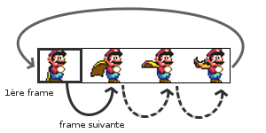
La spritesheet est ici horizontale, tout simplement parce que l'animation va se dérouler vers la droite, et non vers le bas. Elle est également composée de 4 frames. En la prenant pour exemple, nous pourrions instancier une nouvelle animation :
var repos = new $.gameQuery.Animation({
imageURL : 'repos.png',
numberOfFrame : 4, // nous avons ici 4 frames
delta : 40, // on définit la largeur d'une frame à 40px
rate : 100, // 100ms séparent chaque frame
type : $.gameQuery.ANIMATION_HORIZONTAL // on passe une constante en valeur ; si l'image était verticale, on aurait donné $.gameQuery.ANIMATION_VERTICAL
});
Vous savez maintenant instancier une animation par spritesheet !
Lancer l'animation
Il s'agit maintenant de lancer l'animation grâce à notre objet. Souvenez-vous qu'il faut ajouter un sprite au playground pour l'afficher et l'exploiter. Vous allez donc devoir utiliser la méthode que nous avons déjà vue : addSprite().
// ...
// nous venons d'instancier une nouvelle animation
$.playground()
.addSprite('repos', {
animation : repos, // on lance l'animation
width : 40,
height : 50 // on définit les dimensions de notre personnage
});
Il ne vous reste plus qu'à lancer le jeu et... miracle ! Notre personnage s'anime ! :D
Contrôler le lancement
Tout cela, c'est très bien, seulement... L'animation s'exécute dès la chargement de la page. Or, dans un jeu, le personnage ne bouge que lorsqu'on lui ordonne, généralement. Il va donc nous falloir contrôler le lancement de nos animations, au moyen de la méthode setAnimation(). Elle est très simple à utiliser : il suffit de la lancer sur le sprite correspondant, que l'on a créé dans le playground, en lui indiquant en argument l'animation qu'elle doit charger. Exemple :
// nouvelle instance
var repos = new $.gameQuery.Animation({
imageURL : 'repos.png',
numberOfFrame : 4,
delta : 40,
rate : 100,
type : $.gameQuery.ANIMATION_HORIZONTAL
});
// on ajoute un sprite au playground, sans lancer d'animation
$.playground()
.addSprite('repos', {
width : 40,
height : 50
});
// puis on lance l'animation correspondante au moyen de la méthode adéquate
$('#repos').setAnimation(repos);
// enfin, on oublie pas de lancer le jeu
$.playground().startGame();
Un jeu vidéo est le plus souvent (pour ne pas dire tout le temps) réalisé grâce à la programmation orientée objet, qui permet de garder un code clair, propre et rangé. Nous allons donc revoir ensemble les bases de la POO en JavaScript pour voir comment l'utiliser avec gameQuery, et ainsi partir avec une certaine logique de création indispensable à la conception d'un jeu. :)
Rappel sur les objets JavaScript
Ce que l'on appelle un objet en POO est une instanciation d'une classe. Ainsi, lorsqu'on réalise une instance, on créé un nouvel objet. Cette instance se fait grâce au mot-clé new :
var Objet = new Classe(); // création d'un nouvel objet
var Objet2 = new Classe(argument); // création d'un nouvel objet avec spécification d'un argument
Le JavaScript est un langage un peu particulier. Ainsi, si l'on veut employer le vocabulaire exact, un objet sera une instance d'une fonction, et non d'une vraie classe que l'on pourrait rencontrer en PHP par exemple. On peut donc créer très facilement une nouvelle classe en JavaScript :
function Classe(argument){ // nouvelle classe
this.nom = argument; // nouvelle propriété
this.afficher = function(prenom){ // nouvelle méthode
alert(prenom);
};
}
Si vous n'avez jamais rencontré les objets et que vous ne connaissez pas du tout leur principe, nous vous invitons à aller lire cet excellent tutoriel sur JavaScript, et plus particulièrement ses objets.
Définir les classes
Lorsque vous vous lancez dans la création d'un jeu vidéo, il vous faut tout d'abord réfléchir à quelques petites choses : combien de personnage y aura-t-il ? Combien d'ennemis devrai-je créer ? Quelles actions seront possibles ? Ceci n'est qu'un aperçu des nombreuses questions que vous devez vous poser.
Une fois cette étape terminée, il vous faut définir les différentes classes qui vont vous permettre de gérer votre jeu. Ainsi, vous aurez une classe pour le joueur, une pour les ennemis, etc. Vous devrez aussi utiliser un concept très populaire dans le milieu de la POO : l'héritage. En JavaScript, c'est là encore un peu particulier, car on doit définir un prototype héritant d'une classe mère pour créer une nouvelle classe fille.
Petit rappel sur l'héritage
L'héritage est un concept très puissant qui mérite en général un chapitre entier. Seulement, nous considérons que vous avez des notions de JavaScript, donc nous allons être bref pour rappeler en quoi consiste ce système. Concrètement, en POO, l'héritage permet de créer une classe (la fille) à partir d'une autre classe (la mère). En faisant cela, la fille peut utiliser tous les attributs et toutes les méthodes de la mère car elle en hérite ! Attention, le contraire n'est pas vrai : une classe mère ne peut pas utiliser les attributs et méthodes d'une de ses filles.
Grâce à ce concept, il est possible d'avoir plusieurs classes ayant des méthodes et attributs en commun : cela veut dire qu'elles sont soeurs. En JavaScript, après avoir créé notre classe, il suffit d'initialiser un prototype pour la faire hériter d'une classe mère.
function Classe(x){
this.x = x;
}
Classe.prototype = new Mere(); // héritage de la classe Mere()
Découpe des éléments du jeu
Imaginons que le joueur de notre jeu puisse choisir entre trois personnages ; ces personnages auraient la capacité de sauter, et de courir. Seulement, chacun devrait avoir des spécificités pour rendre le choix plus utile. Ainsi, le premier pourrait par exemple cracher du feu, le second pourrait voler, et le troisième serait capable de se protéger.
Pour réaliser ce schéma avec un modèle orienté objet, il suffit donc de créer une classe mère, que chaque personnage posséderait, et qui leur permettrait de sauter et courir. Il faudrait ensuite définir trois classes filles correspondantes à chaque protagoniste, qui leur donnerait leur pouvoir particulier.
Ce schéma montre bien l'utilité de l'héritage, et vous pouvez le réutiliser pour énormément de choses !
function Joueur(){
this.sauter = function(){
};
this.courir = function(){
};
}
function Premier(){
this.cracherFeu = function(){
};
}
Premier.prototype = new Joueur();
function Second(){
this.voler = function(){
};
}
Second.prototype = new Joueur();
function Troisieme(){
this.proteger = function(){
};
}
Troisieme.prototype = new Joueur();
La dernière chose à aborder dans ce chapitre est la gestion des contrôles et des collisions. C'est le dernier point que vous devez voir avant de pouvoir commencer à vraiment programmer vos jeux vidéos en jQuery ! :lol:
Gestion des contrôles
Pour gérer les différents contrôles de votre personnage, nous vous conseillons vivement de faire appel à la condition switch. Elle est vraiment adaptée dans ce cas-là, car nous allons écouter le clavier de l'utilisateur et déterminer sur quelle touche il a appuyé. Nous devrons alors vérifier que les codes des touches correspondent bien à la bonne action, grâce à la propriété keyCode que nous avons déjà vue :
$(document).keydown(function(e){ // on écoute le clavier de l'utilisateur
switch(e.keyCode){
case 68: // touche D
// on se déplace à droite
break;
case 81: // touche Q
// on se déplace à gauche
break;
case 32: // touche ESPACE
// on saute
break;
}
});
Gestion des collisions
La gestion des collisions avec gameQuery se fait simplement grâce à une méthode qui va retourner la liste des éléments qui ont effectivement touché notre objet jQuery. En bouclant par exemple sur cette liste, on pourra effectuer les actions que l'on voudra, comme faire disparaître les ennemis concernés. Cette méthode est collision(), et prend un filtre en guise d'argument, qui sera le ou les élément(s) devant réagir à la collision :
var liste = $('#personnage').collision('#ennemi'); // on cherche le nombre de collision qu'il y a eu entre personnage et ennemi
if(liste.length > 0){ // si la liste est supérieure à 0
alert('Il y a eu collision !'); // alors il y a eu collision
}
Vous êtes maintenant capable de réaliser des jeux vidéos en jQuery ! Bien sûr, ils seront assez simples dans un premier temps, sans compter que le plugin a encore de beaux jours devant lui ! N'hésitez pas à venir faire tour de temps en temps, il se peut qu'il y ait du nouveau sur cette page.
Nous pourrions continuer d'écrire des dizaines et des dizaines de chapitres sur des plugins que nous recommandons ! Malheureusement, on ne peut pas s'offrir ce luxe, le tutoriel ne pouvant pas accueillir une masse trop énormes de chapitres ; ce serait d'ailleurs quelque peu indigeste pour vous. :-°
Nous vous avons donc préparé une petite liste de plugins à connaître de nom, vous verrez que certains sont vraiment bien réalisés.
La framework n'intègre malheureusement pas nativement une gestion des cookies. C'est bien dommage, car ceux-ci sont très utiles pour stocker des informations dans le navigateur des visiteurs. Il existe un petit plugin assez simple, qui permet d'utiliser une méthode capable de créer, modifier ou supprimer des cookies.
La première chose à faire est de le télécharger sur le dépôt Github : jQuery Cookie. Une fois inclus, vous pouvez utiliser les méthodes associées.
Créer, lire et supprimer un cookie
La méthode principale est $.cookie(). Pour créer un nouveau cookie très simplement, il suffit de passer deux arguments : son nom, et sa valeur.
$.cookie('tutoriel', 'jQuery'); // créé un cookie « tutoriel » de valeur « jQuery »
Vous pouvez également spécifier le moment où le cookie expirera, et également le domaine où il est accessible, grâce à un objet et des propriétés :
// créé un cookie « tutoriel » de valeur « jQuery », qui expirera dans 7 jours et accessible partout sur le site
$.cookie('tutoriel', 'jQuery', {
expire : 7,
path : '/'
});
Il est également possible d'utiliser un protocole HTTPS (sécurisé) dans la transmission de cookie, avec la propriété secure qu'il suffit de passer à true. Ça peut être intéressant si vous voulez protéger des données utilisateur.
Pour accéder à un cookie, vous avez juste à indiquer son nom pour récupérer sa valeur :
var tutoriel = $.cookie('tutoriel'); // récupère la valeur du cookie « tutoriel »
Pour le supprimer, il suffit de lui donner une valeur nulle, comme en PHP par exemple :
$.cookie('tutoriel', null); // le cookie « tutoriel » ne possède plus aucune valeur, il est comme supprimé
L'arrivée de HTML5 a amené avec elle de nouvelles fonctionnalités. On notera notamment l'API File, le Drag & Drop, mais aussi le LocalStorage. C'est un concept très pratique qui permet de stocker des données directement sur l'ordinateur de vos visiteurs, évitant ainsi d'éventuelles pertes de données ! Ça nous est tous arrivé de rédiger un texte assez long, puis de faire une fausse manipulation, pour finalement voir son dur travail envolé en moins d'une seconde. Le LocalStorage permet d'éviter cela, pour peu que le navigateur de votre visiteur soit à jour et supporte cette technologie.
Utiliser jStorage
Le LocalStorage est plutôt long à mettre en place. jStorage est un plugin jQuery permettant de simplifier grandement son utilisation. Il est téléchargeable sur son dépôt Github : jStorage.
Stocker les données
La première chose à connaître est l'objet qui va nous permettre d'accéder aux différentes méthodes du plugin. Il s'agit de $.jStorage. Vous devrez utiliser la méthode set(), avec deux arguments, pour stocker des données textuelles. Exemple :
var contenu = $('#contenu').val(); // on récupère le contenu d'un élément de formulaire
$.jStorage.set('texte', contenu); // on stocke les données grâce au LocalStorage
Plus de risque de perte de données ! Le premier argument à donner est ce qu'on appelle la clé. C'est grâce à elle que l'on va pouvoir récupérer nos données plus tard. Le deuxième argument est simplement le contenu à stocker.
Récupérer une donnée
Rien de plus simple dans ce cas-là, il suffit d'utiliser un getter (une fonction permettant d'obtenir une donnée), avec la méthode... get() ! En donnant le nom d'une clé en argument, il est possible de récupérer son contenu :
var contenu = $.jStorage.get('texte');
Méthodes de vérification
Le LocalStorage est encore une technologie instable : certains navigateurs ne la comprennent pas, et la rende inutilisable. Il peut être bon, par exemple, de vérifier que ce système est disponible sur le navigateur du visiteur, au moyen de la méthode storageAvailable() (available = « disponible » en français). Elle retournera true si le navigateur supporte le LocalStorage :
if($.jStorage.storageAvailable()){ // si le LocalStorage est disponible
// on l'utilise ici
}
Notez que peu de navigateurs ne le supportent pas (Opéra version 10.10 notamment), mais il est tout de même bon de les prendre en compte.
De même, vous vous doutez bien que vous ne pourrez pas stocker indéfiniment de données sur l'ordinateur de vos visiteurs. Il y a donc une restriction de stockage, le plus souvent fixée à 5MB de données. Cela vous donne de la marge, mais on n'est jamais trop prudent : vérifiez qu'il reste de la place avec la méthode storageSize(), qui retourne la place disponible restante. Si cette valeur est égale à 0, il faudra penser à supprimer des données.
Supprimer une clé
Pour supprimer des données, il suffit de connaître le nom de la clé associée, et de la donner à la méthode deleteKey() qui se chargera du reste. Si vous n'avez plus besoin de certaines choses, supprimez-les ! Cela fera de la place sur le navigateur du visiteur.
$.jStorage.deleteKey('texte'); // suppression des données associées à cette clé
Si vous souhaitez en savoir plus sur le LocalStorage, nous vous invitons à lire cet excellent article.
S'il y a un élément qui a fait beaucoup parler de lui avec HTML5, c'est bien Canvas. En effet, grâce à lui, il est possible de réaliser des graphismes 2D très simplement en passant par JavaScript. Voyons comment jQuery adapte ses méthodes pour rendre le dessin encore plus acessible.
jCanvas, quand jQuery rencontre Canvas
Le pari que s'est donné Caleb Evans, c'est de rendre plus facile l'utilisation des fonctions relatives au dessin dans Canvas. Il a alors créé jCanvas (versions).
Pour utiliser ce plugin, il est nécessaire de l'inclure, mais aussi d'initialiser un élément <canvas>, avec une hauteur et une largeur. Une fois fait, à vous la liberté, car il suffit d'accéder à celui-ci avec un simple sélecteur :
<canvas width="500" height="300">
<p>Votre navigateur ne supporte pas l'élément Canvas !</p>
</canvas>
var $canvas = $('canvas'); // on accède au canvas
jQuery apporte ici une dimension pratique ; en JavaScript, il est nécessaire d'initialiser un contexte 2D, par exemple, pour commencer à dessiner. Avec jCanvas, rien à faire ! Vous pouvez en plus profiter de tous les atouts du framework, comme le chaînage de méthode..
var $canvas = $('canvas');
$canvas
.drawArc()
.drawLine();
Le plugin dispose d'une documentation très bien réalisée, disponible à cette adresse. Vous y trouverez tout ce que vous voulez, de la liste des différentes méthodes à l'extension du plugin lui-même !
Et voilà, vous êtes maintenant lancé dans le monde fabuleux des plugins jQuery ! C’est à vous de voler de vos propres ailes à présent, et de chercher les plugins qu'il vous faut sur la toile. Voici tout de même quelques bonnes adresses à aller consulter, vous pourriez y trouver de véritables perles :
jQuery Plugins, un site entièrement consacré aux plugins de jQuery ;
jQuery Rain, un site dans la même veine que le précédent ;
La Ferme du Web, un blog qui se tient à la pointe des technologies récentes.
Il en existe bien d'autres, mais nous comptons sur vous pour les trouver. ;)
Une dernière chose reste floue : étendre jQuery. Comme tous les frameworks modernes, jQuery intègre un système qui permet de lui ajouter des fonctionnalités. C'est comme cela qu'on créé des plugins, par exemple, mais il existe d'autres possibilités moins connues, et pourtant pratiques.
Vous allez apprendre dans ce chapitre à utiliser la méthode extend().
Lorsque vous rajoutez des fonctionnalités à jQuery, quelles qu'elles soient, on dit que vous « étendez » le framework. C'est le principe des plugins : on étend jQuery pour lui attribuer de nouvelles méthodes, que l'on ne pouvait pas utiliser avant. Eh bien, pour rajouter de nouvelles méthodes d'évolution d'animation, vous allez devoir, justement, étendre jQuery au moyen de la méthode extend().
Elle fonctionne avec deux arguments le plus souvent :
la cible, qui est l'objet à étendre (nous verrons cela plus en détails ensuite) ;
un objet, qui intègre et définit les options additionnelles.
Le premier argument, ce que nous appelons couramment la cible dans ce cas, doit être spécifié pour indiquer à jQuery quelle fonctionnalité va se voir ajouter des options. Il suffit d'indiquer un objet, tel que jQuery.easing ou jQuery.cssHooks.
Le second objet va contenir toutes les nouvelles options à ajouter.
Vers le milieu du cours, nous avions parlé de la mise en place d'une animation, et son fonctionnement concret : elle possède notamment un temps de déroulement, peut lancer une fonction de retour, mais surtout possède une façon d'évoluer au cours du temps. C'est à cela que nous allons nous intéresser maintenant : la propriété easing ne peut prendre actuellement que deux valeurs, qui sont swing et linear.
La communauté, trouvant cela trop limité, s'est lancée dans la conception d'évolutions plus sophistiquées. Ainsi, plusieurs plugins ont vu le jour, permettant d'user de plus de façons de faire évoluer une animation. Le plus célèbre est sans aucun doute jQuery Easing, qui reprend en fait une petite partie du code de jQuery UI, et nous allons le décortiquer pour comprendre comment il fonctionne et comment réaliser nous-même ces différents effets. Vous pourrez trouver le code du plugin sur cette page.
Utilisation des différentes évolutions du plugin
Après avoir pris soin de bien inclure le plugin après jQuery, vous pourrez utiliser les nouvelles évolutions d'animation dans la propriété easing ! :) Il suffit pour cela de donner le nom correspondant :
Ce qui nous intéresse le plus dans cette petite partie, c'est de pouvoir créer une méthode d'évolution nous-même, et surtout comprendre comment cela fonctionne. Nous espérons que vous aimez les mathématiques, car ils sont très présents ici ! :p Rassurez-vous néanmoins, rien de bien compliqué.
La première des choses à faire est d'étendre jQuery au moyen d'extend(), et plus précisément l'objet jQuery.easing, qui contient toutes les données relatives aux accélérations des animations. De plus, si vous regardez le code du plugin jQuery Easing, vous pourrez voir que chaque option possède en guise de valeur une fonction de retour ; c'est cette fonction anonyme qui va déterminer, mathématiquement, comment faire évoluer une animation :
jQuery.extend(jQuery.easing, // on veut étendre les méthode d'évolution d'animation
{
easeInQuad : function(x, t, b, c, d){ // nouvelle option, nouvelle méthode d'évolution
return c * (t /= d) * t + b;
}
});
Je n'ai rien compris à la fonction, pouvez-vous m'expliquer ? :euh:
Pas de panique, nous comprenons parfaitement votre réaction ! :lol: À vrai dire, nous étions comme vous à ce moment-là : qu'est-ce que c'est que ce charabia ? Heureusement, nous sommes là pour vous apprendre à faire vous-même vos fonctions d'évolution.
Fonctionnement de l'évolution
Comme le mot « évolution » est plutôt vague, nous allons plutôt parler, désormais, d'accélération : cela sera plus simple à la compréhension. Ci-dessus, vous avez eu un aperçu d'un ajout d'option à l'objet jQuery.easing. On met en fait en place une fonction anonyme qui va se charger de retourner une certaine valeur.
Cette valeur, sachez qu'elle représente justement l'accélération de votre animation. Elle doit être obligatoirement un nombre compris dans l'intervalle [0;1], c'est donc un nombre à virgule (float). Pour la calculer, vous devez utiliser les arguments suivants :
x, qui représente le temps actuellement écoulé, de valeur comprise entre 0 et 1 ;
t, qui fait la même chose que x, mais avec une valeur en millisecondes ;
d, qui est la durée totale de l'animation (que vous avez donc donnée dans avec la propriété duration) ;
b, qui est égal à 0 ;
c, qui est égal à 1.
Une fois cette valeur en poche, jQuery va utiliser une équation qui va lui permettre de déterminer le coefficient d'évolution d'une animation. Pour les plus curieux d'entre vous, cette équation est la suivante : z = s + r * (e - s), où s est la valeur de départ de la propriété animée, r la valeur calculée par votre nouvelle option, et e la valeur de fin de la propriété.
Vous n'avez plus qu'à vous casser la tête sur la valeur de retour ! :lol: Sachez tout de même que ce n'est pas très utile de faire cela, le plus souvent on se contentera des méthodes d'accélération mises à disposition par jQuery et ses compléments.
Si par un malheureux hasard vous ne trouvez pas votre bonheur dans la grande liste de sélecteurs disponibles, il vous reste la solution de créer vous-même l'expression qui vous permettra de cibler vos éléments comme vous le voulez. C'est moins compliqué que d'étendre l'objet $.easing, mais nous vous conseillons tout de même de rester attentif.
Utilisation de filter() avec fonction anonyme
Avant de se lancer dans l'extension du framework, vous devez savoir qu'il existe une solution plus pénible, mais toute aussi efficace. Il est possible d'utiliser la méthode filter() avec une fonction anonyme, pour retourner les éléments qui nous intéressent. Par exemple :
$('.elements').filter( function(){
return $(this).css('width') == "100px"; // retourne tous les éléments ayant une largeur d'exactement 100px
} );
Seulement, si vous devez utiliser cette méthode plusieurs fois dans un code déjà conséquent, cela peut vite devenir très redondant et peu ergonomique, ce qui est l'antithèse du principe de jQuery. Il vous faudra alors définir un nouveau sélecteur.
Étendre les sélecteurs
L'objet à étendre est un peu particulier : il s'agit de jQuery.expr[':']. Cet objet contient tous les filtres de jQuery, citons par exemple :input, :text ou encore :not(). C'est en général à ces filtres que l'on ajoutera des nouvelles valeurs, car c'est le plus simple et le plus rapide. Commençons donc par utiliser extend() :
$.extend( jQuery.expr[':'], {
// nos nouveaux filtres ici
} );
Il faut ensuite ajouter des propriétés à l'objet, propriétés qui seront en fait des fonctions anonymes, qui se chargeront, comme la méthode filter(), de retourner les bons éléments. Il faut néanmoins connaître quelques variables bien utiles :
a, qui représente le ou les élément(s) courant(s) ;
i, qui est l'index de l'élément filtré (facultatif) ;
m[3], qui représente la valeur de filtre entre parenthèses (facultatif).
Il existe un quatrième paramètre, r, qui contient le tableau complet des éléments. On ne le spécifie quasiment jamais, il n'est donc pas utile de le retenir.
Une fois tout ceci en tête, vous pouvez très bien transposer votre retour de filter() en sélecteur. Si on reprend l'exemple précédent :
$.extend( jQuery.expr[':'], {
largeur : function(a, i, m){
return $(a).css('width') == m[3]; // retourne les éléments ayant la largeur donnée
}
} );
// exemple :
$('elements:largeur("100px")'); // sélectionne seulement les éléments ayant une largeur de 100px exactement
Vous n'êtes pas sans savoir qu'un des points forts de jQuery réside dans sa capacité à intégrer des plugins. Nous avons déjà parlé de l'extension du framework, et vous êtes également au courant que cela permet de créer de nouvelles méthodes. Seulement, il existe deux sortes de création d'un plugin, et nous allons les comparer pour déterminer laquelle est la meilleure.
Étendre les méthodes de jQuery
Avec la fonction d'extension
Vous devez vous en douter, la première possibilité est de passer par la fonction d'extension extend(), et d'étendre l'objet des méthodes pour en créer de nouvelles. Cela a l'avantage d'être très rapide et très simple à mettre en place, il suffit de connaître le nom de l'objet : jQuery.fn.
$.extend( jQuery.fn, { // on étend l'objet jQuery.fn
// nos nouvelles méthodes ici
maMethode : function(argument){
alert(argument); // notre méthode devra afficher un message donné
}
} );
$('element').maMethode('Bonjour !'); // affichera une alerte contenant le message « Bonjour ! »
L'avantage de cette méthode d'extension est qu'il est possible de définir plusieurs méthodes à la suite. Si vos fonctions ne sont pas très conséquentes, ce n'est pas un problème, mais que se passera-t-il si vous avez un code de plusieurs milliers de lignes ? Votre fichier sera illisible, et vous vous perdrez dans la masse. C'est pourquoi on recommande de faire un fichier par plugin, et d'utiliser une méthode d'extension plus adaptée dans ce cas précis.
En passant directement par l'objet
Le principe est vraiment simple : au lieu d'utiliser la méthode extend(), et de donner deux arguments pas vraiment clairs, on va passer directement par l'objet jQuery.fn en lui définissant une nouvelle méthode. Exemple :
jQuery.fn.maMethode = function(argument){
// fonctionnement de la méthode ici
};
La subtilité dans la création d'un plugin, c'est que pour accéder à l'élément courant (celui qui est actuellement ciblé et sur lequel on lance la méthode), on ne pourra pas utiliser l'objet$(this), mais seulement this, ce qui est différent : le premier représente l'objet jQuery courant, alors que le second désigne l'élément courant. Exemple :
jQuery.fn.maMethode = function(argument){
// fonctionnement de la méthode ici
this.css('color', 'red');
};
Pour être parfait, il reste à s'assurer qu'on ne casse pas la chaîne. jQuery permettant de chaîner les méthodes, il faut que chaque méthode renvoie l'élément courant. Et il suffit de le faire avec this !
jQuery.fn.maMethode = function(argument){
// fonctionnement de la méthode ici
this.css('color', 'red');
return this; // on ne casse pas la chaîne !
};
Définir des paramètres dans le plugin
Vous savez définir une nouvelle méthode... mais ce n'est pas très utile s'il n'est pas possible de la personnaliser avec des arguments et des paramètres ! Bien sûr, vous savez utiliser les arguments classiques, comme nous l'avons fait juste avant. Mais que se passera-t-il lorsque vous en aurez plusieurs dizaines ? Votre méthode sera aussi souple qu'un morceau d'acier, et vous devrez retaper tout votre code pour la mettre à jour.
Comme toujours, il existe une solution.
Mettre les arguments dans un objet
Beaucoup de méthodes utilisent ce système, comme css() ou animate(). On passe un objet en argument, qui contient toutes les propriétés à modifier. On ne parle alors plus d'argument, mais de paramètres. On préférera de loin cette façon de faire, car elle permet une merveilleuse rétro-compatibilité.
On va donc devoir spécifier un argument dans la fonction, ainsi qu'un objet au sein de celle-ci, qui va contenir les valeurs par défaut des paramètres. Il suffira de fusionner ces deux entités, et le tour sera joué !
jQuery.fn.maMethode = function(argument){
var param = {
couleur : 'black',
duree : '50'
}; // on définit les paramètres et leurs valeurs par défaut
param = $.extend(param, argument); // on fusionne l'argument et l'objet
this.css('color', param.couleur); // on peut alors accéder aux paramètres très simplement
return this; // on ne casse pas la chaîne !
};
$('element').maMethode({
couleur : 'red'
}); // on peut alors appeler la nouvelle méthode avec un nouveau paramètre sur un élément !
Une fonction de « callback »
Pratiquement toutes les méthodes natives de jQuery permettent de lancer une fonction anonyme une fois leur déroulement terminé. C'est quelque chose de très simple à mettre en place, finalement, car il suffit d'un nouveau paramètre, de le fixer à null par défaut, et de le lancer seulement s'il existe. Avec une condition, c'est très simple !
jQuery.fn.maMethode = function(argument){
var param = {
couleur : 'black',
duree : '50',
callback : null
}; // on définit les paramètres et leurs valeurs par défaut
param = $.extend(param, argument); // on fusionne l'argument et l'objet
this.each(function(){
$(this).css('color', param.couleur);
if(param.callback){ // si un callback existe
param.callback(); // on lance la fonction
}
});
return this; // on ne casse pas la chaîne !
};
$('element').maMethode({
couleur : 'red'
}); // on peut alors appeler la nouvelle méthode avec un nouveau paramètre sur un élément !
Vous connaissez maintenant tout ce qu'il y a à savoir sur la création d'un plugin jQuery.
Si jQuery répond à 99% de nos attentes, il se peut que, parfois, vous cherchiez quelque chose qu'il n'intègre pas. Pas de soucis ! Vous pouvez très bien le créer vous-même, et le rajouter à jQuery ! :) Étendre le framework se fait de plus en plus sur la toile, et c'est vraiment un point fort, souvenez-vous de cela.
À ceux qui n'ont jamais su se passer d'antisèches ou de notes pour faire les courses, cette page vous est destinée. :lol: Nous vous avons regroupé les principales fonctions, rangées selon leur catégorie, à connaître absolument pour faire du jQuery correctement. Cette liste n'est bien sûr pas exhaustive et n'a pas la prétention de remplacer la documentation officielle. Ne venez donc pas ici en premier lieu pour effectuer une recherche !
À chaque utilisation de jQuery, vous devez vous assurer de plusieurs choses : que vous avez chargé le framework, mais aussi que le DOM s'est correctement créé.
Modifier le style d'une page à la volée est une possibilité rendue très simple par jQuery, notamment grâce à sa méthode css() très puissante. Il existe néanmoins d'autres méthodes parfois plus adaptées selon les cas.
Méthode
Explication
css()
Récupère ou modifie une ou plusieurs propriété(s) CSS.
height()
Récupère la hauteur de l'élément ciblé.
width()
Récupère la largeur de l'élément ciblé.
innerHeight()
Récupère la hauteur de l'élément ciblé en prenant en compte ses marges intérieures mais pas les bordures.
innerWidth()
Récupère la largeur de l'élément ciblé en prenant en compte ses marges intérieures mais pas les bordures.
outerHeight()
Récupère la hauteur de l'élément ciblé en prenant en compte ses marges intérieures, extérieures, et ses bordures.
outerWidth()
Récupère la largeur de l'élément ciblé en prenant en compte ses marges intérieures, extérieures, et ses bordures.
offset()
Récupère les coordonnées absolues de l'élément ciblé.
position()
Récupère les coordonnées relatives de l'élément ciblé.
scrollTop()
Récupère la position verticale de la barre de défilement par rapport à la page.
scrollLeft()
Récupère la position horizontale de la barre de défilement par rapport à la page.
JavaScript est l'un des langages les plus utilisés, et si la communauté a été capable de créer un framework tel que jQuery, elle ne s'est pas arrêtée là. D'autres outils ont également été créés pour faciliter le développement de sites web avec JavaScript.
Nous allons parler ici des concurrents de jQuery, et vous allez voir, il y en a énormément.
MooTools est un framework JavaScript qui poursuit exactement le même objectif que jQuery : mettre les développeurs JavaScript dans les meilleures conditions pour développer efficacement.
MooTools, un concurrent de jQuery
MooTools et jQuery : des ressemblances
Au-delà de leur objectif qui est le même, MooTools et jQuery sont également nés à la même période. Alors que John Resig posait les premières lignes de ce qui allait devenir jQuery, Valerio Proietti travaillait quant à lui sur le projet MooTools. A la base, MooTools s'inspire beaucoup d'un autre framework JavaScript appelé Prototype, qui est aujourd'hui quasiment mort.
MooTools est très utilisé !
Bien que moins utilisé que jQuery, MooTools se retrouve néanmoins sur 5% des sites web, ce qui est absolument énorme quand on connaît le nombre de sites actuel. MooTools est également doté d'une énorme communauté qui saura certainement vous aider si vous rencontrez un problème lors de son utilisation. Imaginez simplement le monde de jQuery, mais très sensiblement plus restreint en volume, et vous obtenez MooTools.
Mais du coup quel est le meilleur ? MooTools ou jQuery ?
Vous savez, à cette échelle-là, cela dépend un peu des goûts et des couleurs, certaines personnes sont fans de MooTools et n'aiment pas du tout jQuery, pour d'autres c'est l'inverse. Pour notre part, nous avons simplement appris jQuery un beau jour et nous avons été immédiatement séduits par ses possibilités. Depuis, nous ne l'avons plus laissé.
Du côté licence
Les deux frameworks sont créés autour de la philosophie de l'open-source. Les deux frameworks sont ainsi distribués sous une licence libre très permissive, la licence MIT. Vous êtes donc libre de récupérer le code source du framework, d'y appliquer vos propres modifications, et pourquoi pas de les redistribuer à la communauté. C'est de cette manière que ces deux projets sont devenus ce qu'ils sont : les deux frameworks JavaScript les plus utilisés au monde.
Vous savez déjà que le signe $ est très utilisé par jQuery, c'est un alias de la fonction centrale du framework, donc autant dire qu'il revient presque partout. Du côté de Mootools, on a aussi décidé d'utiliser le signe $. Vous ciblerez ainsi les éléments de votre DOM grâce à la fonction $() et ainsi de suite. ;)
MooTools est bien sûr aussi complet que jQuery, et il propose toute la panoplie d'outils que jQuery propose. Ainsi, on va avoir de quoi gérer des plugins, de réaliser des effets sur ses pages web. On va pouvoir également gérer des appels AJAX sur sa page, modifier le DOM... bref, tout ce que l'on aime chez jQuery, on va pouvoir aussi le retrouver chez MooTools.
Les divergences
Les divergences dans le code
Les divergences entre les deux frameworks se situent essentiellement au niveau de leur approche du code. Lorsque vous codez avec jQuery, vous apprenez presque un nouveau langage. Certes, une connaissance basique du JavaScript est nécessaire afin d'apprendre le framework correctement, mais comme nous vous le disions en début de tutoriel, apprendre jQuery, c'est faire une redécouverte presque totale du JavaScript.
Pour certains c'est là sa plus grande force, et c'est en ceci que jQuery est absolument génial. Pour d'autres, c'est carrément le gros point noir qui centralise toute l'animosité qu'on peut avoir pour le framework ; ce choix n'a donc franchement pas fait l'unanimité. MooTools quant à lui, a fait le choix de rester proche de la syntaxe de base du JavaScript, il est donc en théorie "plus simple" à prendre en main lorsque l'on sort d'une formation JavaScript.
La grande faiblesse de MooTools : sa lenteur
Une dernière chose est à dire sur MooTools, et c'est son principal point faible par rapport à jQuery : il est vraiment lourd en comparaison. Si votre choix peut se faire sur des questions de performances, alors vous choisirez très certainement jQuery.
MooTools propose néanmoins une fonction sympathique pour pallier à ce défaut, nous pouvons le découper pour télécharger uniquement les parties du framework dont on va avoir besoin pour travailler.
jQuery et MooTools ne sont bien sûr pas les seuls frameworks JavaScript, il en existe des tonnes. Nous allons vous en présenter quelques-uns que vous pouvez également aborder, même s'ils sont bien sûr tous moins populaires que les deux mastodontes jQuery et MooTools.
D'autres frameworks JavaScript
AngularJS, le nouveau framework de Google
Google a jugé bon de créer son propre framework JavaScript et de le rendre disponible librement pour les développeurs. Ce framework se nomme AngularJS, et il repose sur une architecture bien connue : le MVC (Model, View, Controller). AngularJS est disponible sur son dépôt Github, vous pouvez le récupérer, c'est même encouragé. Le but de Google avec ce framework est de créer un outil interopérable (qui puisse cohabiter) avec les autres frameworks JavaScript.
L'utilisation d'Angular est en fait assez simple : nous allons en fait étendre la syntaxe de base du HTML grâce au framework pour faire un peu tout ce que l'on veut. Voici un exemple de « Hello World ! » créé avec AngularJS !
<!DOCTYPE html>
<html ng-app>
<head>
<title>Hello World - By AngularJS !</title>
</head>
<body>
<input type="text" ng-model="nom">
<h1>Hello {{ nom }} !</h1>
<script src="<!-- URL D'ANGULARJS-->"></script>
</body>
</html>
Voilà, avez ici un champ de formulaire, et en tapant du texte à l'intérieur, celui-ci s'ajoutera automatiquement à la variable nom située dans le titre <h1>.
Le framework Dojo
Le dernier framework que nous nous devons de vous présenter ici se nomme Dojo. Ce framework Javascript est notamment distribué sous licence BSD, une autre licence libre. Il est franchement très utilisé et dispose d'atouts qui font de lui un concurrent de choix à jQuery pour développer des applications web plus facilement.
Le projet est très suivi, et sa dernière mise à jour date de janvier 2012. Si Dojo a longtemps souffert d'un manque de documentation, ce problème a été résolu il y a maintenant un petit moment, et vous pouvez retrouver une documentation complète du framework sur le site officiel.
La plus grande force de Dojo est sans aucun doute sa modularité, le framework exploite massivement les notions de namespace et de paquetage. Le framework et le code sont donc parfaitement découpés, rendant le tout beaucoup plus modulable.
Prototype, l'ancêtre des frameworks
Prototype est un des pionniers des frameworks JavaScript, il a été créé en 2005, soit un an avant jQuery, et sa dernière mise à jour date de novembre 2010. Il fait notamment parti du framework de développement web Ruby on Rails. Il est distribué sous licence MIT, vous pouvez donc le modifier et le réutiliser librement... Néanmoins, Prototype n'ayant plus été mis à jour depuis plusieurs années, nous ne vous le recommandons vraiment pas. Optez plutôt pour d'autres frameworks. :)
Comme nous vous l'avons dit, jQuery n'est pas la Rolls des frameworks JavaScript : c'est simplement le plus répandu et le plus utilisé de tous. Il extrêmement puissant, mais il a aussi ses détracteurs. ;)
Vous savez maintenant ce qui se fait ailleurs, et vous êtes libre d'aller y jeter un oeil si vous voulez apprendre un autre framework en plus de jQuery. Nous vous conseillons de visiter le site MicroJS il vous fournira une liste exhaustive des frameworks JavaScript existants, classés par catégories.
Ce tutoriel est maintenant fini ! Il est néanmoins sujet à des mises à jour, et de nouveaux chapitres peuvent venir l'allonger n'importe quand. Nous espérons qu'il vous a permis de débuter en jQuery dans les meilleures conditions.
N'hésitez pas à nous laisser un petit commentaire pour nous faire part de vos impressions sur ce tutoriel, nous les lirons avec attention ! :p


{kind=link}